1)- Bibliothèque des philosophes chimiques. Nouvelle edition, revûë, corrigée et augmentée de plusieurs philosophes, avec des Figures & des Notes pour faciliter l'intelligence de leur Doctrine. Par Monseiur J.M.D.R., Jean Maugin de Richebourg republié par André Cailleau, Paris. 1740-54. 4 volumes.
revu le 15 novembre 2015
Plan : préambule - introduction à l'alchimie [§I - CHEMISTRY] - liste des ouvrages - notes de la Bibliotheca Chemica [John Ferguson] -
Préambule : Nous donnons ces catalogues, afin que chacun puisse se faire une idée du fonds inépuisable que constituent les traités de philosophie hermétique. Ces recueils rendent compte en fait du fléchissement de la création littéraire en alchimie ; celui-ci s'observe dans la tendance qui s'instaure à réunir les traités connus jusqu'alors sous forme de compendium. Il en existait déjà à l'état de manuscrits, mais c'est au XVIe siècle que débuta la vogue des recueils systématiquement conçus. Le premier ouvrage appartenant à cette catégorie fut constitué en 1561 par Gratarole [Verae Alchemiae Doctrina]. Il contient cinquante-trois textes. Le poète et théologien Benedictus Figulus [Thesaurinella olympica aurea tripartita, Francfort, 1608 ; Rosarium novum olympicum et benedictum, Bâle, 1608] réunit et publia une autre série de textes. Mais les recueils les plus complets sont le Theatrum chemicum comprenant deux cent neuf traités [Strasbourg, 6 tomes, 1659-1661 ; éditions antérieures : Ursel 1602, Strasbourg 1613, Strasbourg 1622] et la Bibliotheca chemica curiosa qu'édita Jean-Jacques Manget, avec cent quarante traités disposés dans l'ordre chronologique [Genève, 2 tomes, 1702]. Ce ne sont pas seulement les textes, mais aussi les images qui sont rassemblés. Les trois plus importants recueils de cette espèce parurent entre 1617 et 1625. L'Atalanta fugiens de Michel Maier contient cinquante emblèmes respectivement accompagnés d'une fugue, d'une épigramme et d'un bref exposé [1ère édition, Oppenheim 1617 ; réedition récente, Bâle 1964]. Le Jardinet chymique de Stoltzius von Stoltzenberg comporte cent sept gravures provenant de divers ouvrages, comme les Douze clefs de Basile Valentin, les Symbola aureae mensae et le Rosaire, chacune accompagnée d'un sizain [Francfort 1624 ; réedition récente : Darmstadt 1964]. Le recueil le plus riche est le Jardinet hermetico - spagyrique comprenant cent soixante médaillons se rapportant chacun à un alchimiste et à une citation tirée de ses oeuvres [Francfort, 1625].En même temps que l'on tâche de conserver les textes alchimiques, on a tendance à les considérer de façon plus critique que précédemment, ce qui fait qu'ils perdent beaucoup de leur mystérieuse aura. L'appareil critique est d'une part historique, c'est-à-dire que l'on rassemble des faits sur l'histoire de l'alchimie et la vie des auteurs. D'autre part, on se livre à une étude critique des textes proprement dits, en en comparant les diverses versions et en leur adjoignant des notes. On voit également apparaître les premiers lexiques alchimiques : le Compendium alchimiae de Jean de Garlande [Bâle 1560] contient un index de synonymes, le Compendium de Gratarole [tome II, Bâle 1561], une « Lapidis philosophici nomenclatura ». Le premier dictionnaire latin-allemand est celui de Hieronymus Reussner [dans Pandora..., bâle 1582]. Au XVIIe siècle, Martin Ruland [Lexicon alchemiae, Francfurt 1612, réed. Hildesheim 1964] et William Johnson font paraître des lexiques très exhaustifs. Des nomenclatures de signes alchimiques figurent déjà dans quelques manuscrits du XVe siècle. Beaucoup d'imprimés consacrent un ou deux feuillets à l'interprétation des principaux symboles. Il en parait une collection plus importante au XVIIIe siècle, dans le Medicinisch- Chymischund Alchemistisches Oraculum [Ulm et Memmingen 1755 ; réed., Wolfgang Scneider, Weinheim 1962].
Nous allons à présent donner une courte introduction à l'alchimie, suivie du catalogue des plus grands traités dont certains sont disponibles sous forme numérisée sur internet. Cette introduction est tirée de William Thomas Brande : a Manuel of Chemistry [containing the principal facts of the science, arranged in the order in which they are discussed and illustrated in the lectures at the Royal Institution of Great Britain. Vol. I, London, John Murray, 1821] dont voici le §I. [on trouvera les autres § dans l'introduction à l'alchimie -]
Introduction : §I - CHEMISTRY cannot be said to have existed, as a science, previous to the commencement of the seventeenth century; for, although we find, in the writings of the earlier chemists, many curious and important facts and discoveries, these remained useless and unapplied, so long as the minds of men were exclusively directed to the transmutation of the metals, the fabrication of an universal elixir, and the production of the Alcahest, or general solvent Although, therefore, it may often be amusing, and sometimes profitable, to revert to the crude speculations and waking dreams of the voluminous writers upon these subjects, who were eminent in the fourteenth and two successive centuries, the time. of the student will be more usefully occupied in tracing the labours of those, who, discarding visionary hypotheses, proceeded to the investigation of truth; and who were led on, not by the vague glimmering of speculative notions, bat by the I steady day-light of real philosophy. It is, I think, among our own countrymen that we discover the fathers of chemical philosophy: for BACON, BOYLE, HOOKE, MAYOW, and NEWTON, present unequivocal claims to that distinctive title. As induction from experiment is exclusively the basis of chemical science, little progress could be made in it till the futility of the ancient philosophical systems had been: shewn, and their influence annihilated ; till the true end of science was rightly defined, and the road to it rendered straight and passable; till the necessity of well-digested experiment had been established, which " first procures the light, then shews the way by its means." It may seem trite to quote Lord BACON; but, as experience is constantly showing the neglect of the invaluable doctrines inculcated in his works, and as students, especially, are too apt to throw off the burthen and responsibility of thinking for themselves by adopting the notions of others, without either weighing their merit or appreciating their correctness, and often only because they are new, I shall beg leave to call their attention to one of the many relevant passages of this author.
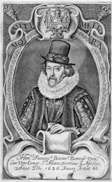
Sir Francis Bacon (1651-1626) par Cecil Thomas in Sylva Sylvarum...
" He who would come duly prepared, and fitted to the business of interpretation, must neither be a follower of novelty, custom, nor antiquity; nor indulge himself in a liberty of contradicting; nor servilely follow authority. He must neither be hasty in affirming, nor loose and sceptical in doubting; but raise up particulars to the places assigned them by their degree of evidence and proof. His hope must encourage him to labour, and not to rest; he must not judge of things by their uncommon nature, their difficulty, or their high character; bat by their just weight and use. He must, in his own particular, carry on his view with. concealment, and yet have a due regard for posterity. He must prudently observe the first entrance of errors into truths, and of truths into errors, without despising or admiring any thing. He must understand his own talents and' abilities, or the advantages of his own nature. He must comply with the nature of others. He must, as with one eye, survey the natures of things, arid have the other turned towards human uses. He must distinctly understand the mixed nature of words; which is extremely capable both of prejudicing and assisting. He must lay it down to himself, that the art of discovering will grow up, and improve, along with discoveries themselves. He must not be vain either in delivering or concealing the knowledge he has acquired; but ingenuous and prudent, and communicate his in-ventions without pride or ill-nature : and this in a strong and lively manner, well defended against the injuries of time, and fit for the propagation of knowledge, without occasioning errors; and, which is the principal thing of all, it must be such as may select and choose for itself a prepared and suitable reader." [Prefatory Aphorisms of the Novum Organum Scientiarum, No. XI. Cf. 1, 2, 3]
The following observations from the same source, will bring me back to my subject:
" And again; if any one should condescend to regard such things as are accounted rather curious than useful; and take a thorough view of the works of the alchymists, or the followers of natural magic; he might, perhaps, be at a difficulty which he should withhold, his tears, or his laughter. For the alchymist goes on with an eternal hope; and where his matters succeed not, lays the blame upon his own errors; and accuses himself as not having sufficiently understood either the terms of his art, or his author: whence he either hearkens out for traditions and auricular whispers, or else fancies he made some mistake as to the exact quantity of the ingredients, or nicety of the experiment; and thus repeats the operation without end. And if, in the mean time, among all the chances of experiments, he throws any which appear either new or useful, he feeds his mind with these as so many earnests; boasts and extols them above measure; and conceives great hopes of what is behind. It must, indeed, be allowed that the alchymists have made many discoveries, and obliged mankind with useful inventions; but they are well represented in that fable of the old man, who left an estate to his children, buried somewhere or other, he told them, in his vineyard; which they, therefore, fell to dig for with great diligence; whereby, though they found no gold in substance, yet they received a better vintage for their labour."
" But such as apply to natural magic, and explain every thing by sympathies and antipathies, have, by supine and indolent conjectures, placed strange virtues and operations in things, and if, at. any time, they have produced works, they are rather suited to admiration and strangeness, than to fruit and advantage." [Novum Organum. Section V]
It is my intention, in this introductory chapter, after a, brief allusion to the style, and views of the alchymical writers, to notice the principal researches of the chemists of the fifteenth and two following centuries; and thus to give an historical sketch of be very little doubt that the writings attributed to him are entirely spurious. The Tractatus Aureus, or Golden Work is evidently a farrago of occult philosophy belonging to a much later period. HERMES, at the outset, is made to apologize for divulging the secrets of the black art. " I should never have revealed them," says he, " had not the fear of eternal judgment, or the hazard of the perdition of my soul, prevailed with me, for such a concealment It is a debt I am willing to pay to the just, even as the Father of the just has liberally bestowed it upon me." After this prelude, we might expect to be let into some of the mysteries of alchymy, but our curiosity is quickly disappointed, by finding that they are only revealed to the eyes and ears of the sons of art; " not to the profane, the unworthy, and the scoffers, who, being as greedy dogs, wolves, and foxes, are not to feed at our divine repast." The reader is then conducted into what is termed the innermost chamber, and regaled with a history and explication of various matters relating to the philosopher's stone, by means of which, " through the permission of the Omnipotent, the greatest disease is cured, and sorrow, distress, evil, and every hurtful thing evaded; by help of which we pass from darkness to light, from a desert and wilderness to a habitation and home, and from straightness and necessities to a large and ample estate." We are then directed to " catch the flying bird, " by which is meant quicksilver; " and drown it so that it may fly no more, " this is what is afterwards termed the fixation of mercury, by uniting it to gold. It is then to be plunged into the " well of the philosophers," or aqua regia " by which its soul will be dissipated, and its corporeal particles united to the red eagle," or muriate of gold. We may, however, at once cut short these observations by remarking, that all the details bear upon increasing the weight of gold by the influence of mercury, and this imaginary document of HERMES will suffice as an example of all the earliest alchymical authors. [sur les écrits hermétiques, cf. Table d'Émeraude, Sept chapitres Dorés, Epître de Marie à Aros, Livre de Crates] GEBER is another great name in the history of alchymy; though the exact period at which he lived is unknown, it was probably not later than the seventh century. His three books of alchymy were published at Strasburgh, in 1520, and, if genuine, of which there is much doubt, contain matter that well justifies the praise of BOERHAAVE, who considers him as a first-rate philosopher of his age. In bis chapter On the Alchemie of Sol, after descanting upon the different means of refining and dissolving gold, he describes several solar medicines in language which is tolerably intelligible; they are all solutions of gold in nitre-muriatic acid, with the addition of quicksilver, nitre, common salt, and some other saline matters, and the student is directed to prepare his mind for their performance by suitable acts of piety and charity, which, if earnestly and perseveringly carried on, may, after due time, enable him, in the language of his translator. Dr. SALMON, " to change argent vive into an infinite solific and lunific, without the help of any thing more than its multiplication." Alembics, crucibles, and various furnaces are so fully described, and, if -we may believe the MSS., depicted by GEBER, that he deserves to be mentioned also as the inventor of much useful apparatus. ARTEPHIUS in 1130 published several alchymical tracts; we are told by ROGER BACON and others, that he died at the advanced age of 1025, having prolonged his life by the miraculous virtues of his medicines; but his name, and that of JOHN DE RUPESCISSA, are now deservedly buried in oblivion. The alchymical annals of the thirteenth century are adorned by the name of ROGER BACON, a native of Ilchester in Somersetshire, and descended from an ancient and honourable family. In 1240, he returned from Paris, and became celebrated among the learned of the University of Oxford. At that time, however, the exposition of ignorance, and attempts to overthrow the dogmas of the schools, was a service of risk and danger; and to this Friar BACON, for he was a monk of the Franciscan order, laid himself fully open; he was accused of practising witchcraft, thrown into prison, and nearly starved, for exposing the prevalent immorality of the clergy; and, according to some, stood a chance of being burned as a magician.
Roger Bacon (ca. 1214 -1294)
I know of no work that strikes one with more surprise and admiration, than the Opus Majus of ROGER BACON ; he stands alone like a beacon upon a waste; his expressions are perspicuous and comprehensive, such as betoken a rare and unclouded intellect; and they are full of anticipations of the advantages likely to be derived from that mode of investigation insisted upon by his great successor, Chancellor BACON. This resemblance between ROGER BACON and his illustrious namesake, has scarcely been noticed by the historians of his period; it has, however, not escaped Mr. HALLAM'S observation, who adverts to it in his History of the Middle Ages. Whether Lord BACON, he says,
" ever read the Opus Majus I know not, but it is singular, that his favourite quaint expression, prae-rogativae scientiarum, should be found in that work; and whoever reads the sixth part of the Opus Majus, upon experimental science, must be struck by it as the prototype in spirit of the Novum Organum. The same sanguine, and sometimes rash confidence in the effect of physical discoveries; the same fondness for experiment; the same preference of inductive to abstract reasoning, pervade both works."
The alchymical work of ROGER BACON, that has been most prized, is the Mirror of Alchymy, but there is little either of interest or entertainment to be extracted from it. ROGER BACON has by some been spoken of as a benefactor to mankind, by others as an enemy to the human race, inasmuch as he is plausibly considered to have invented gunpowder, an invention by which the personal barbarity of warfare has certainly been diminished,
" but which, considered as an instrument of human destruction, by far more powerful than any that skill had devised, or accident presented, before; acquiring, as experience shews us, a more sanguinary dominion in every succeeding age, and borrowing all the progressive resources of science and civilization for the extermination of mankind, appals us," says Mr. HALLAM, " at the future prospects of the species, and makes us feel perhaps more than in any other instance, a difficulty in reconciling the mysterious dispensation with the benevolent order of Providence."
This discovery has sometimes been given to BARTHOLOMEW SCHWARTZ, a German monk, and the date of 1320 annexed to it, a date posterior to that which may be justly claimed for Friar BACON. Upon the authority, however, of an Arabic writer in the Escurial collection referred to by Mr. HALLAM, there seems little reason to doubt that gunpowder was introduced, through the means of the Saracens, into Europe, before the middle of the fifteenth century, though its use in engines of war was probably more like that of fire-works than artillery. Many authorities might be adduced to prove the common use of gunpowder early in the fourteenth century. EDWARD III. employed artillery with memorable effect, at the battle of Cressy, and in the fifteenth century hand-cannons and muskets came into use, and gun-powder was in common employ. ALBERT OF COLOGNE, surnamed THE GREAT, was a contemporary of ROGER BACON ; he is celebrated as the inventor of the brazen head which was demolished by the pious zeal of his pupil, the angelical Dr. AQUINAS, in consequence of his suspecting it to be an agent of the devil. ALBERTUS MAGNUS was what in our days is termed an universal genius. He is chiefly celebrated as the commentator of ARISTOTLE ; but, if we give credit to contemporary writers, he was deeply skilled in all the higher departments of alchymical philosophy. The names of RAYMOND LULLY of Majorca, and ARNOLD of Villanova, occur in this page of the history of chemical science. Their merit, however, consists rather in the quantity than quality of their writings. LULLY died on his passage from Africa in 1315, whither he had been to preach the truths of the Gospel; his body was carried to Majorca, where he was honoured as a martyr. BRUCKER says, " he was more ingenious than honest." His chemical opinions are scarcely worth quotation or abstract. He is said to have converted iron into gold in the presence of EDWARD I. in London, which was coined into rose-nobels. [BERGMAN Histor. Chem.] ARNOLD shines as a magician and astrologer. He was a renowned prophet, and predicted that the world would come to an end in the year 1376. He was shipwrecked on the coast of Genoa, in 1313. About the year 1560, a Treatise of Alchymy was published at Paris, attributed to NICHOLAS FLAMMEL. The work, however, is spurious, and was merely ascribed to him from his becoming suddenly, as it is said, very rich. The use he made of his wealth does his memory much credit: he founded hospitals, repaired churches, and endowed several charitable institutions; proceedings which ly no means savour of alchymy. Dr. SALMON, who in 1692 published one of the above-mentioned tracts, says,
" FLAMMEL was originally a poor scrivener, yet left so great monuments behind him, as must convince the most incredulous that he knew the secret, and performed such mighty works at his own proper cost and charges, as the most opulent prince in Europe can never do the like. I know, " says he, " a gentleman who went to view those mighty buildings and their records. The archives and governors of those places, he told me, own the matter of fact but deny the means, saying, that FLAMMEL was a very pious man, and went a pilgrimage to St. James of Gallicia, for a reward of which piety the holy saint bestowed that vast treasure upon him by way of miracle, thereby denying the power of art by which it was certainly effected, to establish a miracle performed by the Romish Saint."
portrait idéalisé de Nicolas Flamel (ca. 1330 - 1418)
He was moreover celebrated for his hieroglyphics, of which fac-similes are given in SALMON'S edition. They are much of the same cast as those that now adorn MOORE'S Almanack, and quite as edifying. In SALMON'S collection we find the Marrow of Alchymy by GEORGE RIPLEY, Chanon of Bridlington in Yorkshire, who was a chemist perhaps less deserving of the reputation he acquired than most of his compeers. He may be quoted as a chemical poet. His Compound of Alchemic, dedicated to EDWARD IV, is rugged enough, but not unintelligible. The following stanzas from the preface of this piece, given in ASHMOLE'S Theatrun Chemicum Britannicum, will afford a fair idea of RIPLEY'S merits as a poet and philosopher: [... Cf. Douze Portes] The degree of faith placed in alchymy was of course much shaken by the multiplied experiments that were undertaken during the seventeenth century; in general, however, those who failed attributed their ill success to any rather than the real cause. SALMON'S creed is that of most of his contemporaries.
" As to the great and philosophic work," says he, (meaning transmutation,) " it is my opinion and belief that there is such a thing in nature. I know the matter of fact to be true, though the way and manner of doing it is as yet hid from me. I have been eye-witness of so much as is able to convince any man endued with rational faculties, that there is a possibility of the transmutation of metals; yet, for all these things, will not advise any man, ignorant of the power of nature and the way of operation, to attempt the work, lest, erring in the foundation, he should suffer loss and blame me. Without doubt it is a gift of God from above, and he that attains it must patiently wait the moving of the waters; when the destined angel moves the waters of the pool, then is the time to immerge the leprous metal, and cleanse it from all impurities."
VAN HELMONT says,
" I am constrained to believe in the making of gold and silver, though I know many exquisite chemists to have consumed their own and other men's goods in search of this mystery; and to this day we see these unworthy and simple labourers cunningly deluded by a diabolical crew of gold and silver sucking-flies and leeches. But I know that many will contradict this truth; one says it is the work of the devil, and another, that the sauce is dearer than the meat."
BERGMAN, in summing up the evidence for and against the possibility and probability of transmutation, and founding his opinion upon the multitude of relations that have been handed down to us by different writers of apparent veracity, one or two of which I shall presently quote, observes, that
" although most of them are deceptive, and many uncertain, some bear such character and testimony that unless we reject all historical evidence we must allow them entitled to confidence ." [Opuscula, IV. 127]
For my own part, the perusal of the histories of transmutation appears to me to furnish solid grounds for a diametrically opposite opinion. They are all of a most suspicious character; sometimes the fraud was open and intentional, seconded by juggang dexterity; at other times the performers deceived themselves; they purchased what was termed a powder of projection, prepared by the adepts, containing a portion of gold, and when they threw it into the fire with mercury, and found that portion of gold remaining in their crucible, they had not wit enough to detect its source; but the cases which are quoted as least exceptionable are often exactly those which are really impossible ; I mean, where the weight of the powder of projection, and of the lead or other base metal taken conjointly, was exceeded by that of the gold produced. Such is HIERNES' history of PAYKUL'S transmutation, who, with six drachms of lead and one of powder, produced an ingot that was coined into 147 ducats; and many others. But the most celebrated history of transmutation is that given by HELVETIUS in his Brief of the Golden Calf: discovering the rarest Miracle in Nature, how by the smallest portion of the Philosophers Stone a great Piece of Common Lead was totally transmuted into the purest transplendent Gold, at the Hague in 1666: and, as it is a luminous epitome of all that has been done on this subject, I shall briefly abridge the proceedings:
portrait de Iohannes Fridericus Helvetius (1629-1709)
" The 27th day of December 1666, in the afternoon, came a stranger to my house at the Hague, in a plebeick habit, of honest gravity and serious authority, of a mean stature and a little long face, black hair not at all curled, a beardless chin, and about 44 years (as I guess,) of age, find born in North Holland. After salutation he beseeched me with great reverence to pardon his rude accesses, for he was a lover of the Pyrotechnian art, and having read my treatise against the sympathetic powder of Sir KENELM DIGBY, and observed my doubt about the philosophic mystery, induced him to ask me if I really was a disbeliever as to the existence of an universal medicine which would cure all diseases, unless the principal parts were perished or the predestinated time of death come, I replied, I never met with an adept, or saw such a medicine, though I had fervently prayed for it. Then I said, surely you are a learned physician. No, said be, I am a brass-founder, and a lover of chymistry. He then took from his bosom-pouch a neat ivory box, and out of it three ponderous lumps of stone, each about the bigness of a walnut. I greedily saw and handled for a quarter of an hour this most noble substance, the value of which might be somewhere about twenty tons of gold; and having drawn from the owner many rare secrets of its admirable effects, I returned him this treasure of treasures with a most sorrowful mind, humbly beseeching him to bestow a fragment of it upon me in perpetual memory of him, though but the size of a coriander seed. No, no, said he, that is not lawful: though thou wouldst give me as many golden ducats as would fill this room; for it would have particular consequences, and if fire could be burned of fire, I would at this instant rather cast it all into the fiercest flames. He then asked if I had a private chamber whose prospect was from the public street; so I presently conducted him to my best furnished room backwards, which he entered," says HELVETIUS, (in the true spirit of Dutch cleanliness,) " without wiping his shoes, which were full of snow and dirt. I now expected he would bestow some great secret upon me, but in vain. He asked for a piece of gold, and opening his doublet showed me five pieces of that precious metal which he wore upon a green riband, and which very much excelled mine in flexibility and colour, each being the size of a small trencher. I now earnestly again craved a crumb of the stone, and at last, out of his philosophical commiseration, he gave me a morsel as large as a rape-seed; but I said, this scanty portion will scarcely transmute four grains of lead. Then, said he, deliver it me hack: which I did, in hopes of a greater parcel; but he, cutting off half with his nail, said, even this is sufficient for thee. Sir, said I, -with a dejected countenance, what means this? And he said, even that will transmute half an ounce of lead. So I gave him great thanks, and said I would try it, and reveal it to no one. He then took his leave, and said he would call again next morning at nine. I then confessed that while the mass of his medicine was in my hand the day before, I had secretly scraped off a bit with flay nail, which I projected on lead, but it caused no transmutation, for the whole flew away in fumes. Friend, said he, thou art more dexterous in committing theft than in applying medicine; hadst thou wrapt up thy stolen prey in yellow wax, it would have penetrated and transmuted the lead into gold. I then asked if the philosophic work cost much or required long time, for philosophers say that nine or ten months are required for it. He answered, their writings are only to be understood by the adepts, without whom no student can prepare this magistery. Fling not away, therefore, thy money and goods in hunting out this art, for thou shall never find it. To which I replied. As thy master showed it thee, so mayest thou perchance discover something there of to me, who know the rudiments, and therefore it may be easier to add to a foundation than begin anew. In this art, said he, it is quite otherwise; for unless thou knowest the thing from bead to heel, thou canst not break open the glassy seal of HERMES, But enough; to-morrow, at the ninth hour, I will show thee the manner of projection. But Elias never came again; so my wife, who was curious in the art whereof the worthy man had discoursed, teazed me to make the experiment with the little spark of bounty the artist had left me; so I melted half an ounce of lead, upon which my wife put in the said medicine; it hissed and bubbled, and in a quarter of an hour the mass of lead was transmuted into fine gold, at which we were exceedingly amazed. I took it to the goldsmith, who judged it most excellent, and willingly offered fifty florins for each ounce."
Such is the celebrated history of ELIAS THE ARTIST and Dr. HELVETIUS. SIR KENELM DIGBY, whose name is mentioned in this narrative, was a renowned dabbler in the mysterious art. Under the date of 7th November, 1651, in EVELYN'S Diary [BRAY'S Memoirs of John Evelyn],
" he gave me," says Mr. EVELYN, " a certain powder with which he affirmed that he had fixed mercury before the late king. He advised me to try and digest a little better, and me a water which he said was only rain water, the autumnal equinox, exceedingly rectified and very volatile; it had a taste of strong vitriolic, and smelt like aquafortis. He intended it for a dissolvent of calx of gold; but the truth is, Sir KENELM was an arrant mountebank."
Nearly all the alchymists attributed the power of prolonging life either to the philosopher's stone, or to certain preparations of gold, imagining possibly that the permanence of that metal might he transferred to the human system. The celebrated DESCARTES is said to have supported such opinions; he told Sir KENELM DIGBY that although he would not venture to promise immortality, he was certain that life might he lengthened to the period of that of the Patriarchs. His plan, however, seems to have been the very rational one of limiting all excess of diet, and enjoining punctual and frugal meals [See Life of Descartes. CHALMERS'S.Biographical Dictionary]. The history of alchymy has been greatly enriched by the labours of the celebrated ELIAS ASHMOLE, who in 1652 published his Theatrum Chemicum Brittannicum, containing several Poeticall Pieces of our famous English Philosophers, who have written the Hermetique Mysteries in their owne ancient Language.
The most remarkable piece in this collection is the Ordinall of Alchimy, by THOMAS NORTON, illustrated by several comical cuts. It treats in separate chapters, of the objects of the occult science; of the difficulties of attaining them; of the different methods of pursuing them; of the characters of the elements; and of the five concords, of which the first is Patience, the second Assistance, the third Instruments, the fourth Situation, and the fifth Planetary Influence. It is difficult to select from this production any specimen capable of conveying an idea of its merits, that can come within the limits of a quotation. [...] In later times we have had two or three believers in transmutation. In the year 1782, Dr. PRICE, of Guildford, by means of awhile and a red powder, professed to convert mercury into silver and gold, and is said to have convinced many disbelievers of the possibility of such change; his experiments were to have been repeated before an adequate tribunal, but he put a period to his existence by swallowing laurel-water. Another true believer in the mysteries of this art was PETER WOULFF, of whom it is to be regretted that no biographical memoir has been preserved. I have picked up a few anecdotes respecting him from two or three friends who were his acquaintance. He occupied chambers in Bamard's Inn while residing in London, and usually spent the summer in Paris. His rooms which were extensive, were so filled with furnaces and apparatus that it was difficult to reach his fire-side. A friend told me that he once put down his hat, and never could find it again, such was the confusion of boxes, packages, and parcels, that lay about the chamber. His breakfast-hour was four in the morning; a few of his select friends were occasionally invited to this repast, to whom a secret signal was given by which they gained entrance, knocking a certain number of times at the inner door of his apartment. He had long vainly searched for the elixir, and attributed his repeated failures to the want of due preparation by pious and charitable acts. I understand that some of his apparatus is still extant, upon which are supplications for success, and for the welfare of the adepts. Whenever he wished to break an acquaintance, or felt himself offended, he resented the supposed injury by sending a present to the offender and never seeing him afterwards. These presents were sometimes of a curious description, and consisted usually of some expensive chemical product or preparation. He had an heroic remedy for illness: when he felt himself seriously indisposed, he took a place in the Edinburgh mail, and having reached that city, immediately came back in the returning coach to London. A cold taken on one of these expeditions terminated in an inflammation of the lungs, of which he died in 1805. He is the author of several papers in the Philosophical Transactions. A few other persons of leap note wight be quoted as believers in transmutation, but the history of one is that of all; and, in the emphatic language of Spenser, they were doomed
" To lose good days that might be better spent,
To waste long nights in pensive discontent;
To speed to-day, to be put back to-morrow,
To feed on hope, to pine with fear and sorrow;
To fret their souls with crosses and with cares,
To eat their hearts through comfortless despairs:
Unhappy wights I born to disastrous end,
That do their lives in tedious tendance spend."
But although the alchymists have given us little in the way of useful facts or applicable discoveries, their reign was fruitful in the invention of apparatus. Alembics, stills, retorts, receivers, and a variety of whimsical and complex vessels, in glass and porcelain, are described and depicted in their works ; and they not only possessed all the furnaces with which our modem laboratories are necessarily supplied, but were particularly expert m their construction, and often surprisingly happy in their application.
peinture extraite du Theatrum Chemicum Britannicum, Ordinall of Alchemy
Cette peinture montre un jeune homme instruit par un vieillard : il s'agit d'Adolphus et de Senior vus dans l'une des gravures de l'Azoth, du pseudo Basile Valentin, en frontispice. Le vieillard représente le Mercurius senex de Jung ou Cronos qui doit laisser place, dans la suite de l'oeuvre, à plus jeune que lui. En haut, la colombe symbolise l'Esprit qui distille la substance du Mercure ; quant aux anges musiciens, ils constituent les ordonnateurs de l'oeuvre et sont à l'image de ceux que nous voyons sur la Scala Philosophorum du Mutus Liber.
liste des ouvrages : 1. Bibliothèque des philosophes chimiques [G. Salmon, Richebourg] : I - II - III - IV - 2. De Alchimiae Gebri Arabis [Petreus, version 1545 et 1541] = Practica vera alkimia [Ortholanus ou Hortulanus] - 3. Theatrum Chemicum [Zetzner] : I - II - III - IV - V - VI - 4. Musaeum Hermeticum, 1625 [Jennis] - 5. Musaeum Hermeticum, 1678 - 6. Bibliotheca Chemica Curiosa [Manget] : I - II - 7. Anatomia Auri [Mylius] - 8. De alchimia libri tres [pseudo-Geber] - 9. Alchemiae, quam vocant, artisque metallicae doctrina [Gratarole] : I - II - Verae Alchimiae - 10. Theatricum Chemicum Britannicum [Ashmole] - 11. Pretiosa margarita novella [Janus Lacinius, Petrus Bonus] - 12. Bibliotheca chemica [Ferguson] : introduction - 13. Sceptical chymist [Boyle] - 14. Artis Auriferae [Perna] : I - II - III - 15. Hermetisches A.B.C : I - II - III - IV - 16. Dreyfaches Hermetisches Kleeblat [Vigilantius de Monte Cubiti] : a. Traité du Sel de Nuisement - b. Mercurius Redivivus [8 traités de Samuel Norton] - c. Büchlein vom Stein der Weisen [Marsile Ficin] - d. Warfferstein der Weissen, Francfort, 1656. - 17. Deutsches Theatrum Chemicum [Friederich Roth-Scholtzen.] : I - II - III - 18. Ars Chemica [Samuel Emmel] - 19. Ginaeceum Chimicum [Io de Treuis] - 20. De Alchimia Opuscula complura [Cyriacus Iacobus] - 21. Medicina Practica [William Salmon] - 22. Thesaurinella olympica aurea tripartita, Francfort, 1608 - 23. Rosarium novum olympicum et benedictum, Bâle, 1608 - 24. Pandora Magnalium Naturalium [Benedictus Figulus] 24bis. Pandora [Hyeronimus Reusner, Faustius (Johannes Michael)] - 25. Hermetisches Museum [Albrecht] : I - II - III - IV - 26. Divers Traitez de la Philosophie Naturelle - 27. Aurae Occultae Philosophicum [alias Azoth] - 28. Collectanea Chymica [William Cooper] - 29. Aurifontina Chymica [William Cooper] - 30. Eröffnete Geheimnisse des Steins der Weisen [Christian Liebezeit] -
- mss alchimiques d'Isaac Newton - mss alchimiques du Musaeum d'Histoire Naturelle [fonds Chevreul] - mss alchimiques de la bnf -
extraits de la Bibliotheca Chemica de John Ferguson sur : G. Salmon - Grasshoff - Geber - De Alchimia - Theatrum Chemicum - Dorneus - Du Chesne - Richard l'Anglais - Vogelius - Barnaud - Villeneuve - Alphonse X - Museum Hermeticum - Manget - Turba - Mutus Liber - Montanor - Zadith - D'Espagnet - Stolcius - Gratarolle - Ashmole - Lacinius - Petrus Bonus - Artis Auriferae - Hermetisches ABC - Eleazar - Fictuld - S. Norton - Rosarium - W. Salmon - Figulus - Drebbel - Crasselame -


Bibliothèque des Philosophes Chymiques, Charles Angot, 1742
Ferguson : There is no account of this person, which I have seen. The compilation was not originally of his making, for there to the edition with the same title which appeared In 1672-78 and bean as the editor's name : le Sieur S. Docteur en Medecine. Of this edition I have seen two volumes only, and I do not know if there were any more, though from the list of works detailed in the Privilege; which were proposed to be reprinted, there was material enough for at least other two volumes. The writings contained la this first edition are the following: In Tome I, A long preface; Hermes, La Table d'Emeraude. La Tourbe des Philosophes; Flamel, Bernard le Trévisan ; Zachaire, L'Opuscule; Wenceslas Lavinius.Traité du Ciel terrestre, Philalèthe, l'Entrée ouverte; Vocabulary of Chemical words. In Tome II. A long preface, Hermes, Les Sept Chapitres; Le Dialogue de Marie et d'Aros; l'Entretien de Calid et du Philosophe Morien; Artephius; Geber, La Somme de la Perfection, and at the end an Epistle to Claude Germain about his work Icon Philosophiae Occultae. The authors mentioned In the Privilege in addition to these are: Synesius, Ficinus, Arnaldus de Villanova, Lullius, Bacon, Ripley, Haly, Basilius Valentinus, Jean de Meun, Augurellus; Le grand et petit Paysant, la Fontaine des Amoureux de Sciences, la Complainte ou Remonstrance de la Nature et la responce de l'Alchimiste. Comparison of these lists will show that the present edition contains everything included in the early one, except the Epistola to Germain, and, besides, several of tbose mentioned in the Privilege. The editor ban been called sometimes le Sieur Salmon, and has been identified with Dr. William Salmon, who in 1692 also made a collection of alchemical writers. See the note under SALMON (William).
sources : Lenglet Dufresnoy, Histoire de la Philosophie, 1742, iii, p. 45 - Gmelin, Geschichte der Chemie. 1798, ii, p. 300. - Schmieder. Geschichte der Alchemie, 1832, p. 545 - Ladrague, Bibliothèque Ouvaroff, Sciences Secrètes, 1870, Nos. 630, 631. - Billings, Index. Catalogue, 1881, ii. p. 40; 1891. xii. p. 189 (calls him Maugin). - Kopp, Die Alchemie 1886, ii. p. 340 (calls him Mauguin). [on relèvera pour les impétrants une confusion à éviter avec Manget, auteur de la compilation intitulée Bibliotheca Chemica Curiosa ; notez que le Livre Secret d'Artephius (7), le Livre des Figures Hiéroglyphiques (9) et le Livre de Synesius (8) ont été publiés conjointement en français - latin - 1612, 1659 et 1682 - sous le titre générique : Philosophie Naturelle de Troiz Anciens Philosophes Renommez, etc. - cf. Chevreul critique d'Artephius - et en anglais en 1624. ]
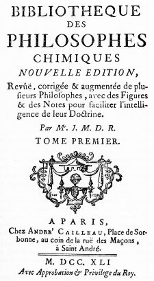
frontispice de la Bibliothèque des Philosophes Chimiques, tome I, Cailleau, 1741
Volume
I.
Avertissement
et
préface [which contains a section on
the
Truth of
the Science, and another on the Obscurity of the Philosophers.]
1. Hermès:
La Table d' Emeraude, avec
le Commentaire
de l'Hortulain. p. 1
2. Hermès:
Les Sept Chapitres.
p.
16
3. Le Dialogue
de Marie & d' Aros, sur le Magistére d'Hermès.
p. 77
4. Geber, La
Somme
de la Perfection. p. 85
Volume II.
5. La
Tourbe des Philosophes. p. 1
6. Entretien
du Roi Calid et du Philosophe Morien, sur le Magistere
d'Hermès. p. 56
7. Artephius,
Le Livre. p. 112
8. Synesius, Le Livre. p. 175
9. Flamel,
L'explication des Figures Hyérogliphiques.
p.
195
10. Flamel,
Le
Sommaire
philosophique. p. 263
11. Flamel,
Le Désir désiré. p. 285
12.
Trévisan,
Le Livre de la Philosophie
Naturelle des
Métaux. p. 325
13.
La
parole délaissée. p. 400
14.
Le
Songe Verd. p. 437
Volume III.
15. Basile
Valentin, Les douze clefs de Philosophie.
p. 1
16. Basile
Valentin,
L'Azoth, ou le Moyen de faire l'or caché des Philosophes. p.
84
[
le traité est apocryphe et le titre exact est : Aureliae Occultae
Philosophorum,
cf. Bibliotheca Chemica
Curiosa,
vol.
II, p.
198
]
17.
L'Ancienne
Guerre
des Chevaliers, ou le Triomphe
Hermétique
[Limojon de Saint Didier.] p. 181
18. La
Lumiere sortant par soi-meme des Ténèbres,
poème sur la Composition de la Pierre des Philosophes,
traduit
de
l'Italien, avec un Commentaire. p. 322
[Ferguson
: The original Italian poem is in three Canzoni of 7, 8,
and 10 stanzas
respectively, and the title runs:
" A i veri Sapienti si discorre teoricamente sopra la
compositione
della pietra de Philosophi: di Fra Marc-Antonio
Crassellame Chinese. I
do not know if it was published separately, but it was
printed face to
face with the French translation. The commentator,
describing his long
continued labour in trying to understand the writings of
the
philosophers, says that an anonymous MS. in Italian fell
into his hands
and, finding it skilfully written, he translated it and
added an
exposition so that its light should be diffused as widely
as possible.
Of the author he knew nothing except his anagram, so that
the name
appears to be a made up one. The Commentary was apparently
written in
Latin, but this version I have not seen. It was translated
into French,
with the Italian poem included, and was published with the
title: La
Lumiere sortant par soy meme des Tenebres ou veritable
theorie de la
Pierre des Philosophes . . . Paris. L. d'Houry, 1687. »
12°.
The second edition " reveue et augmentee de CLIll.
aphorismes
chymiques," was published by d'Houry at Paris in 1692,
12°. I have
not seen it. The translator says that he knows nothing
about the
author. The translation and commentary, but not the
Italian, were
reprinted by Richebourg (q.v.). The treatise is referred
to by Tollius
with grate. ful thanks to the learned translator, and the
author is
called by him Frater Antonius Crasselamius.
The present German version is from the French, but
seemingly not from
the edition of 1687. For instead of giving the assigned
author's name
as it appears there, the German translator, C. F. K.,
quotes it from
Tollius and at the same time transcribes it incorrectly as
" Marcus
Antoninus Crastalamius." Both translations are included by
Kopp among
alchemical books with ' light' for their title, but he has
not noticed
that one is translated from the other, and he makes no
allusion either
to the Italian verses or the reputed author. ]
Volume IV.
19. Philalèthe,
Traité de l'Entrée Ouverte du Palais fermé du roi.
p. 1
20.
Philalèthe,
Explication de ce Traité. p. 121
21.
Philalèthe
(Irénée), Expériences
sur
l'Opération du Mercure philosophique. p.
138
22.
Philalèthe
(Irénée), Explication de la lettre de Georges
Riplée,
à Edouard IV. p. 148
23.
Philalèthe, principes, pour la Conduite de l'Oeuvre
hermétique. p. 174
24. L'Arche
ouverte,
ou la Cassette du petit Paysan. p. 186
[ce traité est de Grasseus ou
Grasshoff. Voici des notes de Ferguson
: Johann
Grasshoff, a native of Pomerania, doctor of laws, Syndic of
Stralsund,
and afterwards councillor of Ernest,
archbishop and elector of Cologne, wrote partly anonymously,
but also
under the names Grassaeus (Crasseus, Grossaeus), Chortolasseus
and
Hermannus Condeesyanus. Of his chief work, "Der
kleineBauer,"
a good many editions are mentioned, Franckfurt, 1617, 1623,
Breslau,
1658, Leipzig, 1658, Halle, 1705, Hamburg, 1705, in addition
to the
above. Other works ascribed to him are: Dyas chymica
tripartita,
Franckfurt, 1625, 4°; Harmoniae
imperscrutabilis
chemico-philosophica. Ibid. 1625, 8°, but the
Harmonia is
also
assigned to Rhenanus. Latterly he lived
privately in Livona. and died at Riga, according to Witte's
conjecture.
- on
trouvera
ce traité dans la Bibliotheca
Chemica curiosa, vol. I, p. 585 et dans
le Theatrum
Chemicum, vol VI, p.
294.
]
25. Philippe
Rouillac,
Abrégé du grand Oeuvre des Philosophes. p.
234
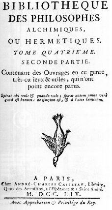
frontispice de la Bibliothèque des Philosophes Chimiques, seconde partie, Cailleau, 1754
PARTIE ii
26. Raymund
Lull,
L'Elucidation ou
l'Eclaircissement du
Testament. p. 297
27. Esprit
Gobineau de Montluisant, Explication des Enigmes et
Figures
hierogliphiques,
qui sont au grand Portail de l'Eglise . . . de Notre Dame
de Paris.
p. 307
28. Le Pseautier
d'Hermophile, envoyé a Philalèthe. p.
394
29. Traité
d'un Philosophe inconnu, sur l'oeuvre Hermétique, revu &
élucidé
par le Disciple Sophisée. p. 461
30. Lettre
Philosophique
de Philovite à Héliodore. p. 511
31.
Préceptes
et instructions du Pere Abraham à son fils contenant la
vraie
Sagesse
hermétique traduits de l'Arabe. p. 552
32. Wenceslaus
Lavinius: Traité du Ciel terrestre. p.
566
33.
Dictionnaire
Abrégé des Termes de l'Art & des anciens Mots. p. 570
2)-De
alchemia.
Petreus, Nurnberg. 1545
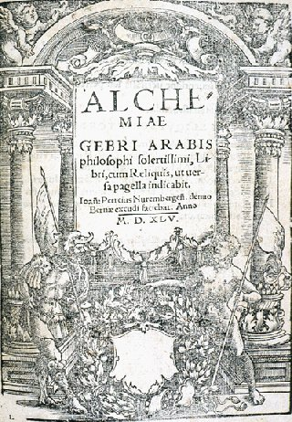
frontispice de l'Alchemiae Gebri, Excusum Bernae Helveticae per Mathiam Apiarium, sumptu & expensis honesti viri, Joannis Petrei, Norimbergensis typographi (Berna), 1545
Opus Maximi Philosophi | Ac Regis Indiae Ge| beri Foeliciter | Hic Comple | tum Est Ac | Impres | sum | Anno lesu Christi. M.CCCC | LXXIII. IIII. Nonas Augusti. |
Two or three of the paragraphs refer to alchemy, but the bulk of the book consists of 'secrets' based on the 'occult' properties of certain substances, and it closely resembles the style of the 'Magic of Kiranus.' There can be no doubt that this is one of the very rarest of books. The chemical writing's of Geber, with which the preceding has nothing to do, passed through a number of editions. Besides those in the present collection there are the following. The first is in Roman letter, printed between 1470 - 1480 (B. M. says Rome, 1473), without number or mark of any kind. It contains ff. 122, 25 - 26 lines to the page. It is called a 4°, but the copy before me has the original manuscript signatures, and they are in eights; Rome, printed from a MS. in the Vatican by Marcellus Silber, no date, 1490 - 1520, in small square 8°, of which there were two issues at least; Strasburg, 1528, 1529, 1530 (?), 1531, all in folio; Nuremberg, 1541, 4° (with other works); Venice, 1542, 8°; Nuremberg, 1545, 4° (with Other works); (1562 ?); Basel, 1572, 8°; Strasburg, 1598. 8° (1649, i2°); (1670 ?). These are in Latin. The German translation primed in the same style, and with the same illustrations as in the Latin, Strasburg. 1529, 1530, folio; (1581 ?); 1625, 8°; Frankfurt, 1710, 8°; Vienna, 1753, 8°. There are two translations in. English, that by Richard Russell, London, 1678, and with a new title-page, 1686; Salmon's version, 1692 (as above). The French version was not printed by itself, but in the Bibliothèque, 1672, 1678, 1741. Besides these printed editions I have met with several us. copies both on paper and vellum, of various dates, some of them as early as the fourteenth century. They are all in Latin, except one in Italian, in which language, so far as I am aware, there is no printed edition. Numbers of mss. are preserved in the large libraries.
1. Geber. De
investigatione
perfectionis metallorum, Liber I. p. 1
2. Geber.
Summæ
perfectionis metallorum, sive perfecti magisterij, Libri II.
p. 16
3. Geber. De
inventione
veritatis seu perfectionis metallorum. Liber I.
p. 165
4. Geber. De
fornacibus
construendis. Liber I. p. 184
5. Speculum
alchemi, Rogerij Bachonis. p. 208
6.
Correctorium
alchemiæ Richardi Anglici. p. 220
7.
Rosarius minor,
de alchemia, incerti authoris. p. 250
8. Liber
secretorum
alchemiæ Calidis filij Iazichi Iudæi. p. 274
9. Tabula
smaragdina de alchemia, Hermetis Trismeg.
p. 294
10. Hortulani
philosophi, super Tabulam smaragdinam Hermetis
commentarius. p. 295
2 bis :
Practica vera alkimia - In
hoc volumine de alchemia continentur haec. Gebri
Arabis philosophi
solertissimi, rerumq[ue] naturallum, praecipue metallicarum
peritissimi.
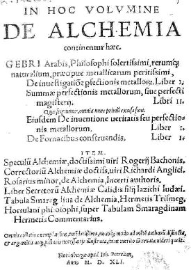
frontispice du De Alchemia Gebri, Nuremberg, 1541
On
lira avec intérêt ces notes de Ferguson concernant ces
deux traités, semblables pour le fond, datant de 1541 et de
1545
et surtout, les controverses autour de l'origine du
mystérieux
auteur du Commentaire à la Table d'Emeraude.
Ferguson :
The present edition of 1541
is of importance, for it was the first both of the Tabula
Smaragdina of
Hermes and of the Commentariolus written by Hortulanus to
elucidate it,
The whole book appeared again in 1545
with a new title: Alchemiae Gebri Arabis philosophi
solertissimi,
Libri, cum Reliquis, ut uersa pagella indicabit. loan:
Petreius
Nurembergett. denuo Bernae excudi faciebat. Anno M.D.XLV., 4°,
pp.
[16] 302 [2]. It has an elaborate ornamental title-page.. It
was
printed at Berne by Mathias Apiarius at the expense of
Petreius, and is
a reprint of the previous edition. The Commentariolus
begins on
p. 295. So far as I have observed hardly anyone who has
discussed the
question in connection either with Hortulanus or
Garland has taken notice of these two earliest editions of the
commentary, but has quoted only those of 1560 and 1571. These
may now
be described. The 1560 edition has this title:
Compendium Alchemiae. loannis
Garlandii Angli philosophi doctissimi: cum Dictionario
eiusdem artis,
atque de metallorum tinctura praeparatio neq: eorundem
Libello, ante
annos DXX. [A.D. 1040] eodem authore conscripto.
Adiecimus
eiusdem compendij per Arnoldum de Villanova explicationem.
Cum tractatu de SaIium Aluminumque varietate, compositione
& usu,
Scriptoris incerti. Omnia nunc primum in lucem edita. Basileae Anno M.D.LX.
The contents are as follows:
1-
Praefacio to Melchior, Bishop of Basel, by Basilius Joannes
Herold. :
loannis Garlandii Angli Philosophi doctissimi
2- Compendium Alchimie sive in tabulam Smaragdinam Hermetis
Trismegisti peri
chmeiaV
Commentarij, p. 1
- Tabula Smaragdina, p. 2.
- Commentarij. p. 5.
3- Arnoldus de Villanova, in
commentarios Hortulani expositio, p. 33.
4- Joannes Garlandius,
Synonymorum in arte alchimistica expositio, p. 53.
5- Joannes Garlandius, De
praeparatione Elixir libellus, p. 72.
6- Joannes Garlandius, De
Mineralibus liber, p. 93.
7- Joannis Garlandij
vita, p. 172.
At the end of the life is a list of Garland's works taken from
Bostonus
Buriensis, in which appears the title: Ortolanus, Lib. i.,
followed by
the words: ' Laus, honor, virtus & gloria.' This is merely
the
present commentary to which Boston has erroneously given the
name of
the author, and the four words fonn the opening of Hortulanus'
'Praecatio' with which the commentary begins. The 1571 edition
is a
reprint of that of 1560, but differs from it in the title and
other
particulars;
Laurentii Venturae Veneti,
Artium et
Medicinae Doct .De Ratione conficiendi Lapidis philosophici,
liber
unus. Ad Othonem Henricum Principem Palatinum.
Huic accesserunt eiusdem argumenti loan. Garlandij Angli
liber unus. Et
ex speculo magno Vinccntij libri duo. Cum Privilegio Caesar.
Maiest. Basileae
M.D.LXXI. 8 vo. pp.
[16] 203 [19, 2 blank]; 121 [7. 2 blank]; 173 [1 blank].
The contents of Part I. are as follows:
- Epistle to Count Otho Heinrich, dated: Venet. Idibus Maij,
1557. The
printer to the reader.
The contents,
- Liber de Alchimia, p. 1.
- AEnigma della pietra phisica di Lorenzo Ventura, &c., p.
200.
- Index.
Part II. contains the following:
- Joannis Garlendii Angli Philosophi doctissimi Compendium
Alchimiae,
siue in tabulam Smaragdinam Hermetis Trismegisti peri chmeiaV
Commentarij, p.
i.
- Arnoldus de Villanova, In Commentarios Hortulani Expositio,
p. 23.
- Joannes Garlandius Anglus, Synonymorum in arte Alchimistica
expositio,
p. 36.
- Garlandius: De preparatione Elixir libellus, Garlandius: De
Mineralibus liber, p. 67,
- Jonnnis Garlandij philosophi excellentissimi Vita, p.120.
- Leonardi Proebstelij Carmen, p. [122].
- Summa Capitum, pp. [124-128].
The ' Summa' is new, but Herold's ' Praefatio' is omitted.
Part III. consists of articles taken from the Speculum majus
of
Vincentus and others.
Except Mansi, those who have quoted this reprint refer to it
as if it
were a separate publication and had not appeared under the
title of
another work. If there be a separate edition of 1571, which is
quite
possible, I have not seen it. The commentary is the same in
both these
editions, so that the distinction drawn between them by Dom
Rivet,
namely that the edition of 1560 is an abridgement of that of
1571, made
by the author himself or by some other person subsequently,
has not
only
no foundation in fact, leaving the dates out of the question,
but has
not even any support from the actual titles. Dom Rivet,
however, took
his
description not from copies of the books, but from the entries
in
Lipenius and the Bibliotheca Barberiana, 1681, p. 453, 2. The
only
difference is in the first chapter, which in the 1560 edition
Is
lengthened by the insertion of the 'Tabula Smaragdina,'
omitted in the
1571 edition. In
every other respect the two issues are identical. So far as I
know
these books also are rare. When the 1541 and
1560 editions
are compared with each other there are several points of
difference to
be observed.
1. The title.
2. The introduction of Garland's name.
3. The additional tracts.
4. The statement that the edition of 1560 is the first.
5. The differences in the two versions.
1
and 2. It will be noticed that the phrase ' Compendium
Alchymiae' and
Garland's name do not occur in the titles of the earlier
editions, but
were introduced by Herold either of his own initiative, or,
more
probably, front the manuscript he used, while that of
Hortulanus has
disappeared from the 1560 and 1571 editions.
3. As to the additional tracts they do not occur in the
editiom of 1541
and 1545,
and they are assigned not to Hortulanus, but to Garland. That
they are
by him is a question of evidence, but their authenticity has
been categorically denied by Haureau.
4. The statement that the edition of 1560 is the first,
signifies:
either that Herold did not know the editions of 1541 and 1545,
which
seems unlikely, or that be meant that the version of
Hortulanus'
Commentary, which he was giving, as well as the other tracts
were now
printing for the first time, and in this sense he may have
been
correct, as will be seen from the following.
5. The differences between the earlier and later editions are
well
marked. There are thirteen chapters in the editions of 1541
and 1545 as
against twenty-one in those of 1560 and 1571. There are
different
readings throughout and different arrangement of words, and in
the 1560
and 1571 editions chapter v. has an introductory part which is
not
contained In the previous editions. As an illustration of the
differences the opening words, of Hortulanus' 'Praefatio' may
be given.
In the 1541 edition they are: Ego dictus Hortulanus, ab hortis
maritimis nuncupatus, pelle Jacobina inuolutus, indignus
uocari
discipulus philosophiae' . . . In the 1560 edition: Ego quidem
Hortulanus, ab horto, vel ab arce maritima dictus, Jacobina
pelle
inuolutus, nouissimus philosophorum,
indignus vocari discipulus philosophiae' . . . It may be
inferred,
therefore, that the editors of the two editions drew from
different
manuscript sources, and this is confirmed by Herold giving on
the
margin of his edition a few various readings which happen with
one
exception to be those of the edition of 1541. The
existence of
these two different printed versions has not, so far as I am
aware,
been noticed or mentioned
before. The authorship of the 'Commentariolus' has given rise
to some
diversity of opinion. Most of the older writers have accepted
toe
identity of Garlandia and Hortulanus without criticism, though
they are
not unanimous as to the date at which he flourished. Recent
researches
have settled that John de Garlandia, a native of England,
resident in
France, poet, musician, mathematician, grammarian, was born in
the
latter half of the twelfth and lived on to the middle of the
thirteenth
century, and was thus a senior contemporary of the scholars
who have
made this period conspicuous in the annals of learning. On the
ground
of identity this would be the date also of Hortulanus.
Fabricius, however, did not admit it and Kopp has made the
remark that
the question was not to be so readily answered as Morhof
appeared to
think. More recently still, Haureau, who in 1879 corrected the
patent
misconceptions of Dom Rivet about the editions, alluded to
above, has
denied altogether that Garland had anything to do with
alchemy, and has
rejected the works on the subject attributed to him.
Influenced by
certain manuscripts he is of opinion that Hortulanus is the
same as a
person called in them Martinus Ortholanus, who wrote a
treatise which
is contained in the Theatrum Chemicum (see ORTHOLANUS) and is
dated
1358. If there be doubt about the connexion of Hortulanus and
Garlandia, there is equal if not more about the existence of
Marlinus
Ortholanus. That the name occurs in manuscripts is hardly
sufficient to
establish the existence of the person. For, in a manuscript at
St.
Gallen of the fourteenth century, referred to by Kopp
(Beitrage, 1860.
p. 381), the opening of the 'Praefatio' runs thus: Ego a.
dictus
Ortulanus ab ortis Martini nuncupatus, &c., instead of 'ab
hortis
maritimis.' That one of these leadings is an error of
transcription is
pretty obvious. The meaning in either case is somewhat
obscure, but it
would not take much effort on the part of a possibly puzzled
scribe to
convert Ortulanus, ab ortis Martini' into 'Martinus
Ortulanus.' All
this is a matter for investigation, and anyhow it would be
premature to
assign the 'Commentariolus' of Hortulanus to a Martin Ortolan
or
Lortholain, about
whom Haureau admits that he had no lasting fame, or, it would
be more
correct to say, had none at all. While something has been said
in
support of the various opinions, no argument sufficiently
cogent and
conclusive has been put forward to induce belief that the
problem
of authorship hits been solved. As to the 'expositio' assigned
to
Arnoldus de Villanova, its authenticity, other things being
equal, must
obviously depend on the date fixed for Hortulanus. If he be
identical
with Garlandia the exposition could quite well be by Arnoldus,
who
flourished in the latter part of the thirteenth century. But
if he be
the same as Ortholanus and lived in the fourteenth century or
later,
the exposition could not be by Arnoldus, and Haureau in his
dissertation on Arnoldus, quite logically considers it not to
be by
him. Kopp, too, has pointed out that this 'expositio' does not
appear
in any list of Amoldus' writings, so that apart from the date,
it is
possibly not a genuine writing of
Arnoldus. Dom Rivet speaks of a treatise: La clef de
l'abrégé, of which there is a manuscript 'à
l'abbaie des Dunes.' Can this be a translation
of the 'expositio' ? The Commentary was often printed and it
was
translated into English, French, and German. The translation
into
English was made from the 1541 text [notons que
le texte
anglais ne reproduit pas l'erreur du texte français,
c'est-à-dire de reproduire meditatione
mais bien mediatione
ce qui change tout, puisque « méditation » devient
« médiation ». Il est remarquable d'observer que
Hoefer et Fulcanelli donnent la version « médiation
» là où Chevreul donne « méditation
», cf. Table
d'Emeraude],
and was printed along with Roger Bachon's The Mirror of
Alchimy,
London, 1597, pp. 17-27. The French translation was also made
from the
1541 text, and was published alone with Le Miroir d'Alquimie
de Rogier
Bacon, Lyons, 1557, pp. 30-56. The German version by Johann
Schauberdt
is appended to Pantheus' Vorarchadumia (sic), Magdeburg, 1600,
1608. As
it is somewhat difficult to disjoin
Hortulanus and Garland some of the following references apply
to both
and some to the two individually. Reference may be made also
to
ORTHOLANUS, where the connection with Hortulanus is further
considered.
1. De inuestigatio[n]e p[er]fectionis metallor[um]. Liber I. f.
1
2. Summae perfectionis metallorum, siue perfecti magisterij.
Libri
II... f. 20 [Libro Primo] - f. 126 [Libro
Secundo]
3. Eiusdem de inuentione ueritatis seu perfectionis metalloru.
Liber
I. f. 206
4. De
fornacibus construendis. Liber I. f. 229
Item.
5. Speculum alchemiae...
Rogerij
Bachonis. f. 257
6. Correctorium alchemiae... Richardi Anglici. f. 272
7. Rosarius minor, de
alchemia, incerti authoris. f. 309
8. Liber secretorum alchemiae Calidis filij
Iazichi Iudaei. f. 336
9. Tabula smaragdina de
alchemia,
Hermetis Trismeg. f. 363
10. Hortulani philosophi, super
tabulam smaragdinam Hermetis commentarius. f. 364
3)-Theatrum Chemicum Theatrum chemicum, præcipuos selectorum auctorum tractatus de chemiæ et lapidis philosophici antiquitate, veritate, jure, præstantia et operationibus, continens In gratiam Verae Chemiae, & medicinae Chemicae studiosorum (ut qui uberrimam inde optimorum remediorum messem facere poterunt) congestum, & in Sex partes seu volumina digestum; Singulis voluminibus, suo Auctorum et Librorum Catalogo primis pagellis: rerum vero & verborum Indice postremis annexo. Heredum Eberh. Zetzneri M.DC.LIX.
. . . Volumen Primum.
Argentorati
Sumptibus
Heredum Eberh. Zetzneri M.DC.LIX.
8°. Pp.794. Index [30]. Woodcuts in the text.
. . . Volumen Secundum.
8°. Pp. 549. Index [7]. 1 folding table. Woodcuts to the
text.
. . . Volumen Tertium.
8°. Pp. 859. Index [13]. 1 folding table. Woodcuts in
the text.
. . . Volumen Quartum.
8°. Pp. [8] 1014. Index [33] [1 blank]. 4 folding
tables. Woodcuts
in the text.
. . . Volumen Quintum,
M.DC.LX.
8°. Pp. [8] 912. Index [29, 3 blank]. A woodcut in the
text.
Theatri Chemici Volumen Sextum,
Theologis,
Medicis, et tam Vulgaribus quam Hermeticae, Chemiae
Studiosis
utilissimum, Praecipuos Selectorum Auctorum huius Seculi
Tractatus de
Chemia & Lapidis Philosophici Antiquitate, veritate
Jure
praestantia & operationibus continens, ex Germanica
& Gallica
lingua io Latinam translatum per Johannem Jacobum
Heilmannum
Bipontino-Palatinum M.D. Argentorati, Sumptib. Haeredum
Eberhardi Zetzneri,
M.DC.LXI.
8°. Pp. [18] 773 [25, 1 blank]. Woodcuts in the text.
Volumes I - II - III
- IV :- Zetzner, Ursel. 1602.
(Reprinted in 1659 by Zetzner in
Strasburg).
- Volume V :- Zetzner,
Strassburg, 1622. -Volume VI
:- Zetzner,
Strassburg,
1661.
Ferguson
:The THEATRUM
CHEMICUM
made its first appearance at Ursel, 1602, in four
volumes. Just a
century before the collection of Manget. It was reissued
at Strasburg
in 1613, in four volumes; a fifth volume was added in
1622, after which
came the present edition of 1659 -1661. A list of the
tracts to the
first
four volumes of the 'Theatrum Chemicum,'
arranged alphabetically with those in Manget's 'Bibliotheca'
in parallel columns, was published by Fabricius. It is
thus possible to
ascertain easily the writings which occur in both
collections, as well
as those to be found in only one of
them. To complete the survey the contents of the fifth
and sixth
volumes of the 'Theatrum'
would require to be incorporated with Fabridus' list.
Collections of
alchemical tracts by various authors were made at a
comparatively early
period, for the Greek manuscripts which remain consist
of treatises by
different persons, varying in number from four to
forty-three. A
similar fashion seems to have been followed in the
fourteenth century,
when works translated from Eastern originals were
gathered together. A
manuscript of such a collection to referred to by Wood
Brown, and it is
quite possible, as he suggests, that such manuscripts
were laid under
contribution by the editors of the printed collections
which we now
possess. There is, therefore, some ground for believing
that, while the
greater part of the 'Theatrum Chemicum'
is recent, a tract here and there may belong to the time
when alchemy
was first introduced into Europe. The earliest of the
quite modem
collections is probably that entitled: 'De
Alchemia.'
Norimbergae, 1541, containing the tracts of Geber and
others, of which
a new edition appeared in 1545. Then came another; 'De Alchemia Opuscula,'
Francoforti,
1550, after which was Gratarolo's
big
gathering in 1561, reprinted in part by Perna at Basel,
in 1573. This
same year Perna published another volume called 'Auriferae Artis . .
.Authores,'
which was reprinted by Waldkirch at Basel in 1593, a new
edition
appearing there in 1610 (q.v.). The Ars
Aurifera
was translated into German by Morgenstern, and printed
at Basel in
1613. The French collection, by Sieur S., appeared in
1672 - 1678;
Salmon's, of half-a-dozen tracts, in English, in 1692;
Manget's 'Bibliotheca'
in 1702, followed by Horlacher's abridgement In 1707; a
new French
collection by Richebourg in 1740, and a reprint of the
German in 1750.
These are the most comprehensive collections, but there
were a good
many others containing from two to seven or more tracts.
An enumeration
of these is made by Kopp.
Zetzner
Lazarus : A printer at Strasburg In the first half of
the seventeenth
century, who printed many books, but I cannot say that
those which I
have seen impress me favourably as specimens of the
typographic art.
Still he is commended as a craftsman who deserves to be
kept in
remembrance. The present collection is a monument of his
belief in the
' great work,' or in the literature of it. rather than
of his taste as
a printer. Perhaps one ought to admire his courage in
collecting,
reprinting and editing the tracts in this collection,
instead of
complaining of the undoubtedly shabby and unattractive
appearance of
the volumes.
sources :
Borel, Bibliotheca Chimica,
1654, p. 217 (1613 edition in five volumes). -
Fabricius, Bibliotheca Graeca,
Hamburgl, 1724, xii. pp. 714-723. - Beytrag
zur Geschichte
der höhern Chemie, 1785, pp. 585 (edition of
1602), 596
(editions of 1613 - 1622, 1658 - 1661). - Ladrague, Bibliothèque
Ouvaroff, Sciences Secrètes, 1870, No. 603. -
Kopp, Die Alchemie,
1886, ii. p. 341. J. Wood Brown, An
Enquiry into the
Life and Legend of Michael Scot, 1897, pp. 76 -
77.
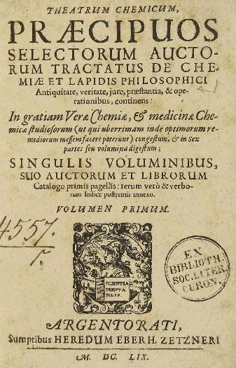
Theatrum Chemicum, volumen primum, 1659
Volume I.
1. Robertus
Vallensis.
De veritate & antiquitate artis Chemicæ & pulveris
sive
Medicinæ
philosophorum vel auri potabilis, testimonia &
theoremata ex variis
auctoribus, p.1
2. Libellus
qui
Testamentum Arnaldi a Villa Nova inscribitur, p. 28
3. Johannes
Chrysippus
Fanianus, De Arte metallicæ metamorphoseos, p. 31
4. Johannes
Chrysippus
Fanianus, De Jure Artis Alchemiæ, hoc est, variorum authorum
&
præsertim Iuris consultorum judicia & responsa ad
quæstionem
quotidianam p. 48
5. Thomas
Mufett.
Dialogus Apologeticus de jure et præstantia Chemicorum
Medicamentorum, p.70.
6. Thomas
Mufett.
Epistolæ quinque medicinales. p. 89
7. Theobaldus de
Hoghelande Mittelburgensis. De Alchemiae difficultatibus.
p. 109
8. Gerardus
Dorneus.
Clavis totius philosophiæ chemisticæ per quam potissima
philosophorum
dicta reserantur. p. 192
9. Gerardus
Dorneus. Liber Naturæ luce physica, ex Genesi desumta in quo
continetur, Physica
Genesis (p. 333) ; Physica Hermetis Trismegisti, Tabula
Smaragdina (p.
362) ; Physica
Trithemii
(p. 388) ; Philosophia Meditativa (p. 399) ; Philosophia
Chemica.
(p. 418) p. 326
10. Gerardus
Dorneus.
Tractatus Alter. De Tenebris contra naturam et vita brevis
(p. 457) -
De Duello
animi cum corpore (p. 472) - De Lapidum preciosorum
structura - p. 485.
11. Gerardus
Dorneus.
Congeries Paracelsicæ Chemiae de transmutationibus
metallorum.
p. 491
12. Gerardus
Dorneus.
De genealogia Mineralium atque metallorum omnium.
p. 568
Ferguson : Trevisanus de Chymico Miraculo quod Lapidem Philosophiae appellant. Dionys. Zecharius Gallus de eodem. Auctoritatibus varijs Principum huius artis, Democriti, Gebri, Lullii, Villanovani, confirmati & illustrati per Gerardum Dorneum. Cum Gratia & Priuilegio Caes. Maiest. Basileae, Typis Conradi Waldkirchii. Anno clc lcc.
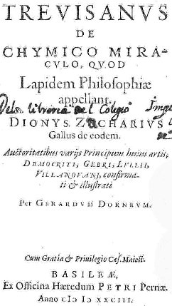
frontispice du Trevisanus de Chymico Miraculo, Basilae, 1583
8°. Pp. [5, i blank] 198
[4 blank]The tracts in this collection are the following:
- BernhardusTrevisanus,
De
Alchimia Liber, p. 1.
- Dionysius Zecharius, Opusculum
Philosophiae
Naturalis Metallorum, p. 49.
- Annotate quaedam ex Nicolao Flamello, p. 117.
- Testamentum Arnaldi Villanovani, p. 126.
- Aliae quaedam Annotationes ex variis authoribus, p. 127.
- Collectanea quaedam ex antiquis Scriptoribus, p. 152.
- Collectanea ex Democrito, p. 167.
- Summaria Declaratio eorum, quae dicta sunt hactenus ex
Democrito, per
aenigmata, p. 194.
The first edition is that
of
Basel, 1583, 8°. This collection was reprinted in the Theatrum Chemicum, 1602,
i. pp.
773-901, and again in 1659, i. pp. 683-794;
but
although in the table of contents they are run together
inaccurately,
the mistake is not made in the book itself of deliber-ately
describing
the Annotata ex Flamello as if they formed a commentary on
Denis
Zachaire's tract. Gmelin (Geschichte der Chemie,
1799, i. pp. 60-61) seems to have misunderstood the title of
the tract
as given both in
this Collection (p. 117) and in the Theatrum
Chemicum, i. p. 748. The
error was apparently introduced by Manget, of entering Flamels
Annotata
as if they were written upon Denis Zachaire. See note on
Zachaire.
Gerard Dorn flourished in the latter half of the XVI. century
at
Frankfurt a. M. He was a devoted adherent of Paracelsus and
defended
him from the attacks of Erastus and others, while he himself
had a
controversy with Jacques Gohory. He translated several of the
works of
Paracelsus into Latin, wad besides those in the present
collection
wrote a good many others. [Dans son Histoire de la Médecine,
vol. III, p. 341, Kurt Sprengel dit ceci de Dorneus :
« Gérard
Dorn, médecin à Francfort sur le Mein, s'est fait
beaucoup conaître par son atachement à Paracelse. Il
était entièrement animé de l'esprit de son
maître : la cabale passait à ses yeux pour la source de
toutes les connaissances humaines, et il préférait
Trithemius à tous les philosophes. Sa grossièreté
nele cédait en rien à celle de Paracelse, et il accablait
d'injures tous ses antagonistes. En sa qualité d'adepte,
il ne
lui fallait que quinze mois pour préparer la pierre
philosophale, tandis que tous les autres consacraient deux
années à ce travail - Lapis metaphysicus aut
philosophicus, in-8°, 1570 -. Il dérivait la chimie
entière des premiers chapitres du premier livre de Moïse,
dont il expliquait alchimiquement les mots. Ces paroles
surtout : Dieu
sépara l'eau qui est sur la terre de celle qui est
au-dessous,
et nomma la première Firmament, lui paraissaient renfermer
l'idée du grand oeuvre. En même temps il accumulait des
explications tirées de la philosophie des nouveaux
platoniciens,
ce qui donne à son livre un aspect si bizarre, qu'il
serait
difficile d'imaginer un galimatias plus savant - De
naturae luce
physicâ ex Gensi desumtâ, in-8°, Francof. 1583, p. 47.
Il publia aussi contre Thomas Eraste, le plus ardent
ennemi de
Paracelse, un écrit polémique, qui n'est autre chose
qu'un extrait des invectives auxquelles son maître
lui-même
s'était abandonné - Ad Thom. Erastum admonitio modesta
satis, in-8°, 1583 » ]
13.
Bernardus
G.
Penotus. De vera praeparatione & usu Medicamentorum
Chemicorum,
Tractatus
varii. p. 592
-
Precatio Raymundi Lullii ante medicinarum exhibitionem, p.
682.
14.
Bernardus
Trevisanus, De Chemico miraculo, quod lapidem
philosophiae appellant [sive De Alchemia Liber], p. 683.
15. Dionysius
Zacharias. Opusculum
philosophiæ naturalis metallorum. p. 710
16. Annotata
quædam
ex Nicolao Flamello (Summarium philosophicum). p. 748
- Aliae quaedam annotationes ex variis auctoribus, p. 754.
- Collectanea ex Democrito, p. 776.
- Summaria Declaratio eorum, quaa dicta sunt hactenus ex
Democrito, per
aenigmata, p. 792.
Volume II.
17. Bernardus
G.
Penotus. Præfatio, p. 4.
18. Gaston
Claveus.
Apologia Chrysopæia & Argyropoeiæ adversus Thomam
Erastum, p. 6.
19. Bernardus
G.
Penotus. Præfatio p. 81.
20. Ægidius
de Vadis. Dialogus inter naturam et filium Philosophiæ, p.
85.
21. Tabula,
diversorum
Metallorum vocabula, quibus usi sunt veteres ad artem
celandam,
explicans.
Inserted after p. 109.
22. Georgius
Ripleus. Duodecim
portarum Epitome, duobus modis concinnata (Axiomata
Philosophica),
p. 109.
23. Albertus
Magnus.
Compendium, De ortu & metallorum materia, supra quam
Spagyricus
radicalia
principia fundet, p. 123.
24. Isaac
Hollandus.
Fragmentum de opere philosophorum, p. 126.
29. Bernardus
G.
Penotus. Quæstiones tres de corporali Mercurio, An arte ex
corporibus
perfectis extractus, suo corpori commixtus faciat ad
generationem
lapidis
physici, sicut est quorundam firma opinio, p. 129.
30. Bernardus
G.
Penotus. Quinquaginta septem Canones de opere Physico,
quibus ars
dilucidior
fit, p. 133.
31. Vera
Mercurii
ex auro extractio cum sua historia, p. 137.
32.
Chrysorrhoas,
sive de Arte Chemica Dialogus, p. 139.
33.
Josephus
Quercetanus.
Ad Jacobi Auberti Vendonis de ortu & causis metallorum
Epistolam
conviciatoriam
responsio, p. 150. [Quercetanus,
alias Joseph Du Chesne mérite une attention particulière
parce que Fulcanelli assure que c'est le seul Adepte qui
ait, avec Nicolas de
Valois, donné le
nom vulgaire du Soufre rouge ou teinture... Cf. en outre ce
qu'en dit
Kurt Sprengel dans son Histoire
de
la Médecine, vol. 3 dans le commentaire à l'Aureum
Seculum Redivivum de Mynsicht]
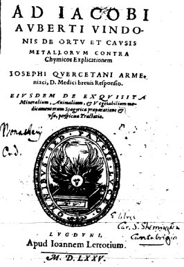
frontispice du Ad Jacobi,
etc.,
Quercetanus, Lugduni, 1625 - cliquez pour un portrait de
Joseph Du
Chesne [gravure de C. Ammon, 1652]
Ferguson : Joseph Du Chesne, or Duchesne, Latinized into Quercetanus, was born at l''Esture, or Esturre, in Armagnac, in Gascony, about 1544. Like Quattrami, he affords an instance of a person out of whose names two individuals have been constituted. He was styled Sieur da la Violelte, even Patin allows that, and Baron de Morence et d'lserable (Senebier), or Lyserable (Du Maine). Zedler, however, has drawn a distinction between Sieur de la Violelle, the chemist, who was a protestant, and had quarrels with his contemporaries, from the Baron de Morence, who lived in the sixteenth century, was the author of a surgical treatise [on gunshot wounds, Lyons, 1576, 8°], and believed that he could discover stolen articles by the divining rod. This distinction was repeated by Gundling, but there is no authority for it from La Croix du Maine, on whom apparently Zedler relies. Of his early life there is nothing recorded, but he is said to have spent a long time in Germany, engaged especially with chemistry. But in one of the many epigrams upon him, his stay is made out to have been much shorter, Quercetanus, 'faiseur de vinaigre,' is made to give a pupil the following advice how 'to get on';
Dedans trols
mois en soufflant I'AlchimIe
Tu
deuiendras gran docteur medicin
E
si pourras
pour ceste soufflerie
D'or
e
d'argent remplir un magazin.
Dehet
bon
cueur, sachant faire l'or fin,
Autant
en
droit, comme en Theologie
Te
faut
uaquer: e uerras à la fin
Tes
biens,
ton corps, e ton ame perie,
which presumably sums up the charges against
Quercetanus, and
defines
we estimate which his opponent had formed of him. Du Maine
is the
authority for the statement that Quercetanus was physician
of
François de France, Duke d'Alençon, but he gives no date.
He graduated at Basel about 1573, and in 1575 published his
reply to
Aubertus ' criticism of the chemists' theory of the origin
of metals.
By this work he drew upon himself both rage and ridicule.
Among these
attacks may be mentioned that of Fenotus:
Alexipharmacum, sive Antidotus
Apologetica, ad virulentias losephi cuiusdam Quercetani
Armeniaci,
euomitas in libellum Jacobi Auberti, de ortu & causis
Metallorum
contra Chymistas. lo. Antonio Fenoto Autore, In quo,
praeter
quorundam Paracelsicorum
medicamentorum
discussionem,
omnia fere argumeta refelluntur, quibus Chymistae probare
conantur, aurum argentumq; arte fieri posse. Addita est in
fine
Epistola M, Antiti de Cressonieres, ad eundem Quercetanum.
Desinant maledicere,
malefacta ne noscant
sua. Basilae»; no date, but about 1575, 8°, pp.
[10]
101 [1 blank].
Fenotus' tract is a
discussion on the theory of transmutation, and is of
historical
interest as showing what could be said against it at the
time when
perhaps it was most in vogue. The epistle of Antitus de
Cressonieres is
written in the macaronic style, and in It Quercetanus and
his
alchemical views are simply laughed at. A number of epigrams
follow in
the same vein in Latin, French, Italian, Greek. Quercetanus
was,
therefore, not in
favour with certain of his contemporaries. He took up his
residence at
Geneva, the citizenship of which was conferred upon him in
1584. Then
in 1587 he was received into the Council of the Two Hundred,
and, in
1589, was sent along with De Sillery and De Sancy,
ambassadors from
France to Switzerland, to ask assistance and to prevent the
peace which
the Bernese wished to conclude separately with Emmanuel
Philibert, Duke
of Savoy. In 1592 he helped to bring about the terms of the
peace which
the Republic of Geneva made with its neighbours. Apparently,
therefore,
he was a person of considerable standing and influence. The
year
following. 1593, he went to Paris, and was appointed
physician in
ordinary to Henry IV and Du Verdier says
that he was councillor and physician to Monseigneur, the
king's only
brother. As the result he acquired a wide connection, and an
enhanced
reputation. On the other hand it is said that his vanity and
contempt
of other physicians made him disliked and brought on
disputes. Perhaps
his attitude was not altogether without justification, when
one
remembers how very humble the Galenic physicians of the time
were and
how considerate and friendly towards the Spagyrists and
Paracelsists !
Quercetanus was not prevented by criticism or controversy
from
advocating his views and throwing off the shackles of
routine and the
mere authority of names. As a chemist who had had a training
which none
of' the school physicians obtained, he did his best to upset
the
Galenic physic in France and to substitute chemical
remedies. He did
not succeed in introducing Paracelsus' doctrines, but he was
one who
helped to overthrow the ' old colossus of humorism' and to
inaugurate
the new epoch of iatro-chemistry. All this was, of course,
obnoxious to
the Paris faculty, which ' persecuted him as its most mortal
foe and
forbade its members to have any professional dealings with
him'; he had
violent controversies with Riolanus and others, and he did
not hesitate
to return without stint the injuries which were showered
upon him. The
embers of these heated discussions look a long time to cool.
Years
after his death he was exhumed and reviled by Gui Patin, who
was a mere
child of seven years of age when Quercetanus died. The whole
is so
characteristic that it may be quoted for Patin's benefit;
Cette meme annee
(1609) Il mourut ici un mechant pendard de Charlatan, qui
en a bien tue
durant sa vie et apres sa mort par les malheureux ecrits
qu'il nous a
laisses sous son nom, qu'il a fait faire par d'autres
Medeclns et
Chymistes deça et de dela. C'est
Josephus Quercetanus, qui se faisoit nommer à Paris le
Sieur de
la Violette lequel étoit un grand Charlatan, un grand
yvrogne et
un franc Ignorant, qui ne savoit rien en Latin et qui
n'étant de
son premier Métier, que garçon Chirurgien [à Journeyman-barber]
du
Païs d'Armagnac, passa à Paris et
particulièrement à la Cour pour un grand Medecin, parce
qu'il avoit appris quelque chose de la Chimie en
Allemagne: je ne vous
dirai rien de ce Monstre davantage. . . . (N. L. i.
p. 269).
Metzger, who quotes this, adds: 'May
not one ask Tantae ne animis Galenici irae?' Of
this piece of
coarse humour parts have been reproduced in other estimates.
Boerhaave
calls him ' indoctus
homo, et alieno
calamo usus'; Eloy says that some of his works were
written for
him by hired writers; and so the reports spread. He was a
protestant,
and that may have been the reason, says another, of Bayle's
favourable
notice of him. But why
should Bayle be denied the right of commending one whom he
thought
commendable even from the alleged motive, when Gui Patin is
not
challenged for condemning what his biliousness made
condemnable?
Quercetanus was not in advance of his time to many of his
doctrines: he
believed In signatures; he was one of the first to give an
account of
the notion of palingenesis, and he accepted the
philosopher's stone and
transmutatlon as a matter of course. It is said that he had
some
glimmering idea of uric acid, and may have come across
phosphorus. In
certain diseases he prescribed • Mercurius dulcis,' under
the name
of Panchimagogue,' made up in pills known as' Pillules
de M. de
la Violette.' His death took place in 1609, His wife was a
grand-daughter of the celebrated scholar Gulielmus Budaeus.
Quercetanus' efforts were not limited to diplomacy, medicine
awl
controversy, but he ventured on the construction of a
tragi-comedy, and
composed a good many poems. The
following are mentioned: "La Morocosmie ou de la
folie, vanité et inconstance du Monde,' Lyon, 1513,
1601;
' Le
grand Miroir
du Monde,' Lyon, 1584; ' Poesies chrestiennes,'
Geneva, 1594, and his poetic talent has been reckoned as of
no mean
order by Chéreau. Possibly his poetry has stood Time's
ordeal
better than either his medicine or his chemistry. Several
works on
medicine came from his pen, of which the following may be
mentioned in
addition to the above:
- Sclopetarius, sive de curandis vulneribus quos sclopetorum
ictibus
acciderunt, Lugd.,1576, 8°, pp. [20] 209 [1 blank] [13. 1
blank}.
This was translated into French, Lyon, 1576.
- Liber de priscorum Philosophorum verae medi-cinae materia,
praeparationis modo, atque in curandis morbis, praestantia.
Deque
simplicium, & rerum signaturis . . . duo tractatus . . .
de
dogmaticorum medicorum legitima, & restitua
medicamentorum
praeparatione, libri duo . . . consilia medica,
clarissimis medicis Europaeis dicata. S. Gervasii, M.DC.III.
8°,
pp. [24] 432.
- Diaeteticon Polyhistoricon. Paris, 1606, 8°; Lipsiae,
1607;
excudebat David Anastasius, 1607, 8°. pp. 418 [a], without
place.
- Tetras gravissimorum totius capitis affectuum, Marburgi,
1606, 8°.
- Spagirica, . . . gründliche Beschreibung der
Mineralischen,
Animalischen und Vegetabilischen Artzneyen, derselben
rechten Gebrauch
und Spagirische Bereitung, . . , durch . . . lohannem Cupium
Borussum,
. . . ins Deutsche transferiret. Hall, M.DC. VIII. 8°. SIgs.
A to H
in eights, I4. This is different from Kessler's translation
above.
- Pestis Alexicacus, Paris, 1608, 4°, Lips., 1609, 8°, pp.
[16]
461 [1 blank] [25, 1 blank].
- Conseils de Medecine, dediez aux plus celebres Medecins de
l'Europe,
Paris, 1626, 8° pp. 316 [1, 3 blank].
- Quercetanus redivivus, seu Ars medica hermetica, ex
Quercetani
scrlptis dIgesta opera Johan. Schrodi, Francoft, 1648, 3
vols., 4°
- Recueil des plus curieux et rares Secrets touchant la
Medecine
Metallique & Minerale tirez des Manuscripts, de feu Mre
loseph Du
Chesne, Paris, 1648, 8°, pp. (8, including an engraved
title-page
and portrait] 370 [13, 1 blank]. [ce dernier titre est
disponible sur le site hermétisme
et alchimie, nouvelle collection]
Two or three of his books were translated into English:
- The Sciopetarie of J. Quercetanus . . . or his booke
containing the
cure of Wounds received by shot of gunne or such like
engines of warre.
Published into English by J. Hester. London, 1590, 8°; and
the
edition along with Paracelsus' 'A hundred and foureteene
experiments
and cures,' London, 1596, small 4°, pp. [16] 82; and with
Penotus,
London, 1642, small 410.
- A Breefe Aunswere of losephus Quercetanus Armeniacus,
Doctor of
Phisick to the exposition of lacobus Aubertus Vindonis,
concerning the
original, and causes of metalles, set foorth against
chimists. Another
exquisite and plaine Treatise of the same Josephus,
concerning the
Spagericall preparations, and vse of minerall, animall and
vegitable
Medicines. Whereunto is added divers rare secretes not
heeretofore
knowne of many. By John Hester, practitioner in the
Spagericall Arte,
London, 1591, small 8*, ff. [3] 61 [5]. The second tract has
a separate
title-page, but the folio numbers run on consecutively.
- The Practise of Chymicall and Hermeticall Physicke for the
preservation of health . . . translated by Thomas Timme. 2
parts.
London, 1605, 4° ff. [5] [97].
- The method of preparing certain of big remedies is given
by GREIFF
(Friederich) (q.v.).
voyez
encore
sur Quercetanus l'introduction - sous l'angle R+C -
à l'Aureum Seculum Redivivum
; il
faut se garder de confondre
Joseph Du Chesne, alias Quercetanus, avec Andreas
Quercetanus
(1584-1640) -
34. Joannes
Dee. Monas
Hieroglyphica, p. 192.
35.
Laurentius
Ventura.
De Ratione conficiendi Lapidis philosophici Liber, p. 215.
36. Joannes
Franc.
Picus Mirandulanus. Opus Aureum de Auro, p. 312.
37. Rogerius
Bacho.
De Alchemia Libellus cui titulum fecit speculum Alchemiæ, p.
377.
38. Richardus
Anglicus.
Libellus utilissimus Peri
ChmeiaV, Cui titulum fecit Correctorium, p.
385.
Ferguson : Of
Ricardus
Anglicus Bale can say no more than that he is mentioned by
Symphorianus
Champerius as a notable physician, distinguished by his
learning, skill
and success; that he wrote various works on medicine and
alchemy, but
that the time at which he flourished was unknown to him.
Gmelin places
him doubtfully in the thirteenth century, Lenglet Dufresnoy
says he
died in 1336, which date is given by Fuchs as that at which
be
flourished, both borrowing from Justus. Schmieder,
untrammelled by
facts, has constructed a. pretty and plausible biography for
him; but,
as far as I know, it is purely Imaginary. Unfortunately some
of it has
been quoted by Kopp, and It has thereby got currency which
it does not
merit. Matthias's account to quite dear and succinct:
Richardus
Anglicus de Wendoure, Canonicus S. Pauli Londinensis,
Professor
Medicinae Parisinus, Archiater Gregorii IX, PP. † a. 1252. So far as
it goes
this seems correct. He was the same as Richard of Wendover,
who was a
physician and a canon of St. Paul's, in which he held the
prebend of
Ealdland, about 1229. Matthew Paris says he was physician of
Gregory
IX., who at his death gave Richardus a crucifix with relics,
which he
in turn bequeathed to St. Albans. He died in 1252, leaving
various
bequests. There are several persons of similar name, from
whom he is to
be distinguished. One is Richard of Wendover, bishop of
Rochester;
another is Richardus Anglicus, the jurist, and still another
is
Richardus, a physician of Montpellier, at the beginning of
the
thirteenth century. He is identical with another famous
physician, Richardus
Anglicanus, or Salernitanus, author of a work, ' Practica
sive
medicamenta,' and 'Tractatus da Urinis,'
quoted by Gilbertus Anglicus. The chief work of Richard of
Wendover is
called 'Micrologus,'
a
cyclopaedia. of medicine, of which parts or sections
apparently exist
under their special names. Numerous manuscripts of his various
works are
extant in the Bibliothèque Nationale, the Bodleian,
Cambridge
University, and in college libraries at Oxford, and
Cambridge. These
are enumerated by Kingsford in his article in the Dictionary
of
National Biography. As the present work
is not included by him or by Littré among the works of the
physician one may doubt if it be by him stall. On the other
hand,
Jöcher, who says be flourished to 1230, and had studied at
Paris
and Oxford, assigns to him De Urinis, De crisi,
and
other medical works, and also the Correctorium Alchymiae.
Borel ascribes to him besides the present, Rosarius
minor
and Speculum
Alchimiae. But this seems a mistake, for the Rosarius
minor
is by an
unknown author add the Speculum Alchimiae
is by Roger Baron. The 'Correctorium' is
practically the same as the 'Correctio Fatuorum'
(g.v).
39. Libellus
Alius Peri ChmeiaV
ultissimus, et rerum metallicarum cognitione refertissimus,
Rosarius
Minor
inscriptus, incerti quidem sed harum tamen rerum non
imperiti Auctoris,
p. 406.
40. Albertus
Magnus.
De Alchemia, p. 423.
41. Joannes
Augustinus
Pantheus. Ars & Theoria transmutationis metallicæ, cum
Voarchadumia,
numeris & iconibus rei accommodis illustrata, p. 459.
Volume III.
42. De magni
lapidis
compositione & operatione liber, also called De Alchemia
Incerti
Authoris, p. 5.
43. De eadem
Materia
Capita aliquot, [De Lapide Philosophico], p. 53.
44.
Aristoteles.
De Perfecto Magisterio, p. 76.
45. Arnaldus
de
Villanova. Liber Perfecti Magisterii, qui lumen luminum
nuncupatur.
Vocatur
etiam Flos florum, p. 128.
46. Arnaldus
de
Villanova. Practica, ex libro dicto Breviarius librorum
Alchemiæ,
p. 137.
47. Arnaldus
de
Villanova. De Decoctione Lapidis Philosophorum, et de
regimine ignis,
p. 137.
48.
Efferarius.
De Lapide Philosophorum secundum verum modum formando, p.
143.
49.
Efferarius.
Thesaurus Philosophiæ, p. 151. Raymundus Lullius. Praxis
universalis
magni operis, p. 165.
50. Odomar.
Practica, p. 166.
51. De
Argento in
Aurum verso, p. 170.
52. De
Marchasita,
p. 173.
53. De
Arsenico,
p. 177.
54.
Præparatio
salis Armoniaci secundum Rasim, p. 179.
55. De Sale
Alkali, p. 180.
56. Quæstio
an lapis Philosophorum valeat contra pestem, p. 181.
57. Vetus
epistola
de metallorum materia & artis imitatione, p. 187.
58. Practica
Caravantis
Hispani, p. 188.
59. Joannes
de
Rupescissa.
Liber de confectione veri lapidis philosophorum, p. 189.
60. Joannes
Aurelius
Augurellus. Chrysopæia carmine conscripta, p. 197.
61. Thomas
Aquinas.
Secreta Alchemiæ Magnalia: de corporibus supercælestibus,
quod
in rebus inferioribus inveniantur, quoque modo extrahantur,
p. 267.
62. Thomas
Aquinas.
De Lapide Minerali, animali & plantali, tractatus, p.
276.
63. Thomas
Aquinas.
Thesaurus Alchemiæ secretissimus ad fratrem Reinaldum, p.
278.
64.
Joannes de
Rupescissa.
Liber Lucis, p. 284.
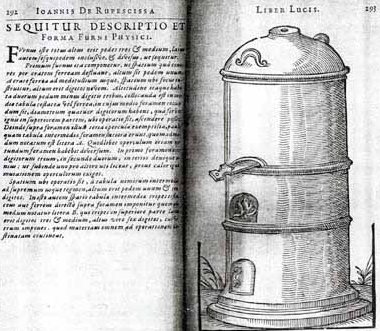 |
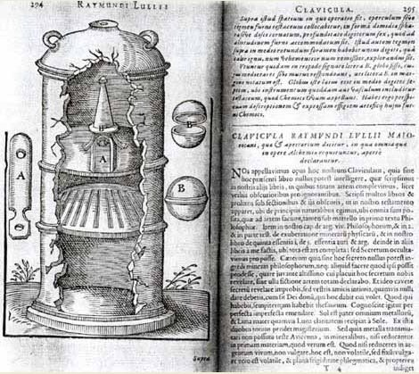 |
Ioannis
De Rupescissa - Sequitur descriptio et forma furni physici
(pp.
292-295) [cf. aussi Bibliotheca Chemica
Curiosa, vol. II, p. 87]
65.
Raymundus
Lullius. Clavicula
& Apertorium, p. 295.
66. Joannes
Isaac
Hollandus. Opera Mineralia, sive de Lapide Philosophico
omnia, p. 304.
67.
Ewaldus
Vogelius.
Liber de Lapidis physici conditionibus; quo abditissimorum
Auctorum
Gebri
& Raymundi Lullii methodica continetur explicatio, p.
515.
Ferguson
: The statements about this person are rather conflicting, due
to the
fact that some regard him as identical with Hoghelande, while
others
consider him distinct. Even among those who take the former
view there
is want of unanimity. The earliest allusion to the question
which I
have seen is by Conring in the second edition of his Hermetica
Medicina,
1669. He there speaks of Vogel ' who was in the habit of
calling
himself at one time Theobaldus, and at another de Hogelande,
with an
unpraiseworthy lack of decision, a man specially devoted to
chemistry.'
Conring, who found any stick good enough to beat the chemists
with,
here falls foul of the pseudonym, — which, by the way, with an
unpraiseworthy lack of accuracy be divides into two — as if
Vogel
was
the only author who bad ever used another name. He assigns to
Vogel the
present treatise: he could hardly do otherwise; but be credits
the ' Historiae
transmutationis' to 'Ewaldus,' without specifying the
surname.
From this it would appear that Conring considered that
Hogelande was the pseudonym, and Vogel the orthonym. Morhof,
who wrote
his Epistle
in 1673, says just exactly the opposite of Conring: Theobaldus
ab
Hogelande qui se ficto nomine appellat Ewaldum Vogelium. König
followed in 1678: Theob. ab
Hogeland
ficto nomine Ewaldum Vogelium sese vocare solet,
he says under Hogelande, but does not quote a single book by
him. Under
the heading Vogelius, however, he makes no allusion whatever
to this
statement, and deals with him as a distinct person: '
Brabantus,
Medicus,' and as the genuine and
independent author of the present work, and mentions none of
Hoghelande's writings. Now though Conring might be justified
in the use
of the word ' solet,' it was certainly not correct for König
to
employ it. For while Vogel under the pseudonym of Theobaldus
or Ewaldus
de Hoghelande wrote two books, Hoghelande under that of Vogel
wrote
only one, and one instance does not constitute a custom. The
following
year, 1670, Lipenius brought out his Bibliotheca
realis
Medica,
and the problem is not simplified by his treatment of it. To
Vogel is
correctly assigned the present work; to Theob. de Hoghelande,
the
treatise ' De
Alchemiae Difficultatibus,' 1594, and in the Theatrum
Chemicum
[vol. I, p. ]; but the tract 'Historiae
aliquot transmutationis Metallicae pro Defensione Alchymiae,'
Coloniae
Agr., 1604, is said to be by ' Ewaldus Vogelande s. Theob.
Hogelande.' The name Vogelande is a piece of confusion, and
the author
of this tract calls himself Ewald von Hohelande and not
Theobaldus,
unless these two be identical, which I doubt. König was quoted
as
the authority for the pseudonymity by de la Rue in 1734. and
so it
filtered down to Baumer, who in 1782 puts the present work
under
Theobaldus von Hogeland with the ' nomine ficto Ewaldi Vogel,'
and
ultimately to Van der Aa. On the other hand there if no
evidence in the
case of a large number of authorities that identification was
ever
thought of. Van der Linden in 1637 keeps them entirely apart,
Borel in
1654 does the same, and these, are followed by Mercklin and
Manget.
Andreas in 1643 makes no allusion to Vogel at all, but only to
Theobaldus de Hoghelande. Eloy, so far from identifying them,
has taken
some trouble to distinguish them, and he seems also to doubt
the
identity of Theobaldus and Ewald von Hoghelande. He quotes
Paquot's
analysis of Vogel's book. Later writers have almost forgotten
them.
Gmelin treats them as distinct, and Schmieder does not mention
Vogel or
this book, and says nothing about the name Ewald as an
alternative of
Theobaldus. Kopp does not include any of these names or the
books in
his history of Alchemy. In the note to HOGHELANDE (i., pp.
411, 412) I
referred to this question of identity. So far as the evidence
goes
there is no reason for believing that Hoghelande and Vogel
were
identical. When the statements of Conring and Morhof are
reconciled and
established, it will be time to speak of identification. They
cannot
both be right.
68. Justus
à
Balbian. Tractatus Septem de Lapide Philosophico, p. 649.
69. Jodocus
Greverus
(Grewer). Secretum, p. 699.
70. Alanus.
Dicta
de Lapide Philosophico, p. 722.
71. Conclusio
summaria
ad intelligentiam Testamenti seu Codicilli Raymundi Lullij,
et aliorum
librorum ejus; nec non argenti vivi, in quo pendet intentio
tota
intentiva,
qua aliter Repertorium Raymundi appellatur, p. 730.
72. Joannes
Pontanus. Epistola
in qua de lapide quem Philosophorum vocant, agitur, p. 734.
73.
Nicolaus
Barnaud. Commentariolum
in quoddam
Epitaphium [Ælia Lælia Crispis]
Bononiæ
studiorum, ante multa secula maæmoreo lapidi insculptum, p.
744.
[Compare iv.
p 805. L'épitaphe de Bologne
est :
D
M ELIA LAELIA CRISPIS, NEC VIR , NEC MVLIER,
NEC ANDROGINA
, NEC PVLLLA , NEC IVVENIS, NEC ANVS.NEC MERETRIX, NEC
PVDICA, SED
OMNIA SVBLATA NEQVE FAME . NEC TERRO NEQVE VENENO SED
OMNIBVS NEC
COELO, NEC AQVIS NEC TERRIS SED VBIQVE lACET
LVCIVS,.AGATHO, PRISCIVS,
NEC MARITVS , NEC AMATOR , NEC NECESSARIVS , NEQVE
MOERENS , NEQVE
GAVDENS, NEQVE FLENS, HANC NE QVE QVE MOLEM, NEC
PYRAMIDEM, NEC
SEPVLCHRVM, SED OMNIA SCIT, ET NESCIT QVID CVI POSVERIT.
HOC EST
SEPVLCHRVM, INTVS CADAVER NON HABENS, HOC EST CADAVER,
SEPVLCHRVM EXTRA
NON HABENS, SED CADAVER IDEM EST , ET SEPVLCHRVM SIBI
Ferguson
: This is an epitaph cut on a block of white and red
marble, which
existed at Bologna. As it is a complete enigma, it has
exercised the
wits of many persons for three hundred years to find out
its meaning
and application. Marius L. Michael Angelus published a 410
pamphlet on
it at Venice, in 1548; Sir W. Scott alludes to it as a
perennial
antiquarian problem (The Antiquary, ch. xiv.). In 1683
Caesar Malvasia
in his pamphlet enumerates forty-three attempted solutions
of it. It
has been thought to denote rain, the soul, Niobe, Lot's
wife, a child
promised in marriage that died before its birth, and so
on. See the
notices in Acta Bruditorum 1684, p. 263 ; 1706, p. 88;
1720, p, 6; in
Christoph. August. Hermann's Potcile, Halae, 1726, ii. p.
306. Here of
course it is applied to the philosopher's stone, for which
interpretation we are indebted to Nicolaus Barnaud, who
wrote a
commentary on the inscription in this sense, reprinted in
Theatrum
Chemicum, iii. p.
744 (q.v.), and in Manget, Bibliotheca Chemica
Curiosa, ii. p.
713
(q.v.). The epitaph with its puzztling antitheses was too
choice a
morsel to escape the alchemists, who were fascinated by
obscurities
like those of the Tabula Smaragdina and delighted in
ascribing to the
great Arcanum the most contradictory properties, so as to
display its
infinite perfections, and at the same time to baffle the
uninitiated.
Borel (Bibl. Chem. 1654, P. 3) must have considered the
inscription to
be alchemical; he quotes the explanation
of it by Richardus Basinstockius, Dordrecht, 1618, in
verses prefixed
to the Mataotechnia Medicinae Praxeos of Noah Biggs, Lond,
1651, "Elia
Lelia's Art" is referred to. Jung consacre un
chapitre de son Mysterium conjunctionis, t. I à
l'énigme
de Bologne.]
74. Nicolaus
Barnaud.
Processus Chemici aliquot, p. 755.
75.
Lambspringk. De
Lapide
Philosophico libellus, p. 765.
76.
Philosophus
Gallus Delphinas Anonymus. Liber secreti maximi totius
mundane
gloriæ, p. 774.
77. Extractum
ex
Cimbalo Aureo, antiquissimo libro manuscripto, ad rem
nostram faciens,
p. 780.
78. Arcanum
Philosophorum, p. 783.
79.
Nicolaus
Barnaud.
Brevis Elucidatio illius Arcani Philosophorum, p. 784. [The tracts from
Lambspringk's
constitute the work called Triga chemica,
edited by Barnaud.].
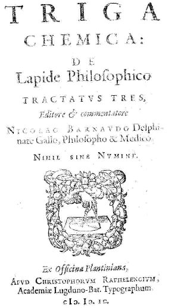
frontispice du Triga Chemica, Paris, 1599
[de
lapide philosophico tractatus tres, editore et commentatore
Nicolao
Barnaudo,... Ejusdem Barnaudi brevis elucidatio arcani
philosophorum [Contient : Lambspringk, nobilis
Germani
philosophi antiqui, libellus de lapide
philosophico,
e germanico versu latine redditus per Nicolaum Barnaudum. -
Antiqui
philosophi galli delphinatis anonymi liber secreti maximi
totius
mundanae gloriae. - Extractum ex Cimbalo aureo, antiquissimo
libro
manuscripto. ex Officina Plantiniana, apud Christophorum
Raphelengium
(París). - une note particulière doit être ici
faite au sujet du petit traité de Lambsprinck De Lapide
Philosophorum,
car, rappelons-le, il s'agit d'un des très rares écrits
qui fut réédité dans un ouvrage de vulgarisation,
publié par Georges Ranque - la Pierre Philosophale,
Robert Laffont, 1972 - dont nous parlons dans le
commentaire du Triomphe
Hermétique
de Limojon de saint-Didier. Malheureusement, G. Ranque
ne donne
pas les sources de l'édition originale : ce petit traité,
constitué de 15 poèmes, fut édité pour la
première fois par Nicolas Barnaud en 1599 et publié
ensuite dans le Museum
Hermeticum,
en 1677. Mais auparavant, il avait été
réédité en 1602 dans le Theatrum
Chemicum.
Ranque en donne la traduction sur l'édition du Museum
Hermeticum.
Nicolas Barnaud, de Crest dans le Dauphiné, qui vécut
à Genève et en Hollande, est un des plus
célèbres alchimistes du XVIe siècle et il passe
pour avoir fabriqué des masses énormes d'or. Nous lisons
dans le troisième volume du Théâtre Chimique deux
traités de lui sur une inscription énigmatique
trouvée à Bologne, et sur le grand oeuvre. Il a encore
publié une collection d'ouvrages alchimiques : Quadrifera
Aurifera, in 4°. Lugd. Bat. , 1599, cité in Histoire de
la
Médecine, Kurt Sprengel, T. III, p. 270, Deterville,
Desoer, Paris, 1815.]
80.
Nicolaus
Barnaud. Quadriga Aurifera,
p.
790. [The
volume
contains a dedication to Count Heinrich-Friedrich of
Nassau, and a
preface referring to the Triga.] The four
Tracts, called
Rotae, or Wheels, are :
81.
Tractatus
de
philosophia
Metallorum, p. 791.
82.
Ripleus.
Liber
Duodecim Portarum, p. 797.
83.
Ripleus.
Liber
de Mercurio et lapide Philosophorum, p. 821.
84.
Scriptum
[anonymi]è
Elixir
Solis Theophrasti Paracelsi tractans,
p.
828.
85. Coelum
Philosophicum.
p 832.
86. Auriga
Chemicus
sive Theosophiæ Palmarium, p. 834.
87. De Oculta
Philosophia
Epistola, p. 852.
88. Dicta
Sapientum, p. 857.
Volume
IV.
89. Raymundus
Lullius.
Theoria & Practica, pp. 1 and 135. Plates, pp. 150 and
156.
90. Raymundus
Lullius.
Compendium animæ transmutationis artis Metallorum Ruperto
Anglorum
Regi transmissum, p. 171.
91. Artefius.
Clavis majoris sapientiæ, p. 198.
92.
Heliophilus
a Percis. Philochemicus Philochemicis, Nova Disquisitio de
Helia
Artista, p. 214.
93.
Heliophilus
a
Percis. Nova disquisitio super metallorum transformatione,
p. 220. [Compare p 300].
94.
Hieronymus de
Zanetinis. Conclusio & comprobatio Alchymiae, qua
dispositioni
&
argumentis Angeli respondetur, p. 247.
95. Thomas
Arsoncinus.
De jure Alchymiæ responsum, p. 248.
96. Latin and
German
verses, p. 252.
97. Nicolaus
Niger
Happelius. Cheiragogia Heliana de Auro philosophico, nec dum
cognito,
p. 265.
98. Wenceslaus
Lavinus Moravus. Tractatus de Coelo terrestri, p. 288.
99.
Nicolaus
Niger
Happelius. Disquisitio Heliana, p. 300. [cf. Nova
Disquisitio
p 220.]
100.
Nicolaus
Niger
Happelius. Aphorismi
Basiliani
sive Canones Hermetici de Spiritu, Anima
et Corpore medio Majoris & Minoris Mundi, p. 327.
101. Andreas
Brentzius.
Variarum Philosophorum Sententiarum perveniendi ad lapidem
benedictum
Collectanea, p. 333.
102.
Bernardus G.
Penotus. Epistola, p. 364.
103. Gaston
Dulco.
De triplici præparatione Auri et Argenti, p. 372.
104. Gaston
Dulco.
De recta et vera ratione progignendi lapidis Philosophici,
seu salis
Argentifici
& Aurifici, Tractatus duo, p. 388.
105. Gaston
Dulco.
Canones seu Regulæ decem, de Lapide Philosophico, p. 414.
106. Divi
Leschi
Genus Amo (Sendivogius). De Lapide
Philosophico Tractatus duodecim, p. 420.
107. Divi
Leschi
Genus Amo (Sendivogius). Ænigma
Philosophorum, p. 442.
108. Divi
Leschi
Genus Amo (Sendivogius). Dialogus
Mercurii, Alchymistæ et Naturæ, p. 449.
109. Ænigma
Philosophorum sive Symbolum Saturni, per Parabolas Azoth
dilucide
ostendens, p. 457.
110. Aureliæ
Occultæ Philosophorum partes duz. M. Georgio Beato
Interprete, p.
462.
[c'est
dans ce traité que se trouve l'écrit attribué
à Basile Valentin, appelé Azoth. Cf. aussi MANGET
(J. J.), Bibliotheca Chemica Curiosa, 1702, ii. p. 198
et OCCULTA
PHILOSOPHIA, 1613. p. 47 :
Ferguson
: This is ascribed by some to Basilius Valentinus (q.v.). It is a dialogue
between an old
man, called Senior,
and a
pupil or student, Adolphus. The first part is in prose, the
second is
an interpretation of some
symbolic drawings, and in the German version is in verse. Other
editions: "Azoth, sive Aureliae
Occultae Philosophorum,. . . , Francofurti, Joannes Bringer, 1613"; "Occulta Philosophia von den
verborgenen
Philosophischen Geheimnussen der
heimlichen Goldblumen, . . .
Franckfurt, Johann
Bringer,
1613" (q.v.); "Les Douze
Clefs. . . de. . . Basile
Valentin. .. Plus l'Azoth
. . . Paris, 1624,
and
Paris,

1659."
In certain editions this tract
is preceded by the Aenigma
Philosophorum, which
is also inserted sometimes among Sendivogius' writings. It does
not seem,
however, to belong
strictly
to either.] - gravures contenues
dans ce recueil : 1 - 2 - 3
- 4 - 5 - 6
- 7 - 8 - 9
- 10 - 11 - 12
- 13 - 14 -
111.
Tabula
Smaragdina, p. 497.
112. Arnoldus
de
Vina Nova. Speculum Alchymiæ, p. 515.
113. Arnoldus
de
Villa Nova. Carmen, p. 542.
114. Arnoldus
de
Villa Nova. Quæstiones tam essentiales quam accidentales ad
Bonifacium
Octavum, p. 544.
115.
Tractatus de
secretissimo antiquorum philosophorum arcano, p. 554.
Ferguson
: Under this title
are included three tracts, with a Praefatio.
Tractatus primus
consists of
excerpts from
the following writers:
1.
Rogerus
Baco.
2.
Raymundus
Lullius.
3.
Rosarius
Arnoldi.
4. Clamor
Buccinae.
5.
Rosarius
Minor.
6.
Richardus
Anglicus.
7.
Calid Rex.
8.
Avicenna.
9.
Bernhardus
Comes.
10.
Turba
Philosophorum.
XXII.
Propositiones sive Maximae in quibus veritas
totius Artis
Chemicae brevissime comprebenditur. Tractatus secundus
aureus de Lapide
Phiosophorum
Joannis de Lasnioro, with a folding table. Tractatus tertius
nobilis Joannis
Trithemii Abbatis
Spanheimensis. The collection was
published originally in Latin in 1611,
without
place or printer's name, small 8°, pp. [95, 1
blank]. Appended to it is a
tract in German: Tractatus Chemicus des alten
hocherleuchten Philosophi,
Theologi und Medici, Arnoldi de Nova Villa, s vor
vierhundert Jahren
gelebt. Vor niemals im druck gesehen, Jtzo aber durcb einen
Liebhaber
der Spagyrischen kunst den Fillis doctrinae zu gut an tag geben,
pp.
[60,4 blank].
116.
Propositiones
XXII. In quibus veritas totius artis Chemiæ brevissimè
comprehenditur, p. 577.
117. Joannes
de
Lasnioro. Tractatus aureus de Lapide Philosophorum, p. 579.
118. figure,
p.
584.
119. Joannes
Trithemius
Abbas Spanheimensis. Tractatus Chemicus nobilis, p. 585.
120. Hermes
Trismegistus. Tractatus
Aureus de
Lapidis Physici
Secreto in cap. 7 divisus; Nunc
vero
à quodam Anonymo Scholiis illustratus (cum Epistola
dedicatoria
et præfatione), p. 587. [ce traité
est
cité à de nombreuses reprises par Jung. Il s'agit des Sept Chapitres Dorés d'Hermès
avec une amplification anonyme.Voir Manget, I, p. 400]
121. David
Lagneus.
Harmonia seu Consensus Philosophorum Chemicorum, p. 718.
122. Table,
p. 748.
123.
Ænigmaticum
quoddam
Epitaphium [Ælia Lælia Crispis] Bononiæ
Studiorum
ante multa secula, marmoreo lapidi insculptum, p. 805.
124. Arcanum
Philosophorum, per virum doctissimum olim versu hexametro
conscriptum,
p. 806
125. Albertus
Magnus.
De Concordantia Philosophorum in Lapide, p. 809.
126. Albertus
Magnus. Compositum
de Compositis, p. 825.
127. Albertus
Magnus.
Liber Octo Capitulorum de lapide philosophorum, p. 841.
128.
Avicenna. Ad
Hasen Regem Epistola de re recta, p. 863.
129.
Avicenna.
Declaratio
Lapidis Physici Filio suo Aboali, p. 875.
130.
Avicenna. De
Congelatione et Conglutinatione lapidum, p. 883.
131.
Guilhelmus
Tecenensis. Lilium de Spinis evulsum, p. 887.
132.
Ortholanus.
Practica vera Alkimica Parisiis probata et experta sub Anno
Domini
1358, p. 912.
133. Lumen
Juvenis
Experti Novum, p. 934.
134.
Valentinus.
Opus Præclarum ad utrumque. Quod pro testamento dedit filio
suo
adoptivo,
qui etiam istum Cractatulum propria manu scripsit loanni
Apot., p. 941.
135.
Tractatulus
super hæc verba: Studio namque florenti, p. 955
136. Opus ad
Album, p. 957.
137. Thomas
Aquinas.
Liber lilii benedicti, p. 960.
138.
Tractatulus
super verba Mer fugi dum bibit, p. 974.
139. Opus
breve
ad Rubeum cum sole per aquas fortes, p. 984.
140. Petrus
de
Silento.
Opus, p. 985.
141. Joachim
Tanckius.
Epistola, p. 998.
142.
Tractatus
Philosophicus
ad Rubrum et Album, p. 1001.
143. Paulus
Eck
de Sultzbach. Clavis Philosophorum, p. 1007.
Volume V.
1. Turba
Philosophorum. p. 1.
2. In turbam
Philosophorum
Sermo unus anonymi. p. 52.
3. Allegoria
Sapientum,
& Distinctiones XXIX. supra librum Turbæ. p. 57.
4. Tractatus
Micreris
suo discipulo Mirnefindo. p. 90.
5. Platonis
libri
Quartorum, seu Stellici, cum commento Hebuhabes Harned,
explicati ab
Hestole.
p. 101.
7. Regis
Calid,
Liber trium verborum. p. 186.
8. Senioris
Zadith,
filii Hamuelis tabula chimica, marginalibus adaucta. p. 191.

[cette
figure est littéralement emblématique : en effet, on la
retrouve sous une forme absolument transfigurée dans le MS.
Rhenoviensis 172 de Zurich où figure le texte de l'Aurora
consurgens
- pseudo aquinate - avec de superbes aquarelles. La figure V qui forme l'une des plus
belles de
la série, est appendue au texte : elle reproduit notamment
pour
ainsi dire trait
pour trait
(voyez les aigles sagittaire) notre gravure, cf. Aurora
consurgens I et II
- Cette image de Senior - Hermès se trouve encore reproduite
sur
un MS. de Nuremberg, rédigé entre 1577 et 1583, cf. Van
Lennep, Alchimie,
p. 109, ill. 152 et on trouve
une
autre image qui reproduit le f. 73 du Codex
Vossianus F. 29 que
nous avons examiné dans l'Aurora consurgens, II -]
9. Guilielmi
Menens
Antuerpiani Aurei velleris libri tres. p. 240.
10. Consilium
conjugii,
seu de massa Solis & Lunæ libri tres, p. 429.
11. M. Petrus
Bonus.
Margarita Novella correctissima, p. 507.
12. Michael
Scotus.
Quæstio curiosa de Natura Solis et Lunae, p. 713.
13. Lucas
Rodargirus.
Pisces Zodiaci inferioris vel de Solutione Philosophica. Cum
ænigmatica
totius Lapidis Epitome. p. 723.
14. Alphonsi
Regis Castellæ, liber Philosophiae occultioris,
præcipue
metallorum, profundissimus, p. 766.
Ce
traité attribué à Alphonse X a été
pour Chevreul l'occasion ou l'amorce d'une série d'articles
traitant de l'attribution dudit traité à Artephius. Cf. Chevreul, critique d'Artephius.
Chevreul, et c'est là le point le plus intéresant, a
été amené à montrer l'identité
remarquable entre la Clavis Majoris Sapientiae et les écrits
des
trois alchimistes de Flers : Nicolas Valois, Nicolas
Grosparmy et
Vicot, cf. Cinq Traités de
Valois;
le Trésor
des Trésors de Grosparmy; Introïtus,
VI où on
lira d'autres notes sur les Adeptes de Caen. Voici les notes
de
Ferguson sur Alphonse X -
Ferguson
: Alphonso or Alfonso X., El Sabio, King of Castile and Leon
(1221 -
1284) "caused this book to be translated from the Arabic
into his own
Castilian tongue." It would appear therefore that Alfonso
was not
himself the author. The Arabic book is supposed to be the
Clavis
majoris Sapientiae ascribed to Artephius (q.v.), of which
there were
numerous edition. Comparison of the two tracts shows that
they are
identical (though not verbally so), however the Identity is
to be
explained. This tract tracts 1°; of the Aristotelian
elements or
qualities; 2°, of the generation of minerals, and 3°, of the
generation of plants from minerals, and of animals from
plants. It is a
short treatise on cosmogony, and not on transmutation. It is
not the
same as that attributed to'' Alphonso. King of Portugall,"
included in
Five Treatises of the Philosopher's Stone, London, 1652. Sources
: Hendreich, Pandecta Brandeniburgicae, 1699, p. 123. -
Nicolas
Antonio, Bibliotheca Hispana Vetus, 1788, ii. p. 78. -
Gmelin,
Geschichte der Chemie, 1797, i. 64. - Schmieder, Geschichte
der
Alchemiet, 1832, p. 141. - Hoefer, Histoire de la Chimie.
1842, i. 383;
1866, i. p. 407. - Fabricius, Bibliotheca Latina media et
infimae
Aetatis, 1858, i. p. 68. - Lucien Leclerc, Histoire de la
Médecine Arabe. 1876, ii. p. 441. - Kopp, Die Alchemie,
1886, i.
p. 101.
Cf.
Bibliothèque des Philosophes Chimiques, II, p. 112 -
Bibliotheca
Chemica Curiosa, I, p.
503 - Theatrum
Chemicum, IV, p.
198 - Museum d'Histoire
Naturelle : MS. 2026
extrait du
Theatrum Chemicum, vol. IV, p. 198 - MS. 2027
(?) - MS. 2028, ex-libris
d'Étienne
Clavier - MS. 2029, de
Claude Alexandre
Séguier - MS. 2030 de J.B.
Léonard Dion de Saint-Jory. Dans l'étude de Chevreul sur
la Clavis Majoris
Sapientiae,
on se reportera aux correspondances que nous avons
dressées
entre
les MS. du Museum et les manuscrits ou traductions A, B, C
et D.
15.
Aristoteles.
Tractatus ad Alexandrum Magnum, De lapide Philosophico, p.
787.
Epistola
Monachi
cujusdam
Benedictini ordinis, de Lapide Philosophico, opuscula
Platonis
& Arnoldi Villauovani recensens, p. 799.
16.
Thomas
Aquinas.
Tractatus sextus de esse et essentia mineralium tractans, p.
806.
17. Cornelius
Alvetanus
Arnsrodius, de conficiendo divino Elixire, sive lapide
philosophico, p.
815.
18.
Animadversiones
Chimicæ quatuor quibus ars universa, tam practice quam
theorice
enudatur, p. 821.
19. Epistola
Fr.
Rogerii Baconis, de secretis operibus artis & naturæ,
&
nullitate
magiæ, cum notis, p. 834.
20. De auro
medico
philosophorum Dialogus Scholasticus Christophori Hornii, p.
869.
Volume VI.
1. Blasii
Vigenerii
Tractatus de Igne et Sale. p. 1.
2. Johannes
Collesson.
Idea Perfecta Philosophiæ Hermeticae, seu Abbreviatio
Theoriae
&
Praxeos Lapidis Philosophici observationibus aucta, p. 143.
3. Anonymi
Philosophi
Galli, Instructio Patris ad filium de Arbore Solari. p. 163.
4.
Christophori
Parisiensis Elucidarius seu Artis transmutatoriæ summa major
cum
appendice. p.195.
5.
Johannis
Grassei
Chortalassei dicti Arca
arcani
artificiosissimi de Summis naturæ
mysteriis, ex Rustico majore et minore ejus constructa. p.
294.
6. Lilium inter
Spinas. p. 323.
7. Cabala
Chemica.
p. 344.
8. Admonitio.
De
Via ad Aurum Potabile. p. 382.
9.
Responsiones
duæ F. R. C. ad quosdam suos Clientes, p. 393.
10. Orthelius
Commentarius
in novum Lumen Chymicum Michaelis Sendivogii Poloni, XII.
figuris in
Germania
repertis illustratum. p. 397. [cf.
Orthelius in Bibliotheca
Chemica
Curiosa, t. II, p. 516]
- gravures du recueil : 1 - 2 - 3 - 4 - 5 - 6 - 7 - 8 - 9 - 10 - 11 - 12 - 13 -
11. Orthelius
Epilogus
et Recapitulatio in Novum Lumen Chymicum Sendivogii. p. 430.
12. Epistola
Andreæ
de Blavven scripta ad Petrum Andream Matthiolum in qua
agitur de
multiplici
auri potabilis parandi ratione. p. 458.
13. Discursus
Orthelii
de præcedente Epistola Andrez de Blawen, p. 470.
14. Epistola
Anonymi
de principiis artis Hermeticæ. p. 474.
15. Expositio
&
Practica Lapidis Adrop, Collecta ex Plinii Philosophi Libro
qui
intitulatur;
Aromaticum Philosophorum Thesaurus & Secretum
Secretorum. p. 477.
16. Excerpta
ex
interlocutione
Mariæ Prophetissæ, è habita cum aliquo Philosopho
dicto
Aros de excellentissimo opere trium horarum. p. 479.
17. Orthelii
Explicatio
Verborum Mariæ Prophetiæ. p. 480.
18. Epistola
Joannis Pontani in qua de Lapide quem Philosophorum vocant
agitur. p.
487.
19. Orthelii
Commentatio
in Epistolam Pontani. p. 489.
20. Epistola
Haimonis
de quatuor Lapidibus Philosophicis materiam suam ex minori
mundo
desumentibus.
p. 497.
21. Epistola
Cornelii
Alvetani de conficiendo Divino Elixire sive Lapide
Philosophico. p. 501.
22.
Astronomia
inferior
seu Planetarum terrestrium motus & variatio. p. 507.
23. Summa
rhytmorum
Germanicorum de Opere Universali ex coelo soloque prodeunte.
p. 511.
24. Summa
Libri
qui vocatur Gloria mundi, seu tabula Paradisi. p. 513.
25. Opus
singulare
procedens ex Sale quodam Centrali aethereo, resoluto in igne
minerali
terreno,
seu oleo vitrioli, quod cum Tinctura Solis extracta
fermentatur, &
externo igne Solympico aut igne radiorum Solis invisibili
coquitur
&
maturatur. Ex Theophrasto redivivo Michaelis Pezelii circa
finem. p.
518.
26. Sententia
aut
Compositio Litis Spiritus et Judicis Mercurii. Ex vetusto
scripto
Bellum
seu Duellum equestre vocato, ad accusationem &
responsionem Solis
&
Martis, per picturas repræsenta. p. 519. [traduction du Urtheil oder
Vergleichung dans Sendivogius, Lumen Chymicum Novum;
Epilogus Orthelii,
1624, p. 227.]
27. Summa
rhytmorum
parvorum Germanicorum, qui sunt ejusdem tenoris & sensus
cum
præcedentibus
picturis, ad verbum expressa. p. 521.
28. Mysterium
occultæ
naturæ Anonymi Discipuli Johannis Grassei Chortalassei
dicti. p.
523.
29. Guidonis
Magni
de Monte Philosophi Græci Discipuli Anonymi tractatulus, seu
descriptio
Philosophici Adrop, ejusque præparatio. p. 543.
30. De Ovo
Philosophorum, p. 565.
31. Johannes
Isaac
Hollandus. Tractatus de Urina quomodo per spiritum ejus
omnes
Tincturæ
sint extrahendæ. p. 566.
32. Johannis
Chartier
Scientia Plumbi sacri Sapientum seu cognitio, rararum
potestatum &
virtutum Antimonii. p. 569
33. Joachimi
Polemanni
Novum Lumen Medicum de Mysterio Sulphuris Philosophorum. p.
600.
34. Solini
Saltzthal
Regiemontani, de potentissima Philosophorum medicina
Universali
Discursus.
p. 675.
35. Solini
Saltzthal
Brevis descriptio admirandæ Virtutis et Operationis summæ
Medicinæ
Lapis Philosophorum dictæ. p. 694.
36. Solini
Saltzthal
Discursus de philosophico fonte salino. p. 704.
37. Tabula
Smaragdina seu verba Secretorum Hermetis. p. 705.
38. Henrici
de
Rochas
tractatus de observationibus novis et vera cognitione
aquarum
mineralium
et de illarum qualitatibus & virtutibus antehac
incognitis. Et de
Spiritu
Universali. p. 716.
4)-Musaeum Hermeticum 1625 edition Musæum Hermeticum, omnes sopho-spagyricæ artis discipulos fidelissime erudiens, quo pacto summa illa veraque Medicina, qua res omne, qualemcumque defectum patientes, instaurari possunt (quæ alias Benedictus Lapis Sapientum appellatur) inveniri ac haberi queat inveniri ac haberi queat. Continens tractatus chymicos novem præatantissimos, quorum nomina et seriem versa pagella indicabit. In gratiam filiorum doctrinæ, quibus Germanicum Idioma ignotum, in Latinum conversum ac juris publici factum. Jennis, Frankfurt. 1625.
1. Tractatus
aureus
de Lapide Philosophico.
2. Henricus
Madathanus, Aureum
Seculum
Redivivum.
3.
Hydrolithus
Sophicus,
seu Aquarium sapientum.
4. Joannes de
Mehung,
Demonstratio Naturae.
5. Nicolas
Flamel,
Summarium Philosophicum.
6. Via
Veritatis
Unicæ.
7. Gloria
Mundi,
seu Tabula Paradisi.
8. Tractatus
de
Generatione Metallorum.
9. Liber, cuius
nomen Alze.
10.
Lambspring, de
lapide
Philosophorum
Figuræ et Emblemata.
5)-Musaeum
Hermeticum 1678
edition Musæum Hermeticum reformatum et
amplificatum,
omnes sopho-spagyricæ artis discipulos fidelissimè
erudiens,
quo pacto summa illa veraque lapidis philosophici
medicina, qua res
omnes
qualemcunque defectum patientes, instaurantur, inventiri
et haberi
queat.
Continens tractatus chimicos XXI. Præstantissimos,
quorum Nomina
& Seriem versa pagella indicabit. In gratiam
filiorum
doctrinæ,
quibus Germanicum idioma ignotum est, Latina lingua
ornatum. Sand,
Frankfurt.
1678, 1749.
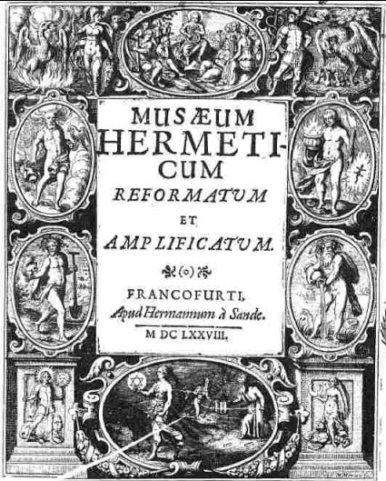
frontispice du Musaeum Reformatum et Amplificatum, 1678 - cliquez pour l'Incipit
1. Tractatus
aureus
de
Lapide Philosophico. p. 1
2. Henricus
Madathanus, Aureum
Seculum
Redivivum. p. 53
3. Hydrolithus
Sophicus,
seu Aquarium sapientum. p. 73
4. Joannes de
Mehung,
Demonstratio Naturae. p. 145
5. Nicolas Flamel,
Summarium Philosophicum. p. 172
6. Via Veritatis
Unicæ. p. 181
7. Gloria Mundi,
seu Tabula Paradisi. p. 203
8. Tractatus de
Generatione Metallorum. p. 305
9. Author Liber, cuius
nomen Alze. p. 323
10.
Lambspring, de lapide Philosophorum
Figuræ et Emblemata. p. 337
11. Michael Maier,
Tripus Aureus, hoc
est tres tractatus
chimici selectissimi: nempe,
Basilii Valentini...
Practica una cum XII Clavibus et Appendice. p. 373
12. Thomae
Nortoni
Crede
mihi seu Ordinale ex anglicano manuscripto in latinum
translatum. p. 433
[According
to the author's concluding lines, this poem was begun in 1477.
The
first publication of it was in the Latin translation by
Michael Maier
in 1618, above mentioned. For in his book Symbols Auras
Mensae,
printed the previous year, he speaks of it as being still '
uneditus,'
but ' to be published shortly by us,' and it appeared of
course in the
subsequent reprints of the Tripus aureus.
The English poem was first printed In Ashmole's Theatrum
from a fine manuscript. He says (p. 455): ' In the search I
have made
after Authentique Manuscripts to compleate this worke, a
private
Gentleman lent me a very faire one of Norton's Ordinall,
which I chiefly followed; yet not omitting to compare it with
fourteen
other copies. It was written in Velame and in an auntient sett
hand,
very exact and exceeding neate.' This, Ashmole thinks from
various
circumstances, may have been the dedication copy to George
Novell,
Archbishop of York, whose magnificent entertainment of Edward
IV. with
lavish display of plate and other treasure was so thoroughly
appreciated by the king that he took possession of the whole '
and made
of the Arch-Bishop's Mitre (get with precious stones) a Crowne
for
himself. ' The poem appears to be anonymous, but as Ashmole
has pointed
out in language, worthy almost of Sir Thomas Urquhart, the
author's
name is contained in the poem itself. He says (p. 437) :
' From the first word of
this
Proeme, and the Initiall letters of the
six following Chapters (discovered by Acromonosyllabiques
and Sillabic
Acrostiques) we may collect the authors Name and place of
Residence:
For those letters (together with the first line of the
seventh chapter)
speaks thus, Tomas Norton of Briseto, A parfet Master ye
maie him
trowe. Such like Fancies were the results of the wisdome and
humility
of the Auncient Philosophers, (who when they intended not an
absolute
concealement of Persons, Names, Misteries, &c.) were
wont to hide
them by Transpositions, Acrostiques. Isogrammatiques,
Symphoniaques,
and the lyke. (which the searching Sons of Art might
possibly unriddle,
but) with designs to continue them to others, as concealed
things; And
that upon the Question no other Answer should be returned,
then the
like of the Angell's to Manoah. [His name was Peli, to wit,
admirable
and secret]. '
The author of the Ordinall
was the son of Thomas Norton, and was born at Bristol towards
the end
of the fourteenth century. He was member of Parliament for the
borough
of Bristol in 1436, member of privy chamber of Edward IV.,
acted on
embassies and accompanied the king when he fled to Burgundy.
At the age
of 28 he is said to have visited George
Ripley
and to have asked to be instructed in the preparation of the
red stone.
His master, whether Ripley or another,
seeing him to be a suitable person, ultimately put him on the
right
road and at the end of forty days (the appropriate period of a
'
philosophic
month') the pupil bad acquired the secret. In the Ordinall,
chap. ii.,
he refers to his master in terms of the greatest admiration
and
affection. He describes (chap. vi.) a furnace of his invention
by which
he could get ' threescore degrees,' and carry on as many
operations
simultaneously, each with its own heat. He complains of the
troubles
which beset the adept; his perfected work was stolen by
servants, and
he says:
' I made also the Elixer of
life
Which me bereft a
Merchaunt's wife:
The Quintessens I made also,
With other secrets many moe,
Which sinfull people took me
fro,
To my great paine and much
more woe.'
The
lady here referred to is said to have been Mrs. Canynges, the
wife of
William Canynges, who rebuilt the church of St. Mary Redcliffe
at
Bristol. His master mason was called Norton, and it has been
sought to
Identify him with the alchemist. The poem contains a number of
interesting details and throws light on the beliefs of the
period.
Manuscripts of the work exist in the British Museum, the
Bodleian, in
Trinity College, Dublin, and in the library of the Marquis of
Bath.
Other works are ascribed to him, or bear his name: De
transmutatione
Metallorum; and De Lapide Philosophorum.
They have not been printed. Cf. Theatrum Britannicum, p.1 et Bibliotheca Chemica Curiosa,
vol.
2, p.
285]
13. Cremeri Testamentum...
figuris cupro affabre incisis ornati. p. 533
14. Michael
Sendivogius, Novum
Lumen Chemicum e Naturæ Fonte & manuali Experientia
depromptum. p. 545
Ænigma
Philosophicum.
Dialogus
Mercurii, Alchymistæ et Naturæ.
15. Michael
Sendivogius,
Novi Luminis Tractatus alter de Sulphure. p. 601
16. Philaletha,
Introitus Apertus ad occlusum Regis Palatium. p. 647
17. Michael Maier, Subtilis
Allegoria
super Secreta
Chymiæ. p. 701
18. Philaletha,
Metallorum Metamorphosis. p. 741
Brevis
Manuductio ad Rubinum Coelestem. p. 775
19. Philaletha,
Fons Chymicæ Veritatis. p. 799
20. Joannes
Fridericus
Helvetius, Vitulus Aureus quem Mundus adorat et orat. p. 815 [cf. Bibliotheca
Curiosa Chemica,
Manget, vol I., 9,
p. 200
pour l'image d'une médaille
alchimique p. 828]
21. Janitor
Pansophus,
seu Figura Ænea quadripartita cunctis Museum hoc introeuntibus,
superiorum
ac inferiorum scientiam Mosaico-Hermeticam, analytice exhibens.
p. 864
6)-Bibliotheca
chemica
curiosa, Jean-Jacques
Manget. Bibliotheca chemica curiosa, seu
rerum
ad alchemiam
pertinentium thesaurus instructissimus: quo non tantum
Artis
Auriferæ,
ac scriptorum in ea nobiliorum historia traditur;
lapidis veritas
argumentis
& experimentis innumeris, immo & juris
consultorum judiciis
evincitur;
termini obscuriores explicantur; cautiones contra
impostores, &
difficultates
in tinctura universali conficienda occurrentes,
declarantur: Verum
etiam
tractatus omnes virorum celebriorum, qui in magno
sudarunt elixyre,
quique
ab ipso Hermete, ut dicitur, Trismegisto, ad nostra
usque tempora de
Chrysopoæ
scripserunt, cum præcipuis suis commentariis, concinno
ordine
dispositi
exhibentur. Ad quorum omnium illustrationem additæ sunt
quamplurimæ
figuræ æneæ. Chouet, Geneva, 1702. 2 volumes.
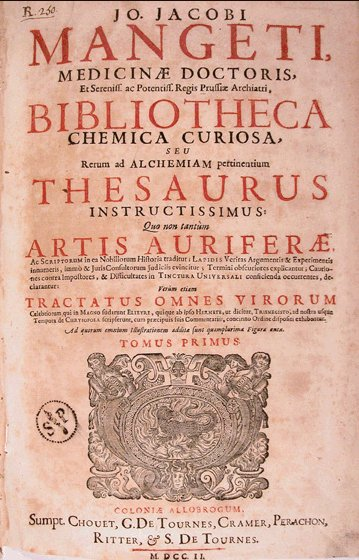
frontispice du tome I de la Bibliotheca Chemica Curiosa de Mangetus
Messis Medico-spagyrica, Colon. (? Genevae). 1683. fol. - Bibliotheca anatomica, Genevae, 1685, 2 vols., fol.; 1699. 2 vols., fol. ; London, 1711, 3 vols., 4°. - Bibliotheca pharmaceutlco - medica, Genev., 1704, 2 vols., fol. - Bibliotheca chirurgica, Genev., 1721, 4 vols., fol. - Bibliotheca scriptorum medicorum, 1731, 4- vols., fol. (This contains the whole of Mercklin's Lindenius renovatus, with reprints of biographical notices and renews from a variety of sources, and additional authors subsequent to Mercklin's time. This last section, however, to not so full as it might have been.) - Bibliotheca medlco-practica, Genev., 1695 - 98, 4 vols., fol. ; Ib. 1739, 4 vols., fol. - Theatrum anatomicum, Genev., 1716-1717, 2 vols., fol.
He edited the works of some other writers on medical subjects. The present work is the largest of the collections of chemial authors, and though it contains a number of works which had already been printed in Zetzner's Theatrum chemicum, It contains a great number of others which Zetzner did not reprint. The originals of many of the treatises are now extremely scarce, so that for historical reference Manget's collection is indispensable. The only drawback under which it labours is that the text as printed differs sometimes from that of other editions. Manget died at Geneva, 15 (25) Augt., 1743, in his 91st year, without having had a day's illness during his lifetime.
sources : Journal des Savans, 1703, pp. 499-504. - Stolle, Anleintung zur Historie der Medicinischeit Gelahrheit, 1731, pp. 343, 465, 494. 497,540. - Manget, Bibliotheca Scriptorum Medicorum. 1731, II. i. pp. 217 - 257 (biography, and contents of Jacob Leupolds Prodromus Bibliothecae metallicae, 1732, P. 97. (' Bibliotheca chemica curiosa,' iv. vols. fol., Gen(e)uae-, 1695, 1702. It is in two volumes, and I have seen no other mention of a 1695 edition.) - Lenglet Dufresnoy, Histoire de la Philosophie Hermétique, 1742, iii. pp. 2 (Bibl. Scriptorum Medicorum), 60 ('Bibl. Chemica Curiosa,' with a reprint of the contents). - Mémoires pour l'Histoire des Sciences & des beaux Arts (Memoires de Trévoux), 1743, Mars 1743, pp. 549 - 551. - Jöcher, Allgemeines Gelehrlen-Lexicon, 1751, iii. col. 110; Rotermund's Fortsetzung und Ergänzungen, 1813, iv. col. 570. - Fictuld, Probier-Stein, 1753, Th. ii. p. 93. (Horlacher's abstract; Fictuld condemns both, and laments the loss of time in compiling them.) - Moréri, Le Grand Dictionnaire historique, 1759, vii. p. 159. - Osmont, Dictionnaire typographique, 1768, i. - Haller, Bibbliotheca Botanica, 1772, ii. p. 72. - Haller, BibIiotheca Anatomica, 1774, i. p. 803. - Haller, Bibliotheca Chirurgica, 1774,1. p. 520. - Eloy, Dictionnaire historique de la Médecine, - Haller, Bibliotheca Medicinae practicae, 1779. iii.p. 603 ('aliqua mecum adfinitate conjunctus, magnus collector'). - Baumer, Bibliotheca Chemica, 1782, p. 2 - Jean Senebier, Histoire littéraire de Genève, Genève, 1786. ii. pp. 316-18. - Gmelin, Geschichte der Chemie 1798, ii. pp. 255, 300, 371, 480 - Hutchinson, Biographia Medica, 1799, ii. p. 122. - Chalmers, The General Biographical Dictionary, 1815, xxi. p. 236. - Biographie Médicale, Paris, Panckoucke (1820-25), vi. p. 173. - Biographie Universelle, 1820, xxvi. p. 486; n.d. xxvii p. 340 (article by Weiss). - Schmieder, Geschichte der Alchemie, 1832, p. 513. - Querard. La France littéraire, 1833, v. p. 488. - Dezeimeris, Dictionnaire historique de la Médecine, 1837, III. ii. p. 509. - Bayle & Thillaye, Biographie Médicale. 1855, ii. p. 51, Phillippe & Ludwig, Geschichte der Apotheker, 1855, p. 588 - Nouvelle Biographie Générale, 1863, xxxiii. col. 301. - Ladrague, Bibliothèque Ouvaroff, Sciences Secrètes, 1870, No. 538. (Horlacher's abstract; there is no copy of the original work.) - Dictionnaire Encyclopédique des Sciences Médicales, 2ème Série, 1871, iv. p. 505. - Hirsch, Biographisches Lexicon der hervorragen den Aerzte aller Zeiten und Völker. 1886, iv. p. 115 (article by Pagel). - Kopp. Die Alchemie. 1886. i. p. 88; ii. p. 326, 340. - Billings, Index-Catalogue, 1887, viii. P. 578.
illustrations tirées de l'ouvrage (p. xx) : t. I : 1 (p. 87 : Arcanum II. Chymicum) - 2 (p. 200 : cf. ref. 9, Helvetius) - 3 (p. 540 : divers appareils qui paraissent dans des traités, tirés sans doute de Summa Perfectionis Magisterii) - t. II : 4 - 5 (p. 521 et 525 : 14 figures d'Orthelius tirées du Commentaire de la Nouvelle Lumière Chymique ; nous noterons que ces gravures sont différentes de celles publiées dans le Theatrum Chemicum, cf. vol. VI, p. 397. Elles ont été publiées par Van Lennep dans son Alchimie, chap. I, pp. 37-39 et pour les gravures de l'édition du Theatrum, complément, p. 436) - 6 (p. 565) - 7 - 8 (p. 416 et 421 : Douze Clefs de Philosophie, dans une version beaucoup moins soignée que celles présentées dans le Tripus Aureus - cf. Musaeum Hermeticum, p. 373 ou que la version, fort rare, des Chymische Schrifften, cf. gravures) - 9 (p. 87, Liber Lucis avec une image de fourneau, moins complète que celle donnée dans le vol. III, p. 292 du Theatrum Chemicum) - 10 (p. 218 - il s'agit de l'Azoth attribué au pseudo Basile Valentin : selon E. Canseliet, Fulcanelli tient Senior Zadith pour l'auteur du traité. Il y a là matière à recherche, cf. Bibliothèque des Philosophes chymiques de Richebourg, vol. III, n° 16. Notez que la fig. 2 apparaît dans l'une des deux éditions françaises des Douze Clefs de Philosophie. Certaines de ces gravures sont moins connues, telles les n° 8 - 12. ) - 11 - 12 - 13 - 14 - 15 - 16 - 17 (série de 160 médaillons du Jardinet Hermético-spagyrique de Soltzenberg, cf. infra vol. II, p. 895) - 18 (p. 275 : Douze Portes de Ripley, cf. vol. II, p. 275) - 19 (p. 287 : reproduction d'une gravure célèbre du Crede Mihi de Thomas Norton, cf. Tripus Aureus in Musaeum Hermeticum, 1678, p. 373 ) -
Volume I.
1. Olaus
Borrichius.
De Ortu et Progressu Chemiæ Dissertatio (contient
Aelia Lelia
Crispis, p. 26),
p. 1.
2. Olaus
Borrichius.
Conspectus Scriptorum Chemicorum Celebriorum, p. 38.
3. Athanasius
Kircher.
De Lapide Philosophorum Dissertatio p 54.
4. Athanasius
Kircher.
De Alchymia Sophistica, p. 82.
5. Salomon de
Blauvenstein.
Interpellatio brevis ad Philosophos pro Lapide Philosophorum
contra
Antichimisticum Mundum
Subterraneum
Athanasii Kircheri Jesuitæ, p. 113.
6. Gabriel
Clauder.
Tractatus de Tinctura Vniversali, ubi in specie contra R. P.
Athanasium
Kircherum pro existentia Lapidis Philosophici disputatur, p.
119.
7. Daniel
Georg,
Morhof. De Metallorum Transmutatione ad . . . Joelem
Langelottum
Epistola,
p. 168.
8. Philippus
Jacobus
Sachs a Levvenheimb. Aurum Chymicum, p. 192.
9. Joh. Fridericus
Helvetius. Vitulus aureus quem mundus adorat et orat, in quo
tractatur
de rarissimô Naturæ Miraculô Transmutandi Metalla,
nempe
quomodo tota Plumbi Substantia, vel intra momentum, ex
quavis minima
Lapidis
veri Philosophici particula in Aurum obryzum commutata
fuerit
Hagæ
Comitis, p. 196.
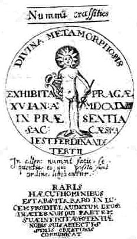
médaille
de transmutation de Ferdinand III, 1648, figurant dans le Vitulus
Aureus
de Helvetius, p. 200 de la Bibliotheca
Chemica Curiosa, tome I, de Manget - [cliquez
sur l'image
pour visualiser la version du Vitulus Aureus contenue
dans le Musaeum
Hermeticum]
[Johann
Friedrich
Schweitzer, latinized Helvetius, great
grandfather of
the philosopher, was born at Köthen, in
the
Duchy of Anhalt, in 1625 (Roth-Scholtz
says 1631),
studied medicine, went to the Hague, and
became
physician to the Prince of Orange. He was
the author of one or two medical and
botanical books,
and also of some on alchemy, as: De Alchymia
opuscula
complura veterum philosophorum,
Francof 1650, which I have not seen, and which
seems to me
to be too curiously like a book with the same
title printed at Frankfurt in 1550. He is
now
remembered by the present work, in which he
gives an
account of the transmutation of which he
was
witness In 1666. The book passed through
several
editions, and the case excited a great deal
of
discussion. By some it was looked on as
conclusive
proof of the actuality of transmutation ;
by others
it was considered too puerile for
comment. [on s'en est fait
l'écho dans les sections consacrées à Alexandre
Sethon et dans chimie
et
alchimie] Kopp, however, asks if a man like Helvetius
could have
narrated such an occurrence either
erroneously or
untruthfully: and he thinks that it
would not be
reasonable to assume either. On the
strength of
this cautious view more energetic believers
in the
occult have brought it forward at the present
moment as
historically incontestable. See Dr. G.
H.
Berendt, Das Buch
der Wunder (1901, the book is
not dated, but it came out this year), ii.
p. 700. Helvetius died at the
Hague, 29 Augt., 1709. His portrait is given
in Roth-Scholtz's
Bibliotheca
Chemica, 1727,
frontispiece to Stück iv. The book was first
published in Latin at Amsterdam, in 1667;
at the Hague, 1702, 8*, pp. [1-6] 7-72,
folding
plate; and, it is said, also in 1705. The
German version was published at Nürnberg,
1668;
other editions quoted are 1675, 1727; Frankf. a- M.
1705,1726. Dutch: Gouden
Kaff, waar in aangetoond wordt hoe
door middel van den philosophischen Sleen het Lood in
Goud is veranderd,
Amsterdam, 1749. Kopp has made a curious statement which
deserves
notice, otherwise it may lead to mistakes. When describing
Helvetius' " Vitulus Aureus,"
he adds in a parenthesis that he is not to be confusfed with
a
contemporary physician in Köthen of exactly the same name,
who, in
1655, at Leyden. published iin alchemical writing " Ichts
ausnichts."
Now below Helvetius' portrait, as given by Roth. Scholtz, is
the
inscription: Johannes Fridericus Helvetius, Anhaltinus
Göthönensis, Medicinae Doctor, et Practicus ab A. 1661. Hagae comitis, denique ab A.
1676.
Amstelodamensis, verus de transmutatione Plumbi In Aurum
testis ejus
denique fabricator. Nat. A. 1631. On the
Other Band, in
the Beytrag
zur
Geschichte der höhern Chemie, 1785, p. 617,
occurs
the following: "214. lo. Frider.
Helvetii Ichts aus nichts, leiden 1655. 12, — Von einem
Manne,
der sich
getrauete, ein goldnes Kalb zu zengenkann man schon erwarten, das
er etwas aus
nichts hervorbringen konnte. (he did not,
but that does
not affect the present argument !) " There is not the
slightest doubt
in these passages as to the identity of Helvetius of Köthen
with
the author of the Golden calf, and of the identity of the
author of "
Icbts aus nichts " also with the author of the Golden Calf.
I
am not aware of any ground for the distinction Kopp draws.
He is so
very accurate that one hesitates to believe that he has here
been in
some son of misapprehension, but it seems to be the case.
Au sujet
de cette
médaille, nous avons trouvé cet extrait dans l'Alchimie de Van
Lennep - Dervy,
1985 - à propos de Ferdinand III :
«
En 1648, alors qu'il se trouvait a Vienne, Richthausen reçut
un
mot de son ami l'alchimiste Labujardière qui, à Prague se
sentait à l'article de la mort. II l'enjoignait de venir
chercher le plus rapidement possible une poudre de
projection qu'il
avait fabriquée et qu'il conservait dans un coffret.
Richthausen
arriva lorsque son ami était mort. II découvrit cependant
le coffret. Le comte Schlick, qui s'était assuré les
services de Labujardière, le réclama — mais
Richthausen
préféra lui en faire parvenir une réplique et
remettre la poudre à l'empereur Ferdinand III. Celui ci, qui
se
méfiait des subterfuges, préféra opérer
seul, se faisant assister du comte von Rutz, directeur des
mines. Avec
un grain de la poudre, l'empereur changea deux livres et
demie de
mercure en or pur, le 15 janvier 1648. La médaille
commémorant cette réussite était ornée d'un
Apollon héliocéphale avec cette inscription «
Divine
transmutation réalisée à Prague le XV janvier de
l'an 1648 en présence de sa majesté l'empereur Ferdinand
III » (Divina
metamorphosis
exhibita Pragae XV lan A° MDCXLIII in praesentia sac
maiest
Ferdinandi tertu).
Sur l'autre face, on pouvait lire « Cet art appartient
autant aux
hommes remarquables qu'il apparaît rarement au jour — Dieu
soit
loué éternellement, lui qui confère une partie de
sa puissance infime a nous ses humbles créatures » (Raris
haec hominibus est ars ita raro in lucem prodit.
Laudetur deus in
aeternum qui partem suae infinitae potentiae nobis suis
abiectissimis
creaturis communicat). »
Van
Lennep, en
notes, donne des sources où le Vitulus
Aureus de Helvetius n'est pas cité. Cette
médaille
est citée par Bernard Husson dans ses Transmutations
alchimiques (J'ai
Lu, 1974), p. 158-160. Cf. aussi Kopp, Die Alchemie, p. 89.
]
10. Joannes
Chrysippus
Fanianus. De Iure Artis Alchemiæ, hoc est variorum Autorum
&
praesertim Jurisconsultorum Judicia & Responsa ad
Quæstionem
An Alchemia sit Ars Legitima, p. 210.
11. Gulielmus
Johnsonus.
Lexicon Chymicum, p. 217.
12. Gulielmus
lohnsonus.
Lexicon Chymicum. Liber Secundus, p. 275.
13. Petrus
Joannes
Faber. Manuscriptum . . . Res Alchymicorum obscuras
extraordinaria
perspicuitate
explanans, p. 291.
14. Petrus
Joannes
Faber. Epistolæ aliquot, p. 304.
15. Joannes
Joachim
Becher. Oedipus Chymicus, obscuriorum Terminorum &
Principiorum
Chymicorum
Mysteria aperiens et resolvens, p. 306.
16. Theobaldus
de
Hoghelande. De Alchimiæ Difficultatibus Liber, in quo
docetur,
quid
scire quidque vitare debeat vere Chemiæ studiosus ad
perfectionem
aspirans, p. 336.
17. Cato
Chemicus,
Tractatus quo veræ ac genuinæ Philosophiæ
Hermeticæ
& fucatæ ac sophisticæ Pseudo-Chemiæ, &
utriusque
Magistrorum Characterismi accurate delineantur p. 368.
18. Hermes
Trismegistus. Tabula
Smaragdina. Cui titulus Verba Secretorum Hermetis
Trismegisti W.
Chr.
Kriegsmanni & Gerardi Dornei Commentariis illustrata, p.
380.
19. Arnoldus
de
Villa Nova. Testamentum, p. 389.
20. Hermes
Trismegistus,
Expositiones Dornei, p. 389.
21.
Hermes
Trismegistus.
Tractatus
Aureus de Lapidis Physici Secretô, in septem Capitula
divisus,
cum Scholiis Anonymi, p. 400.
22. Turba
Philosophorum ex antiquo Manuscripto Codice excerpta,
qualis nulla
hactenus visa fuerat editio, p. 445.
Ferguson
: It has been inferred by Schmieder that the anonymous tracts
called
'Turba Philosophorum' were written tn the twelfth century, say
about
1140, because authors before that date are definitely quoted,
while
others subsequent to it are not mentioned. Moreover, Alanus,
who lived
about that time or a little later, refers to the Turba, and it
was
commended by Albertus Magnus in the thirteenth century. There
are two
distinct collections which pass under this name. One contains
72
discourses, the other '78. Among the speakers are a few
persons of
classical antiquity whose names are familiar, such as Plato
and
Pythagoras, but the majority are quite strange, and their
names are
peculiar. So far as I am aware, they are met with nowhere
else, and
when they do occur in other writings it is because a passage
is quoted
from the 'Turba.' Borel, indeed, has transferred them to his
list as if
they were genuine alchemists, and for this he has been called
to
account by Morhof. The person to whom the work has been
ascribed is
called Arisleus, who is not to be confused with Aristaeus.
Great
importance was attached by later alchemists to the dicta
contained in
the 'Turba.' Bernhardus Trevisanus
says that
his labour was all in vain till he was put on the right track
by what
is said by Parmenides in the 'Turba.' From this Kopp has
infterred that
he used the second form of the collection, but Kopp has made a
slip
here, for Parmenides' name occurs in both versions. Kopp has
devoted a
special paragraph to the 'Turba,' and has criticised the age
assigned
to it by Schmeider, which he considers not substantiated by
his
arguments, though it is more probable than the great antiquity
with
which it has been credited. He doubts also if Arisleus is to
be
reckoned the author, a person of whom nothing exact is known.
Schmieder
translates the title 'Conflict of Philosophers,' but Kopp
prefers to
interpret the name as meaning 'Assembly' or 'Convention of
Philosophers.' Either of these translations is possible, but
anyhow,
one has to regard the tractate as the report of a meeting of a
'
Hermetic Association for the Advancement of Alchemy.' of which
a
certain Pythagoras was president, and Arisleus was the
'convener' and
'recorder.' But while agreeing with Kopp in the rendering of
the term
'Turba,' it is possible also to share Schmieder'a opinion that
the
meaning is 'Streit der Philosophen,' which, without involving
the
notion of personal—but unphilosophical — violence, may be
interpreted
as the 'Clash of Scientific Opinion,' such as may be witnessed
at more
modem congresses. It must be admitted that the woodcut which
accompanies the 'Turba' in some editions strongly rapports
Schmieder's
rather than Kopp's translation. The following index is given
by
Fabricius, the references being to the reprints in Manget's
Bibliotheca
Chemica Curiosa, T. I. In this volume the first version of tbe
Turba,
in seventy-two discourses, begins on p. 445; Allegoriae
Sapientum et Distinctiones xxix. supra librum Turbae,
p. 467;
second
version of the Turba,
in seventy-eight discourses, p. 480;
Allegoriae
super Librum
Turbae, p.
494; AEnigma
ex
visione Arislei Philosophi et allegoriis Sapientum, p. 495.
A few
inaccuracies in Fabricius' list, detected by comparing it with
Manget's
text, have been corrected.
23. In
Turbam
Philosophorum
Sermo unus Anonymi, p. 465.
24.
Allegoriæ
Sapientum supra Librum Turbæ Philosophorum XXIX
Distinctiones, p.
467.
25.
Turbæ
Philosophorum aliud exemplar, p. 480.
26.
Allegoriæ
super librum Turbæ, p. 494.
27.
Ænygma
ex visione Arislei Philosophi & Allegoriis Sapientum, p.
495.
28.
Exercitationes
in turbam Philosophorum, p. 497.
29.
Artephius.
Liber
qui Clavis majoris Sapientiæ
dicitur, p. 503.
30. Calid. Liber
de Compositione Alchemiæ quem edidit Morienus Romanus,
Calid Regi
Ægyptiorum; quem 31. Robertus Castrensis de Arabico in
Latinum
transtulit, p. 509.
32. Geber.
Summa
Perfectionis Magisterii in suâ naturâ, p. 519.
33. Geber.
Liber
Investigationis Magisterii, p. 558.
34. Geber.
Testamentum, p. 562.
35. Joannes
Braceschus,
De Alchemia Dialogus veram et genuinam librorum Gebri
sententiam
explicens, p. 565.
36. Joannes
Gerhardus,
Exercitationes perbreves in Gebri Arabis summi Philosophi
libros duos
Summæ
perfectionis, p. 598.
37. Rogerius
Baco.
De Alcymia Libellus cui titulus Speculum Alchemiae, p. 613.
38. Rogerius
Baco.
De Secretis operibus Artis & Naturæ et de Nullitate
Magiæ
Epistola (ad Guilielmum Parisiensem conscripta), p. 616.
39. Avicenna.
Tractatulus
de Alchemiâ, p. 626.
40. Avicenna,
De
Congelatione et Conglutinatione lapidum, p. 636.
41.
Aristoteles.
De perfecto Magisterio Tractatus, p. 638.
42.
Aristoteles.
Tractatulus de practica lapidis philosophici, p. 659.
43. Arnaldus
de
Villanova. Thesaurus Thesaurorum & Rosarium
Philosophorum, omnium
Secretorum
maximum secretum, de verissima compositione Naturalis
Philosophiæ
qua omne diminutum reducitur ad solificum & lunificum,
p. 662.
44. Arnaldus
de
Villanova. Novum Lumen, I. p. 676.
45. Arnaldus
de
Villanova. Perfectum Magisterium & Gaudium transmissum
ad inclytum
Regem Aragonum, quod quidem est Flos Florum, Thesaurus
omnium
incomparabilis
& Margarita, p. 679.
46. Arnaldus
de
Villanova. Epistola super Alchemia ad Regem Neapolitanum, p.
683.
47. Arnaldus
de
Villanova. Speculum Alchemiæ, p. 687.
48. Arnaldus
de
Villanova. Carmen, p. 698.
49. Arnaldus
de
Villanova. Quæstiones tam Essentiales quam accidentales ad
Bonifacium
Octavium cum suis Responsionibus, p. 698.
50. Arnaldus
de
Villanova. Semita semitæ,
p.
702.
51. Arnaldus
de
Villanova. Testamentum, p. 704.
52. Raymundus
Lullius.
Testamentum, & primum de Theorica, p. 707.
53.
Raymundus
Lullius.
Testamentum, pars Practica super Philosophico Lapide, p.
763.
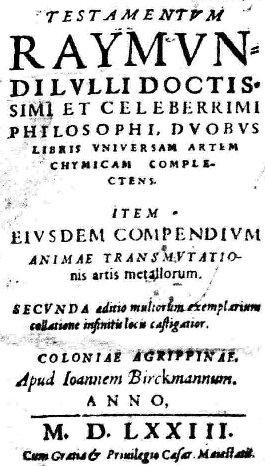
frontispice du
Testamentum
attribué au pseudo Lulle
[Testamentum
Raymundi
Lulli doctissimi et celeberrimi philosophi. Duobus
libris
universam artem chymicam complectens, antehac nunquam excusum.
Item
ejusdem Compendium animae transmutationis artis metallorum,
absolutum
jam et perfectum. (Ludolphus Verdemanus edidit) apud
Ioannem Byrckmannum (Colonia),
1573.]
54. Joannes
Gerhardus.
Analysis Partis Practica Raymundi Lullii in Testamento, p.
778.
55. Raymundus
Lullius.
Compendium Animæ Transmutationis Artis Metallorum, Ruperto
Anglorum
Regi transmissum, p. 780.
56. Raymundus
Lullius.
Testamentum novissimum, Carolo Regi dicatum, p. 790.
57. Raymundus
Lullius.
Testamenti novissimi pars altera, p. 806.
58. Raymundus
Lullius. Elucidatio
Testamenti, p. 823.
59. Raymundus
Lullius.
Liber dictus Lux Mercuriorum
in quo
explicatur quod in aliis Libris
occultatum
est, p. 824.
60. Raymundus
Lullius.
Experimenta in quibus veræ Philosophicæ Chemicæ
Operationes
clarissime traduntur, p. 826.
61. Raymundus
Lullius.
Liber Artis Compendiosæ quem Vademecum nuncupavit, p. 849.
62. Raymundus
Lullius,
Compendii Animæ Transmutationis Artis Metallorum aliud
exemplar,
p. 853.
63. Raymundus
Lullius.
Epistola de Accurtatione Lapidis Benedicti missa Anno 1412.
Roberto
Anglorum
Regi, p. 863.
64. Raymundus
Lullius.
Liber Potestas Divitiarum dictus, in quo optima expositio
Testamenti
Hermetis
continetur, p. 866.
65. Raymundus
Lullius. Clavicula
quae & Apertorium dicitur, in qua omnia quæ in opere
Alchemiæ
requiruntur, aperte declarantur, p. 872.
66. Raymundus
Lullius.
Compendium Artis Alchemiæ et Naturalis Philosophiæ, p. 875.
67. Raymundus
Lullius.
Tractatus de Lapide et Oleo Philosophorum, p. 878.
68. Raymundus
Lullius.
Codicillus, seu Vademecum & Cantilena in quo fontes
Alchemicae
Artis
ac Philosophiæ reconditioris uberrime traduntur, p. 880.
69. Joannes
Braceschus.
Lignum Vitæ, seu Dialoeus ex Italico in Latinum versus à
G.
Gratorolo Physicæ, quo 70. Raymundi Lulli Scripta
explicantur, p.
911.
71. Liber
Mutus Alchemiæ Mysteria filiis Artis nudis figuris,
evidentissime
aperiens (15 planches),
p. 938.
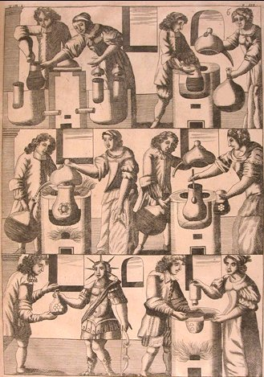
planche 8 du Mutus Liber,
édition de la Bibliotheca
Chemica
Curiosa - cf. autres planches in gravures.
Ferguson
: This is a series of fifteen engraved plates, without a
word of
explanation, portraying the preparation of the
philosopher's stone. The
plates are partly symbolical, partly pictorial,
representing an
alchemist and his wife engaged to chemical operations,
such as
sublimation, distillation, the hermetic sealing of flasks,
and the old
chemical apparatus is very well displayed. There is hardly
a clue,
however, to the substances symbolized, and none whatever
to those
obtained by the processes. The first edition of this work
appeared at
La Rochelle in 1677, in folio. [les gravures de
l'édition rochelaise sont accompagnées de commentaires
et
de l'Hypotypose
de Pierre
Dujols de Valois, dans le Mutus Liber]
Barbier (Dictionnaire des
Anonymes, 1824, iii. No. 20997) has the following
note upon it:
L'auteur anonyme, dit Arcere dans son Histoire
de la ville de
la Rochelle,
1757, in-4, t. 2, p. 384, pourrait être Jacob SAULAT,
sieur DES
MAREZ, lequel demnda un privilége pour ce manuscrit. Je
crois
que le vrai auteur est TOLLÉ médecin de la Rochelle,
grand chimiste ; le nom emprunté Altus le désigne assez.
Quérard (Les
Supercheries Littéraires Dévoilées,
1869, i. 282d) enters this book under Altus and agrees
with Barbier in
ascribing it to Tollé. Brunet (i. 203) also enters it
under
Altus, but prefers ascribing it to Saulat. May Altus not
be meant for a
kind or anagram of Saulat ? Vogt
(Calalogus.
.
. Librorum Rariorum, 1747, p. 481), says merely
that Saulat
was the editor. - Kopp (Die Alchemia,
1886, ii. 318) mentions the book, but says nothing about
the author,
and Lenglet-Dufresnoy before him is equally silent (Hist. de la
Phil.
Hermétique, 1742, iii. pp. 68, 91, 249).

Volume II.
72. Petrus
Bonus. Margarita
pretiosa novella,
p. 1.
73. Joannes
de
Rupescissa.
Liber Magisterii de confectione veri Lapidis Philosophorum,
4. 80.
74.
Joannes de
Rupescissa.
Liber Lucis, p. 84.
75. Rosarium
Philosophorum, p. 87.
76. Rosarii
Philosophorum
aliud Exemplar . . . per Toletanum Philosophum maximum, in p
119.
77. Rosarium
Abbreviatum
Ignoti, p. 133.
78. Guido de
Montanor.
Scala Philosophorum, p. 134.
Ferguson
: Guido de Montanor, or Montano, or Guido Magnus de Monte, not
Guido de
Monte, was apparently a Frenchman, who flourished in the
fourteenth or
fifteenth century, judging from the fact that while he quotes
Roger
Bacon and Richardus, he in turn is referred to by writers of
the
fifteenth century, as by Ripley, who says that his,' fame
goeth wide,'
and calls him also ' sapient Guido.' Besides the Scala
Philosophorum,
he is credited with Decreta chymica,
printed in Rhenanus' Harmoniae
imperscrutabilis, and De arte chymica libellus,
printed in Condeesyanus' Harmonia,
Francofurti, 1625, 8°. Of this
there is a German translation, Guidonis Magni de Monte Thesaurus
chymiatricus,
oder lange verborgener Schatz der Chymie,
Halle, 1623, 8°. Borel says that he is praised by Ripley, and
wrote
an Epistola chemica to a certain Greek Bishop. He also quotes
De arte
Alchemiae
libellus,
which is probably only a variation of the above title. Some of
these
tracts I have not seen, and am consequently unable to say
whether they
are different or not. Nazari includes the Scala philosophorum
in his
list, but does not allude to Guido de Montanor. Baumer
ascribes to him
not only the Scala
Philosophorum and Libellus de Arte chemica,
but also the Clangor
Buccinae, and Correctio Fatuorum.
79.
Clangor
Buccinæ,
p. 147.
80.
Correctio
Fatuorum,
p. 165.
81. Marsilius
Ficinus.
Liber de Arte Chemica, p. 172.
82. Calid
Filius
Jaici. Liber Secretorum Artis, p. 183.
83. Calid
Rex.
Liber
Trium Verborum, p. 189.
84. Merlinus.
Allegoria, p. 191.
85. Thesaurus
Philosophiæ, p. 192.
86.
Aurelia
Occulta
cum Senioris Zadith Tractatulô de Chemia, p. 198.
Ferguson
: Schmieder does
not hesitate to call this writer an Arabian,
and thinks
that Arabic MSS. of him may exist in
the
libraries of the Rhine towns. The epithet
'Senior' he
thinks denotes his antiquity, as there is no
Zadith
junior ! His full name seems to be Zadith
Ben Hamuel,
and he is placed io the thirteenth century.
Kopp does not allude to him and Hoefer, though he mentions
bis name,
has nothing to say about him. Schmieder quotes editions.
Argent., 1566,
8°; Francof., 1605,4°. The 'Tabula Chymica' was included in
the
collection entitled: Philosophiae Chymicae
quatuor vetustissima
scripta, Francof. apud Johan. Bernerum, 1605, 8°. -
Zadith
est Abû
Abdallâh Muhammad ibn Umayl al-Tamîmî. Il
vécut au dixième siècle de notre ère. Si l'on
ne connaît pas ses dates exactes et si l'on sait
effectivement
très peu de choses sur sa vie, il est toutefois possible
de bien
cerner l'époque où il vécut et les milieux
qu'il fréquenta, par une série de renseignements indirects
que l'on peut tirer notamment du Fihrist d'Ibn al-Nadîm et
qui
concernent des personnages mentionnés par ailleurs par cet
auteur dans le De Chemia. Le nom latin de Senior Zadith,
fils
d'Hamuel s'explique ainsi : Senior traduit certainement
l'arabe Cheikh;
Zadith est très probablement une corruption de al- sâdiq,
le véridique, le qâf final donnant un th, comme dans azoth
(on rencontre également azoch) qui vient de al-zâwûq
(le mercure); et filius Hamuel est la latinisation
immédiate de
Ibn Umayl. Ce dernier est l'auteur de plusieurs traités et
poèmes, dont certains ne sont connus que par leur titre.
On a pu
émettre l'hypothèse que son Kitâb
mafâtîh al-hikma al-`uzmâ était l'original de
la Clavis majoris
sapientiae attribué à Artephius. Le texte qui nous
intéresse se compose en
réalité du traité intitulé Kitâb
al-mâ' al-waraqî wa al-ardh al-najmîya (Livre de
l'eau foliée et de la terre étoilée), se
présentant lui-même comme un commentaire de la
Risâla al-shams ilâ al-hilâl (Epistola Solis ad lunam
crescentem). Ce traité est un classique et un jalon
important de
l'alchimie musulmane. Il représente une synthèse de
plusieurs enseignements antérieurs (parmi ses sources
possibles,
citons la version arabe de la Turba
philosophorum,
avec laquelle on peut relever nombre d'analogies très
précises, ainsi que le Shawâhid d'al-Râzî). Il
eut également une influence profonde et durable, puisque
trois
siècles plus tard al-`Iraqî en transcrivit un long passage
dans son Kitâb al-`ilm al-muktasab fi zirâ`a al-dhahab
(Livre de la science acquise concernant la culture de
l'or), et que
Jaldakî fit un long commentaire de la Risâla. En Occident,
mentionnons que le texte intitulé Rosinus ad Euthiciam,
qui se
trouve dans le recueil Artis
Auriferae
quam Chemiam vocant... est une traduction d'un passage du
De Chemia,
lequel présente également de nombreuses similitudes avec
les deux versions de la Turba que contient le même
recueil. [d'après
A.
Allard]
87.
Consilium
Conjugii,
seu de Massa Solis & Lunæ Libri III., p. 235.
88. Richardus
Anglicus.
Libellus utilissimus peri
CemeiaV, cui titulum fecit Correctorium, p.
266.
89. Georgius
Ripleus. Liber
Duodecim Portarum, ii, p. 275.
90.
Thomas
Northon.
Tractatus Crede Mihi, seu Ordinale dictus, p. 285.
[cf.
Theatrum Britannicum, p. 1
et Muaseum Hermeticum, p.
433]
91.
Joannes
Dausten.
Rosarium alcanum Philosophorum Secretissimum, p. 309.
92. Dialogus
inter
Naturam & filium Philosophiæ, p. 326.
93. Dionysius
Zacharias. Opusculum
Chemicum, p.
336.
94. Nicolaus
Flamellus.
Commentarius in Dionysii Zacharii Opusculum Chemicum, p.
350.
95.
Collectanea
ex Democrito, p. 361.
96. Nicolaus
Flamellus.
Tractatus brevis, seu Summarium Philosophicum, p. 368.
97. Joannes
Aurelius
Augurellus. Chrysopoeia, & Vellus Aureum, seu Chrysopüia
major
& minor, p. 371.
98. Nathan
Albineus.
Carmen Aureum, p. 387.
99. Nathan
Albineus.
Ænygma, p. 388.
100.
Bernardus
Trevisanus
Liber de Secretissimo Philosophorum opere Chemico, p. 388.
Hermes. Tabula
Smaragdina, p. 389.
101.
Bernardus
Trevisanus.
Responsio ad Thomam de Bononiæ . . . super eodem Opere, p.
399.
102. Basilius
Valentinus.
Liber de magno Lapide Antiquorum Sapientum, p. 409.
103.
Basilius
Valentinus. Liber
duodecim Clavium, p. 413.
104. Basilius
Valentinus.
De prima Materia Lapidis Philosophici, p. 421.
105. Basilius
Valentinus.
Brevis Appendix & perspicua repetitio aut iteratio in
librum suum
de
Magno lapide Antiquissimorum, p. 422.
106. Gerardus
Dorn.
Congeries Paracelsicæ Chemiæ de Transmutationibus
Metallorum, p. 423.
107. Michael
Sendivogius. Novum
Lumen Chemicum, p. 463.
108. Michael
Sendivogius.
Parabola, seu Ænigma
Philosophicum, p. 474.
109. Michael
Sendivogius. Dialogus
Mercurii, Alchemistæ et Naturæ, p. 475.
110. Michael
Sendivogius.
Tractatus de Sulphure, p. 479.
111. Michael
Sendivogius.
Apographus Epistolarum hactenus ineditarum super Chemia, p.
493.
112. Orthelius.
Commentarius in Novum Lumen Chemicum Michaelis Seudivogii
Xll. figuris
in Germania repertis illustratum, p. 516.
113.
Guilielmus
Trognianus. De lapide, p. 530.
114.
Hydrolithus
Sophicus, seu Aquarium Sapientum, p. 537.
115. Joannes
Franciscus
Picus Mirandulæ Dom. Opus Aureum de Auro tum æstimando, tum
conficiendo, tum utendo, p. 558
116. Joannes
Grasseus,
alias Cortalasseus. Arca
Arcani
artificiossimi de Summis Naturæ
Mysteriis,
constructa ex Rustico ejus majore & minore, &
Physica naturali
rotunda, per visionem Cabalisticam descripta, p. 585.
117. Anonymus
Discipulus
Joannis Grassei. Mysterium Occultæ Naturæ; De duobus
Floribus
Astralibus Agricolæ minoris in ejus Arca Arcani
Artificiosissimi
contentis, p. 619.
118.
d'Espagnet. Enchiridion
Physicæ restitutæ, p. 626.
119.
d'Espagnet. Arcanum
Hermeticæ Philosophiæ Opus in quo occulta Naturæ
& Artis circa Lapidis Philosophorum materiam &
operandi modum,
canonice & ordinate fiunt manifesta, p. 649.
[Ferguson
: Espagnet's history is nearly as great an Arcanum as that of
which be
has attempted the revelation. Though by the majority of
writers —
if
not by all -he seems to be quite well known, he is still
called
"Anonymus Gallus," and the books ascribed to him appear under
the two
phrases " Penes nos unda Tagi " and " Spes mea est in Agno,"
which pass
for anagrams of his name. It may, however, be as well to note
that the
anagrams are by no means strict, if " Joannes d'Espagnet" be
the form
of the name operated on. For the former of these contains the
letter u,
which is not in the name, and only two e's, while the name has
three.
This discrepancy is frankly acknowledged in Roth-Scholtz's
reprint,
where it is said: " Anagr. e in u mutat. - Borrichius says
that '' Don
Janus Espagnet" can be taken out of the anagram, which,
certainly, it
can be, letter for letter, but then the name never appears in
that
form. The other transposition is even farther astray, for it
wants a d
and an n, and it has an m which does not appear in the name at
all.
Apart, however, from this there is want of unanimity as to
Espagnet's
identity and as to the authorship of the tracts in question.
Borrichius
gives a very circumstantial account. He commends the Arcanum
Hermeticae
philosophiae Opus
as the wisest, most open and free from obscurities and double
meanings
of all the works he had perused. The
author was concealed in the anagram, but was believed to be
Don Janus
Espagnet, a senator of the parliament of Toulouse. In 1664,
when
Borrichius met the son, also a senator of Toulouse, who was
about sixty
years of age, a straight-forward, learned man, and a chemist
wholly
devoted to the study of Raymund Lully, he asked him if his
father had
been an adept, and had published the book. He received no
satisfaction
as to the first point, whether because the son did not know or
would
not tell Borrichius leaves doubtful, but he admitted the
second. In
this account Borrichius is followed by Fuchs. All other
writers state
that Espagnet was president of the parliament of Bordeaux;
town-president Schmieder calls him, I presume, provost, or
head of the
town council, who adds that be followed Gaston Claveus as a
defender of
alchemy. Nothing more is on record about his life. There are
various
opinions as to the authorship of the books. Borel informs us
that some
affirmed that the Enchiridion
was not by Espagnet, but by another who was called ' Eques
Imperialis,'
or ' le chevalier imperial,' which he admits he had difficulty
in
believing. Borrichius also says that it was a question
whether he was author or editor, and the doubt turns up in
Bayle,
Lenglet Dufresnoy, and others. Hoefer
holds a different opinion on the matter. After indicating the
clear views and notable anticipations which he finds ia the Enchiridion
he
refuses to believe that the Arcanum . . . opus
be by tbe same person because the ideas and we style are so
different.
There is no doubt, however, that the books announce themselves
as being
by the same author, and Schmiede r— not that he is an
authority
upon
such a point — regards the Arcanum . . . opus
as the second part of tbe Enchiridion, and
apparently it did not occur to him to entertain doubts about
the
authorship. Morhof speaks of the Arcanum . . . opus
as a work " added on to the Enchiridion of Espagnet," and
apparently
not by him. He says it is elegantly written, and shows by its
very
style mat it is genuine, which is further proved by the fact
that Philaletha,
who possessed the stone if ever any one did, mentions it and
transcribes portions from it. The elegant diction in both if
such that
they seem to be by tbe same author, who was known as Anonymus
Gallus.
Dufresnoy expresses surprise that Morhof should have ascribed
the works
to Philaletha, but it seems to me that be has misunderstood
his
meaning. Morhof meant to convey that Philaletha, who was
certainly an
adept, would never have copied passages from it unless he had
believed
in its truthfulness. But he does not affirm that he was the
author.
Without any argument or hesitation Bayle ignores the two
difficulties
which had been in existence for a couple of centuries, and at
once
states Espagnet to have been president of the parliament of
Bordeaux
and one of the learned men of the seventeenth century and
reputed
author of the Arcanum
. . .
opus. In 1623, at Paris, the Enchiridion
was printed, and this is known for his, because people who
knew him
well affirmed it to be this, and because the two anagrams are
of his
name. It was the first treatise in France which was in
opposition to
the physics of Aristotle. It was followed by the Arcanum . . .
opus
in which is described the philosopher's stone, its preparation
and
properties. He also edited an old manuscript entitled Rozier des
Guerres,
which was printed in 1616 exactly as it stood without changing
or
modernizing the spelling or language, which be followed with
the almost
exactitude. He believed that his was the first edition, but it
was
subsequently found that there had been already an edition in
1525. He
also wrote a tract on the education of a young prince. He is
reputed
editor of the work of Pierre de L'Ancre on Demons, but this I
have not
been able to confirm. Of the writings several editions are
enumerated:
in Latin, Paris, 1608, 8° (which is the first); 1633, 8°;
1647,
1650, 32°; in German: Leiprig, 1685, 8°. According to Gmelin
the Arcanum
. . .
opus
first appeared in the edition of 1638. If the dates now given
be
complete and correct, the above edition of 1638, called editio
secunda,
must be regarded merely as a reprint or reissue of that of
1623. ' -
cf. également l'article que Chevreul consacre à Isidore Geoffroy Saint
Hilaire et
où il analyse des passages de l'Enchiridion de
D'Espagnet.
]
120.
Philaletha. Introitus
apertus ad occlusum Regis Palatium, p. 661.
121.
Philaletha.
Tractatus de Metallorum Metamorphosi, p. 676.
122.
Philaletha
Brevis Manuductio ad Rubinum Celestem, p. 686.
123.
Philaletha.
Fons Chemice Philosophie, p. 693.
124. Joannes
Ferdinandus
Hertodt a Todtenfeldt. Epistola Contra Philaletham, 697.
125. Anonymi
ad
precendentenn Epistolam Responsio, p. 699.
126. Liber
Praxeos
Alchemicæ cum Additionibus Libavii, p. 700.
127.
Nicolaus
Barnaudus
a Crista Arnaudi Delphinas. In Ænygmaticum quoddam
Epitaphium
Bononiæ
ante multa sæcula marmoreo Lapidi insculptum, Commentariolus
[Aelia
Lelia Crispis], p. 713. [cf.
Theatrum Chemicum, iii,
p. 744 ]
128. Carolus
Cæsar
Malvasius. Extractum e Tractatu super eodem Epitaphio
conscripto, p.
717.
129.
Pantaleon.
Bitolium
Metallicum, seu Medicina duplex pro Metallis et Hominibus
infirmis
. . . in. venta . . ., p. 718.
130.
Pantaleon.
Tumulus Hermetis apertus p. 728.
131.
Pantaleon.
Examen Alchemisticum, p. 736.
132.
Pantaleon.
Disceptatio de Lapide Physico, in qua Tumbam Semiramidis ab
Anonymo
Phantastice
non Hermetice sigillatam; jam vero reclusam, si sapiens
inspexerit
ipsam, promissis Regum Thesauris vacuam inveniet, p.744.
133. Tumba
Semiramidis
Hermetice sigillata quam si sapiens aperuerit, non Cyrus
ambitiosus,
avarus,
Regum ille thesauros divitiarum inexhaustos, quod sufficiat
inveniat,
p. 759.
134.
Ludovicus de
Comitibus. Tractatus de Liquore Alchaest, & Lapide
Philosophorum, .
. . item de Sale volatili tartari &c., p. 764.
135.
Ludovicus de
Comitibus. Metallorum ac Metallicorum naturæ operum ex
Orthophysicis
fundamentis recens Elucidatio, p. 781.
136.
Ludovicus de
Comitibus. Appendix Symbole Crucis aliqualem explicationem
exhibens,
p. 840.
137. Claudius
Germain
Icon Philosophiæ occultæ, p. 845.
138.
Christianus
Adolphus Balduinus. Aurum superius & inferius Aure
Superioris &
Inferioris Hermeticum, p. 856.
139. Melchior
Friben.
Brevis enumeratio hactenus a se in Chemia actorum, p. 875.
140. I. B. De
Spiritu
Mundi Positiones aliquot, p. 876.
141. Andreas
Cnöffelius.
Responsum ad Positiones de Spiritu Mundi, quod in se
continet
Reserationem
Tumbæ Semiramidis, p. 880.
142. Trames
facilis
& planus ad Auream Hermetis Arcem recta perducens, p.
887.
143. Daniel
Stolcius
de Stolcenberg. Hortulus Hermeticus e Flosculis
Philosophorum cupro
incisis
conformatus, & brevissimis versiculis explicatus; quo
Chemie
studiosi
pro Philotheca uti, fessique Laboratoriorum ministri,
recreari possint,
p. 895.
Ferguson
: [à
propos de
l'édition originale, Francoforti, Impensis Lucae
Jennisii. An.
M.DC.XXVII]
8°. Pp. 165 [3 blank]. The first eight pages are printed
as usual,
then on page 9, and every fourth page thereafter, there is
a steel
engraving containing four small emblematic pictures with a
motto and an
alchemist's name. Below the engraving are printed the
mottoes. Pp.
10-11,14-15,18-19, and so on to the end, are blank. Pp. 8,
12, and
every fourth page thereafter, have two couplets on each of
the symbols
on the following page.Nothing seems to be known about this
author
except what the title-page tells us, that he was from
Bohemia, a
'candidatus medicinae' and a laureated poet. If be were
so, his poems
must have bad some merit, but his existence nevertheless
has been
overlooked by such literary historians as Jördens, Grässe,
and Goedeke. The present work in German was appended to
the 'Dyas
Chymica Tripartita,' printed by Lucas Jennis in 1625, 4°.
It has a
distinct title-page and pagination: Hermetico-Spagyrisches
Lustgärtlein:
Darinnen Hundert und Sechtzig unterschiedliche,
schöne, Kunstreiche, Chymico-Sophische Emblemata, oder
Geheymnufs-reiche Sprüche der wahren Hermetischen
Philosophen.
Sampt beygefügten, noch vier grossen, schönen vnnd
tieffsinnigen Theosophischen Figuren. Nicht allein sehr
dienstlich,
Augen vnnd Gemüt dardurch zu erlüstigen, sondern
zugleich ein
scharffes nachdencken der Natur, bey allen Filijs
Doctrinae, zuerwecken.
Franckfurt am Mayn bey Luca Jennis zu finden. Anno
M.DC.XXV, 4°,
pp. 24 [2], 4 large folding plates. The ten plates, each
containing
sixteen emblems belonging to the most famous chemists from
Hermes to
Mylius, begin on p. 7 and fall on every odd page
following. In his
preface Jennis seems to claim the authorship of the
collection, and
says that it was previously used in the' Opus
Medico-Chymicum' of
Johannes Daniel Mylius (q.v.), but without mentioning in
which of the
three divisions of that work, published in 1618, it
occurs. It is in
the third: 'Tractatus III. seu Basilica Philosophica
continens lib. III.' The emblems are printed in four rows
of four
each, and occupy ten leaves. In my copy they are inserted
at the end of
the Praefatio. In the British Museum copy they are placed
at the end of
the volume, after the third book. To Stolcius also is
ascribed another
work:
Viridarium
Chymicum figuris cupro Incisis adornatum & Poeticis
Picturis
illustratum authore Daniele Stolcio,
Francofurti, Jennisius, 1624, oblong 8°. The difficulty
connected
with this ascription is that a similar book bears the name
of Michael
Maier (q.v.) : Viridarium
Chymicum, Das ist: Chymisches Lust-Gärtlein
. . ., MDCLXXXVIII. Oblong 8°, pp. 112. The illustrations
begin on
p. 9 and fall on the odd pages to the end; the
accompanying verses are
on the even pages opposite. They start with the Twelve
Keys of
Basilius Valentinus; then come the emblems from the Aurea
Mensa,
twenty-eight from the Atalanta fugiens,
and eight modified from the Rosarium.
7)- Mylius,
Johann
Daniel. Anatomia Auri, Sive
Tyrocinium medico-chymicum, Continens in se partes quinque:
Quarum
- Opus Medico-Chymicum: Continens tres Tractatus siue Basilicas; Quorum prior inscribitur Basilica Medica, Secundus Basilica. Chymica. Tertius Basilica Philosophica. Francofurti, apud Lucam lennis, 1618. 4°. Pp. [8] including the engraved title and the authors portrait. Each tract has a separate title and pagination, viz.;
. . . Tractatus Primus. Seu Basilica Medica continens Tres Libros seu Partes de salutifera. Medicina Antiqua Hippocratica: i. Physiologiam. 2. Pathologiam. 3. Therapeuticam, succincte demonstrat. Francofurti apud Lucam lennis. M.DC.XVIII. Pp. [36] 438. Vignette.
. . . Tractatus II. Seu Basilica Chymica continens Lib. VII. r. Anatomiam Auri. 2. Argenti & Mercurij. 3. lovis, Martis ac Veneris. 4. Tractat de gemmis. 5. Examinat mineralia. 6. Vegetabilia resoluit. 7. Animalia explicat. Francofurti apud Lucam lennis. M.DC.XVIII. Pp. [247, 1 blank] 184, 492, [Vignette of a Laboratory.] Three folding symbolical plates,
- [Basilica Philosophica continens Libros Tres. i, Philosophorum ac Sapientum antiquorum Consilia super Lapidem Philosophorum, seu Mediciam universalem. 2. Chymicorum Vasa et Fornaces. 3. Quaedarn Philosophorum obscura. Pp. [88] 271 [1] 44.] This copy wants the Basilica Philosophica. An index to this work was published in 1630 at Frankfurt.
- Anatomia Auri, sive Tyrocinium Medico-Chymicum, Francof., 1628, 4°,
- Pharmacopaea Spagyrico-Medica, Francof., 1628, 8°.
- Philosophia Reformata, Francof., 1622, 4°; 1638, 4°.
illustrations
tirées
de
l'ouvrage
: 1 - 2 - 3
- 4 - 5
- 6 - 7
-
I. Tradit
concordantiam
et
harmoniam Solis coelestis cum Auro terrestri: item Auri
definitionem et
confusam multorum Physicorum de Auro opinionem; p. 1
II. Agit
de Medicinis aureis et Receptis antiquorum ac recentium
Medicorum, Aurum ingredientibus, tam in simplici, quam
præparata
forma; p. 39
III.
Tractat de Auri potabilis præparatione tam vulgari,
quam Philosophica; p. 145
IV.
Exhibet usum Medicinalem Auri potabilis tam communis, quam
veri et Philosophici; p. 284
V.
Demonstrat ideam Lapidis Philosophici in duodecim figuris. [cf.
illustrations
4 à 6; elles reprennent les images du Pretiosissimum Donum Dei] p. 1 - 27
8)- Geberi,
philosophi
ac alchimistae maximi, de alchimia libri tres. Ejusdem liber
investigationis perfecti magisterii artis alchimicae. Iis
additus liber
trium verborum. Epistola item Alexandri imperatoris, qui
primus
regnavit in Graecia, persarum quoque extitit imperator,
super eadem re.

frontispice du Geberi
Philosophie ac
Alchimistae, impensa Iohannis Grieninger
(Estrasburgo), 1531
illustrations
tirées de cet
ouvrage : 1 - 2
- 3 - 4
- 5 - 6
- 7 - 8
- 9 -
9)-
Gratarolo, Guglielmo. Alchemiae, quam vocant, artisque
metallicae
doctrina certusque;
modus, scriptis tùm novis, tùm veteribus, duobus his
voluminibus comprehensus. Quorum elenchum à praefatione
reperies. Cum gratia & privilegio Caesareae majestatis
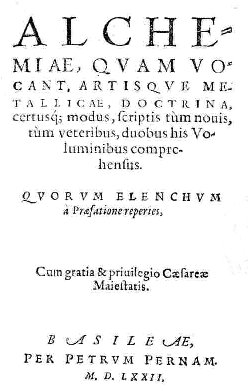
frontispice de l'Alchemiae de Guillaume Gratarole, petrum Pernam (Basilea), 1572
In Primo
Volumine continentur :
1.
Chrysorrhoas,
sive De arte Chimia dialogus. p. 1
2. Lignum vitae, dialogus Braceschi de materia lapidis. p. 26
3.Tauladani Animadversio in Braceschum. p. 153
4. Dialogus veram et genuinam Librorum Geberi sententiam
explicans,
Demogorgon Dialogus.
p. 359
5. Speculum Alchimi Rogerij
Bacchonis.
p. 518
6. Correctorium Ricchardi Angli. p. 534
7. Rosarius minor. p. 577
8. De alchimia Albertus Magnus. p. 611
In Secundo
Volumine continentur :
1.
De Magni
lapidis compositione incerto autore.
2. Aristoteles de Perfecto magisterio.
3. Liber perfectionis magisterii Arnaldi Villan.
4. Efferarius Monach. de Thesauro philosoph.
5. Practica Magisti
Odomari.
[There
are two accounts of this writer. One, the earliest authority
for which,
so far as I know, is Lenglet Dufresnoy, is that he was
practising the
Hermetic Art in 1330. Gmelin calls him a monk, which may be
justified
by the fact that he addresses his disciple as ' frater
Ludovicus,'
saying at the same time that he is violating all the rules of
the sages
in revealing the secret. Schmieder decorates these bare
statements and
depicts the monk in his cloister at Paris working hard at
alchemy in
spite of the pope's bull against the alchemists. He describes
him as a
true teacher who stated what he knew, but that be was more of
a worker
than an author, and be quotes his preparation of common salt.
Hoefer
following the same line calls him a monk who pursued alchemy
in Paris
about the middle of the 14th century, in the reign of
Phillippe of
Valois.
He quotes the advice which Odomarus gives, to guard against
the fumes
which are liable to be produced in alchemical operations by
stopping
the nostrils with cotton dipped in oil of violets - cf.
Chevreul,
critique de Cambriel
-, and refers to his method of preparing aqua regia. The other
account
to given by Zedler. According to it Odomarus was a 'physicus'
of the
17th century, and wrote not only the ' Practica,' but the six
or seven
tracts following it in the above collections. From the way
in which these books are printed, there is some colour for
this
statement of Zedler's, but at the same time he seems to have
credited
him with too many. Judging from the arrangement of the tracts
and the
sub -divisions, the following seem to be the most that could
be
assigned to Odomarus: Practica ad
discipulum,
Theatrum Chemicum, 1659, iii. p. 166. - Arcanum philosophorum
ut ex Saturno facias Aurum perfectum, p. 168. - Perfecta
salis communis
praeparatio ad lapidem philosophorum,
p. 168. - Historiola
antiqua de Argento in Aurum verso,
p. 170, ending p. 172. The "Tractatus de Marchasita' and the
others
which are quoted by Zedler apparently belong lo other writers.
Oddly
enough Zedler refers not to the Theatrum
Chemicum, but to the Thesaurus chymicus,
Strassb., 1613, iii. I do not know a collection of that name
and date,
but there is the Theatrum
Chemicum,
Argent, 1613, add the above tracts are in vol. iii., pp.
154-161. They
are also in the Theatrum
Chemicum,
Ursellis, 1602, iii. pp. 164-171;. The ' Practica,' as its
name
denotes, is a series of directions for certain preparations
and
experiments, with silver, lead, mercury, common salt, green
vitriol,
saltpetre. By heating Roman vitriol one part saltpetre one
part, common
salt two parts in an alembic the author got a corrosive liquid
which
attacked all metals,' even mercury,' and he calls it 'aqua
calcinationis omnium metallorum.' [cf.
là-dessus arcanum duplicatum
et laboratoire 2.]
But to the mixture be also added half a part of quick lime,
possibly
with the idea of increasing its corrosive effect. One writer
at least
has affirmed that the above tract was brought out in a new
edition by
Ortholanus in 1358, under the title ' Practica vera Alkimica.'
Comparison of the two tracts, however, does not confirm this,
and so
far I have failed to see any connection between them. If
Ortholanus
edited Odomarus' tract he has edited it out of existence, or
at least
past recognition.]
6. Tractatus
de
Marchasita.
7.
Epistola
vetus de metallorum materia.
8. Io. de
Rupescissa, de confectione veri lapidis.
9. Idem
de
Quinta essentia.
10. De
viribus
aquae ardentis.
11.
Michael
Savonarola de conficienda aqua vitae.
12. Aqua
aurea, balsamum et oleum nigrum.
13. Ioan.
augustini Augurelli Chrisopoeia, etc.
- Gratarolo,
Guglielmo : Verae Alchemiae Artisque
Metallicae, citra
Aenigmata, Doctrina, certusque modus, scriptis turn novis
tum veteribus
nunc primum & fideliter maiori ex parte editis,
comprehensus :
quorum elenchum à Praefatione reperies. Habes, amice Lector,
admiranda utilissimaq; multa, quae hactenus occultata, &
veluti
sepulta iacuerunt: quorum editionis rationem in Praefatione
ad
philosophos Chemistas paucis intelliges. Basileae M.D.LXI. Folio in sixes, pp.
[15, 1 blank] 244,
299 [1 blank], Colophon: Basileae per Henricum Petri &
Pettrum
Pernam, Anno salutis humanae M.D.LXI.
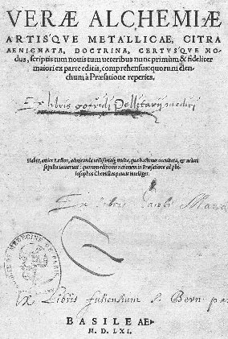
frontispice du Verae
Alchimiae
de Guillaume Gratarole, 1611
1.
Chrysorrhoas,
sive De Arte Chymica Dialogus, i.
2. Dialogus loannis Braccschi, cui titulus est Lignum vitae, in
quo
etiam Gebri Pllilosophi expositio succincta continentur, i. p.
3.
3. In eundem Braceschuni Gebri interpretem, animadversio,
authore
loanne Tauladano, i, p. 47. (The author is called Robertus
Tauladanus
in the title of the tract)
4. Gebri Opera: Oc investigatione perfectionis, i. p. 112.
5. Gebri Opera: Summa perfectionis, i. p. 118. [Attributed to Paul of Taranto
OFM (late
13th cent.) by W. R. Newman, The
genesis of the Summa perfectionis, Archives
internationales
d'histoire des sciences 35 (1985) 240--302]
6. Gebri Opera: De inventione veritatis sive perfectionis, i. p.
184.
7. Gebri Opera: Liber Fornacum, i. p. 193.
8. Rogerii Bachonis De Alchemia libellus cui titulum fecit. Speculum Alchemiae, i. p. 201.
9. Richardi Anglici Libellus peri
ChmeiaV, cui titulum fecit, Correctorium, i. p. 207.
10. Rosarius minor,
i. p.
222.
11. Liber Secretorum Alchemiae compositus per Calid, filium
lazichi, i.
p. 233.
12. Loci aliquot practiciae ex Gebero declatali per . . .
Joannen
Braceschum Vraeanum, i. p. 242.
13.
Liber de
Magni lapidis Compositione et Operatione, Authore adhuc incerto
(also
called De Alchemia), ii. p. 1.
14. Sententia loannis Baptistae Montani, de sublimatione, ii. p.
35.
15. Rosarius
philosophorum Arnaldi de Villanova, ii. p. 35 [il
s'agit en fait du Sommaire
du Rosaire
de Villeneuve par Lacidius].
16. Novum lumen eiusdem vel alterius, ii. p. 60.
17. Epistola Magistri Arnaldi de Villa nova super Alchymiam ad
regem
Neapolitanum, ii. p. 65.
18. Liber perfecti Magisteni, qui Lumen Luminum nuncupatur . . .
vocatur etiam Flos florum Arnaldi de Villanova, longe correctior
&
melior hactenus impressis, ii. p. 67,
19. Practica Magiistri Arnaldi de Villanova, ad quendam Papam,
ex libro
dicto, Breviarius librorum Alchymiae, ii. p. 73.
20. Alberti Magni Ratisponensis episcopi de Alchymia liber
integerrimus, ii, p. 78.
21. Scriptum Alberti super Arborem Aristotelis, ii. p. 102.
22. Apertorium Raymundi Lullii De veri lapidis compositione, ii.
p. 104.
23.
Ars
intellectiva ejusdem super Lapidem Philosophorum, ii. p. 112.
24.
Practica
ejusdem, ii. p. 127.
25.
Idem de intentione Alchimistarum, ii. p. 139.
(Doubtful
tract?)
26.
Ejusdem
Summaria Lapidis Consideratio et eius abbreviationes, ii. p.
156.
27.
Ejusdem
Libellus utilissimus de Mercurio solo, ii. p. 163.
28. Liber experimentorum, ii. p. 174.
29. Pulcherrimum opus de transmutatione metallorum, ii. p. 175.
30. Capitulum valde magnum in albedine, & omnibus nobilius,
ex
libro qui dicitur Philosophus mirabilis, ii. p. 180.
31. Liber Mercuriorum
Raymundi
Lullii, ii. p. 183.
32. Intentio summaria, quae aliter dicitur Repertorium, valde
utilis ad
intelligentiam Testamenti, Codicilli & aliorum librorum
Raymundi
Lullii, ii. p. 185
33. Aristotelis de Perfecto Magisterio exquisitum &
integerrimum
opus, &c., ii. p. 188.
34. Libellus duodecim aquarum, ex libro Emanuelis, ii. p. 209.
35. Aquae rubeae Avicennas ad tingendum quatuor spiritus
sublimatos
albos, ii. p. 211.
36. Elixiriorum varia compositio & modus, ii. p. 220.
37. Joannis de Rupescissa liber de confectione ver Lapidis
Philosophorum, ii. p. 226.
38. De lapide Philosophorum secundum verum modum formando
Efferarii
monachi, ii. p. 232.
39. Thesaurus Philosophiae, ii. p. 237.
40. Praxis universalis Magni operis, ex Raymundo, ii. p. 248.
41. De lapidis philosophorum formatione epilogus, ii. p. 248.
42. Practica Magistri Odomari ad discipulum, ii. p. 249
43. Arcanum Philosophorum, ut ex Saturno facias aurum perfectum,
ii. p.
250.
44. Perfecta Salis communis praeparatio ad lapidem
philosophorum, ii.
p. 250,
45. Historiola Antiqua de Argento in aurum verso, ii. p. 252.
46. Tractatus de Marchasita, ex qua fit Elixir ad album
verissimum, ii.
p. 254.
47. Caput de sale alchali, ii. p. 258.
48. Quaestio an Lapis philosophicus valcat contra pestem, ii. p.
259. [un
écrivain moderne a mis en scène dans le roman Imprimatur - Monaldi
& Sorti,
JC Lattès, 2002 - une recette qu'aurait
élaborée le père Kircher contre la peste ; l'autre
héros du roman qui apparaît en toile de fond est Fouquet.
L'ambiance rappelle Umberto Eco dans
ses meilleurs moments... ]
49. Velus Epistola doctiss. de Metallorum materia, & artis
imititatione, ii. p. 263.
50. Practica Caravantis Hispani, ii. p. 264.
51. Lapidis Philosophici Nomenclaturae, & Gulielmo Gratarolo
collectae. ii. p. 265.
52. loannis Aurelii Augurelli Chrysopoeiae libri iii., et
Geronticon
Liber i., ii. p. 269.
53. Regimina Artis, ii. p. 299.
Ferguson
: The
tract on nomenclature was translated into English and
published in H.
P.'s Five Treatises of the Philosopher's Stone, London, 1652,
p. 65;
but the author is
misnamed ' Gratacolle.' Gratarolo was a native of Bergamo,
where he was
born in 1516. He went through the customary training, and then
turned
his attention to medicine. Having acquired a liking for
Protestantism
he settled in Basel in 1555, and remained there till 1562,
when he was
summoned to Marburg as professor of medicine. He, however,
remained
only a year there, and returned to Basel, where he practised
medicine
and wrote several works. The date of his death is given
variously by
the different authorities. Nigidius, Freher, Boissard, Jöcher,
Bayle give the date as 6 May, 1562. As against that are theses
published by him on 9 May, 1562, and the works of Pomponatius
and of
Wilhelmus neponymus' Dialogus de
substantiis physicis, &c., Argent. 1567. So Niceron
quoting from
his epitaph gives the date 16 April, 1568, he being in his
fifty-second
year, and Strieder gives the same date. He points out,
however, that in
the Diarium eruditorum virorum, Frft. 1612, Gratarolo is said
to have
died on 16 April, 1564,
in his seventy-fourth year, which would carry his birth back
to 1490,
for which there is no authority, as in the above inscription
he is said
to have died in his fifty-second year. The dates given by the
different
authorities do not at all agree. His works treat of medicine,
on the
strengthening of the memory, rural economy, wine, Marpurg
University,
the hot springs in Rhaetia, &c. He edited the works of
Bernard of
Trevisan, Pietro d'Abano, and a Praxis medica, which last
however is
doubtful.
10)- Elias
Ashmole's Theatricum Chemicum
Britannicum
Theatrum
Chemicum
Britannicum. Containing
Severall Poetical Pieces of our Famous English Philosophers,
who have
written the Hermetique Mysteries in their owne Ancient
Language.
Faithfully Collected into one Volume, with Annotations
thereon, by
Elias Ashmole, Esq. Qui est Mercuriophilus Anglicus. The
first
part, London, printed by J. Grismond for Nath: Brooke, at
the Angel in
Cornhill. MDCLII. 1652. xvi +
486 + viii pages.

frontispice du
Theatrum
Chemicum Britannicum, Londres, Brooke, 1652
illustrations tirées de
l'ouvrage : p. 13 - 44 - 51
- 91 - 102 - 116 - 117 - 213
- 348 - 350
- 379 -
Ferguson
: Ashmole (1617-1602) is
famous for
his keen delight in the acquisition
of knowledge and for his business capacity. He was an
antiquary,
herald, astrologer, alchemist, collector of all sorts of
curiosities
and rarities: a remakable mixture of shrewdness and what would
now be
termed superstition. Under the anagram James Hasolle, he also
edited a
small volume called Fasciculus Chemicus or
Chymicall Collections, London, 1650, 12°, containing
prolegomena, Arthur Dee's collections, and a translation of
Espagnet's Arcanum,
His chief alchemical work is the Theatrum Chemicum
Britannicum, London,
1653,4° with several engravings. It contains a series of
old
English poems on Alchemy, with notes by Ashmole. It is called
Part i..
and in the preface to the present work Ashmole regrets that he
had been
prevented carrying it any further. No more was published, and
the first
part is now very rare, and difficult to get complete. The
contents are
reprinted by Gmelin, Geschichte der Chemie
(1797), i. p. 620.
2. The Ordinall of Alchimy. Thomas Norton p. 1 [cf. Musaeum Hermeticum, p. 433 et Bibliotheca Chemica Curiosa, vol. 2, p. 285 ]
3. Compound of Alchymie. George Ripley p. 107 [il s'agit des Douze Portes]
4. the Figure conteying all the secrets of the Treatise both great & small
5. Liber Patris Sapientiae. Anonymous p. 194
6. Hermes's Bird. Anonymous p. 211
7. The Tale of the Chanons Yeoman. Geoffry Chaucer p. 227
8. Dastin's Dreame. John Dastin p. 257
9. Upon the Elixir. Pearce (the Black Monke) p. 269
10. Richard Carpenter's Worke p. 275
11. The Hunting of the Greene Lyon. Abraham Andrewes. p. 278
12. The Breviary of Naturall Philosophy. Thomas Charnock p. 291
13. AEnigmaes. Thomas Charnock p. 303
14. Bloomefield's Bloffomes. William Bloomefield p. 305
15. Sir Edward Kelley's Worke. p. 324
16. Sir Edward Kelley to G.S. Gent. p. 332
17. Doctor John Dee'sTestament. p. 334
18. Of the Philosophers Stone. Thomas Robinson p. 335
19. Experience and Philosophy. Anonymous p. 336
20. The Magistery. W.B. p. 342
21. Anonymi, or Severall Workes of unknowne Authors. p. 334 & 404
22. Upon the Philosopher's Stone. John Gower p. 368
23. The Vision of Sir George Ripley. p. 374
24. Verses Belonging to an emblematic Scrowle. Ripley's Scrowle. p. 375
25. Mistery of Alchemists. p. 380
26. Preface to the Medulla, Geo. Ripley p. 389
27. A Short Worke. George Ripley p. 393
28. Secreta Secretorum. John Lydgate p. 397
29. The Hermit's Tale. Anonymous p. 415
30. Discription of the Stone. Anonymous p. 420
31. The Standing of the Glasse, etc. Anonymous p. 421
32. AEnigma Philosophicum. William Redman p. 423
33. Fragments. p. 424
34. Annotations and Discourses upon Some part of the preceding Worke.
35. A Table of The Severall Treatises, with their Authors Names, contained in this Worke p. 501
36. A Table explaining the Obscure, Obselete, and mis-spell'd words used throughout this Worke. p. 503
11. Bono da Ferrara, pietro et al. Pretiosa margarita novella de thesavro ac pretiosissimo philosophorvm lapide, artis huius diuin typus, & methodus: collectanea ex Arnaldo, Rhaymundo, Rhasi, Alberto, & Michaele Scoto, per Ianum Lacinium Calabrum nunc primum, cum lucupletissimo indice, in lucem aedita.
8°. Ff. [20] 202. Tabula, Errata, Registrum, and Colophon, and Aldus' device [14]. 22 woodcuts. The anchor is on the title-page, and on the verso of the last leaf. The colophon, on the verso of the last leaf but one, runs: Venetiis, Apud AIdi Filios, M.D.XXXXVI.
Ferguson : Toppi says that Lacinius was a Calabrian whose work was printed by Aldus in 1546 and again by Gabriel Hayn at Nuremberg, 1554. 4°. This last book has the following title: Praeciosa ac nobilissima artis Chymiae Collectanea de occultissimo ac praeciosissimo Philosophorum lapide. Per lanum Lacinium Calabrum Minoritam Theologorum minimum. Nunc primum in lucem aedita cum totius libeIli capitum indice [Vignette]. Norimbergae apud Gabrielem Hayn,Ioann. Petrei generum, M.D.LIIII. 4°, ff. [8, including a full-page woodcut] 124. It contains collections in five books, the last of which is a reproduction with modifications of ff. 160-194 in the Pretiosa Margarita Novella of 1546. The work by Petrus Bonus, so called, was afterwards issued under the following title: Introductio in divinaro Chemiae Artern Integra Magistri Boni Lombardi Ferrariensis Physici. Nunc primum integra in lucem edita. . . . Basileae, apud Petrum Pernam, M.D.LXXII. 4°, pp. (7, 1 blank) 278. [Index ?] It claims therefore to be more complete than the Aldine edition. The preface to Albertus, Duke of Bavaria, was written by Toxites. This book was reprinted: Montisbeligardi, apud lacobum Foillet, M.DC.II. 8°, pp. [20] 398 [12, 2 blank]; and again: Argentorati, Impensis Lazari Zeteneri Bibliop. M.DC.VIII. 8°, pp. [20] 398 [12, 2 blank]. See the notes to BONUS (PETRUS).
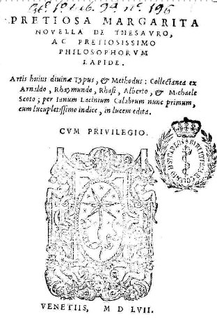
frontispice de la Margarita Preciosa Novella de Petrus Bonus, apud Aldi filis (Venecia), 1557
illustrations tirées de l'ouvrage : 1 - 2 - 3 - 4 - 5 - 6 - 7 - 8 - || - 9 - 10 - 11 - 12 - 13 - 14 - 15 - 16 - 17 - [il existe des versions en couleurs mais elles ne semblent pas originales. On trouve encore d'autres versions de ces gravures de meilleure qualité mais de format beaucoup plus réduit et sans texte dans le site suivant : http://www005.upp.so-net.ne.jp/macrocosm/alchemy/alchemy.html]
1. Pretiosa Margarita Novella, ex concordantijs sapientum collecta, . . . Petro Bono Ferrariensi autore, f. 1.
2. Epistola Boni Ferrariensis, f. 132.
3. Collectanea Lacinii ex Arnaldo de Villa Noua quae practicae compositionem lapidis philosophorum
continent & exquisite decent, f. 136.
4. Epistola sive Epitome Raymundi Lulli, f. 160.
5. Collectanea Lacinii sive breuia excerpta ex libro luminis luminum Rhasis, f. 167.
6. Collectanea Lacinii ex Alberto Magno atque diuo Thoma alijsq; autoribus, f. 180.
7. Quaestio Curiosa de Natura Solis et Lunae ex Michaele Scoto, f. 195.
12. Ferguson, John. Bibliotheca chemica : a catalogue of the alchemical, chemical and pharmaceutical books in the collection of the late James Young of Kelly and Durris,.... Volume II / by John Ferguson,..., Maclehose and sons (Glasgow), 1906
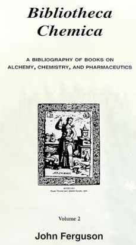
frontispice du volume 2
John Ferguson was born on 23 January 1837 in Alloa, Clackmannanshire, Scotland, son of William, a merchant. He was educated at the High School of Glasgow and at Glasgow University from 1855-1864 . His first studies at Glasgow University were in the Arts Faculty, receiving a BA in 1861 and an MA the following year. After this he continued his studies, finishing in the Medical Faculty, the only way he could then study Chemistry. He won a number of prizes at University including the Ewing Gold Medal for his essay "Historical Account of the Papacy as a temporal power in Europe", the Gartmore Gold Medal for "The Advantages & Disadvantages of Federal Government" and he twice won the Watt prize for essays entitled "On Cohesion" and "Electricity & Magnetism from the Middle of the Last Century".
John Ferguson studied Natural Philosophy under Professor William Thomson, Lord Kelvin, and Chemistry with Professor Thomas Anderson. From finishing his studies in 1864 until 1868 when he was appointed University Assistant with charge of tutorial classes and laboratory supervision, he worked as private assistant to Professor Anderson. In 1869 , Professor Anderson was taken seriously ill and John Ferguson undertook the general running of the department until November 1870 when the Professor returned. It was during this time that the University moved from the High Street to Gilmorehill and it was down to Ferguson to plan the new Chemistry Laboratories. Anderson never fully recovered from his illness and when he died in 1874 , John Ferguson became his successor.
He wrote widely on Chemistry and particularly on the history of the subject when the History of Science was not widely published in scientific journals. He was often published in the Proceedings of the Royal Philosophical Society of Glasgow, the Society for which he was president of the Chemical Section and then full President from 1892-1895 .
The major work for which he will be remembered is Bibliotheca chemica: a catalogue of the alchemical, chemical and pharmaceutical books in the collection of the late James Young (Glasgow, 1906). His interest in alchemy and the occult science lead him to collect a large number of books on the subject.
His nickname "Soda" is said to have derived from his personality -a little caustic. Besides holding the office of President of the Royal Philosophical Society of Glasgow, Professor Ferguson was a President of the Glasgow Archaeological Society 1892-1893, a Fellow of the Royal Society of Edinburgh 1888 and of the Society of Antiquaries 1890, the Chemical Society 1872 and the Institute of Chemistry in London 1878 . He was awarded an LLD by St Andrews University, Scotland, in 1887. He belonged to several learned societies in Europe and was an honorary member of the Imperial Military Academy of Petrograd. Throughout his life, John "Soda" Ferguson had been connected with Glasgow University, his last position being as Honorary Curator of the Hunterian Library. He died on 2 November 1916 .
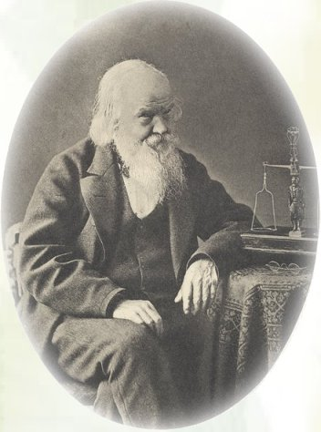
Dr. James Young (1811-1883) - photogravure par Armand & sons
1. The period of belief in transmutation — the alchemical period — which begins at the earliest date of which there is a record and stretches down to the commencement of the nineteenth century, with sporadic survival to the present time. Along with the notion of transmutation there existed the preparation and employment of various kinds of bodies in pharmacy and medicine, and practical applications of substances in the technical arts. These were empirical, but from both a considerable body of experimental facts of important practical use was brought together, though still without anything of a guiding principle.
2. The iatro-chemical period, which began in the sixteenth century, and died out about the close of the seventeenth century.
3. The period of scientific chemistry, which began in the seventeenth century shortly before or about Boyle's time, and continues to the present moment
These aims of chemistry, therefore, for a time ran parallel with each other and materially influenced each other. The iatro-chemists transplanted alchemical ideas into medicine and pharmacy, and on the other hand one of the most important of Boyle's labours was his criticism of the then current doctrines of elements and theory of composition. It belongs to history to trace and explain the processes by which each period was modified, absorbed, and at last replaced by another, to allot to the various labourers their due praise for what they accomplished, and to record the acquisitions of fact which remain established to this day. As it is solely from the literature which has descended to us, that insight into the state of the science during these periods is obtained, an ideal historical library should represent all periods and all aspects, and should contain the works of all authors. I am not aware that such a library exists. It is only an approximation to this ideal that any collection can offer. We may now see what the present one embraces.
1. As the alchemical books in the library are much the most abundant, they may be taken first, and roughly in chronological order. The earliest portion is that of the Greeks, beginning with Democritus in the second or third century A.D. Apart from the Greek MSS. themselves, which are attainable only in certain European libraries, the first access to their contents was through the translation of a portion of them by Pizimenti. There is a copy of the rare reprint of 1717 in the library, so that the student can thus start from the very oldest records. Next comes the Arabic epoch represented by the works of Geber, Kalid, Rhazes, Avicenna. This is followed by the productions ascribed to Morienus, Hortulanus, Arisleus, Artephius, Ferrarius, petrus v. Zalento, Haimo and the pseudo. Merlin.
Most of these personages are more or less shadowy, but writings in their names are extant, and it rests with the historian to appraise their claims to acceptance as genuine. The authors of the thirteenth century are better known than the preceding, but there are doubts as to some of the alchemical writings which pass for their composition. Such as they are these are said to be by Albertus Magnus, Thomas Aquinas, Michael Scotus, Christophorus of Paris, Roger Bacon, Arnaldus de Villa Nova, Richardus Anglicus, Guido de Montanor. The next century furnishes a list of notable people: Pope John XXII., Jean de Meun, Raymond Lully, Cremer of Westminster, Pietro Bono, Antonio de Abbatia, Odomar, Rupescissa, Ortolanus, Flamel. As time goes on more writers on the subject appear. In the first half of the fifteenth century there are the reputed Basilius Valentinus, Joannes of Tetzen, Isaac Hollandus, Lasnioro, Lambspringk, and, in the second half, Bernard of Trevisan, Ficinus, Trithemius, Poyselius, Vincent Koffsky, George Ripley, Thomas Norton, Trissmosinus. In the early part of the sixteenth century one meets with Augurello, Picus de Mirandula, Pantheus, Lacinius, Bracesco, Grewer, Paracelsus, Agricola, Denis Zachaire, Petrus Arlensis, Robertus Vallensis, Alexander von Suchten, p. haedro, Wenceslaus Lavinius. In the latter part flourished Thurneysser, Nazari, Carerius, Quadrammii da Gubbio, Blaise de Vigenère, Penotus, Barnaud, Balbian, Edward Kelley, Dr. Dee, Francis Antony, Robert Fludd, Beuther, Sebald Schwertzer, Wittestein, and the two Khunraths.
The seventeenth century is perhaps the mast prolific of all in alchemical writers, and richest in narratives of transmutations accomplished, in books written in explanation and defence of the art, as well as in those by others who doubted it. It opens with the adventures of Alexander Seton the Cosmopolite, followed by the romantic episode of the Rosicrucian Society, and among the crowd of alchemists and chemists may be mentioned Libavius, Figulus, Crollius, Pontanus, Grasshof, Schaubert, Rhenanus, Gerhard, Michael Maier, Birelli, Billich, Johannes de Padua, Angelo Sala, Guibertus, d'Espagnet, Nuysement, Potier, Castaigne, L'Agneau, Palmarius, Drebbel, Hoghelande, Samuel Northon; though some of these are also to be found among the iatro-chemists. The second quarter of the century includes Sendivogius, Ambrosius Muller, Grosschedel ab Aicha, Batsdorf, Rist, Johannes Agricola, Kessler, Liberius Benedictus, Conringius, Peter Faber, Philaletha, Starkey, Zwelffer, Zwinger. Between 1650 and 1675 fall the names of Richthausen, Monte Snyder, Glauber, Harprecht, Kircher, Blauenstein, Clauder, Otto Tachenius, Becher, Löwenheim, Drechssler, Albineus, Morhof, Borrichius, Helvetius, Kerkring, Vreeswyk, Johnson, Borel, Germain, Atremont, Du Clos, de Comitibus, Ashmole, Borri. In the last quarter are W. v. Schröder, Seyler, Krohnemann, Cardilucius, Balduinus, Kunckel, Wedel, v. Helbig, Orschall, Weidenfeld, Grummet, Kirchmayer, Hannemann, Boyle, Dickinson, Mundanus, Colson, Headrich, Tollius, Salmon, Gualdo, Lancilotti. The eighteenth century also furnishes an abundance of names, but there is a marked change in the character of the writings. There may be enumerated the following: Bötticher, Caetano, Delisle, Paykul, Stahl, Dippel, Ettner von Eiteritz, Barchusen, Manget, Söldner, Kellner, Axtelmayer, Faustius, Müller, Horlacher, S. Richter, Klettenberg, Roth-Scholtz, Chymiphilus, Siebenstern, Hensing. There were also Plusius, Keil, Creiling, Fictuld, Richebourg, Lenglet Dufresnoy, Tharsander, Jugel, J. F. Meyer, Wenzel, Schröder; and from 1775 to 1800, Semler, Wiegleb, ab Indagine, Adamah Booz, Herverdi, Güldenfalk, Kortum, Henckel, von Murr. All these and many more less prominent are in the library, and it may be said with some confidence that little of importance relating to alchemy, in the seventeenth century especially, is wanting. Not only so, but certain books which are very scarce indeed, and are not alluded to in some of the fullest lists, are here present. The best running commentary on this division of the library is Kopp's last work, Die Alchemie, and one might almost imagine that in writing the bibliographical appendix he had had access, if not to this collection, to one similarly furnished. But here again there are items which have escaped Kopp's observation. The only other books to be considered are the collected editions of alchemical tracts, which, as I have already said, are characteristic of the literature, even from the earliest times. The Greek MSS. always contain treatises by different writers, ranging from four to as many as fifty-three ; and in Pizimenti's translation, the tracts of Democritus, Synesius, Pelagius, Stephanus and Psellus are printed together. Later MSS. in Latin, of which various specimens have passed through my hands, are similarly made up, and when they were printed, what they contained was simply reproduced. So it must have been in the Vatican MS. of Geber; for, not only his works, but tracts by Kalid, Avicenna, and others are included in Silber's edition, printed at Rome before 1520, and in several of those which followed. But from the sixteenth to the end of the eighteenth century the practice of printing collected editions became common, and quite a number appeared. The most comprehensive in the library may be mentioned: De Alchemia Volumen, Petreius, 1541 ;Lacinius' Pretiosa Margarita Novella, 1546; De Alchimia Opuscula, 1550; Gratarolo's Verae Alchemiae Doctrina, 1561; Eröffnete Geheimnisse des Steins der Weisen: Vellus Aureum; Ars Auriferae; Theatrum Chemicum; Manget's Bibliotheca; Museum Hermeticum; Ginaeceum Chemicum, 1673; Albineus' Bibliotheca Chemica Contracta, and a swarm of others under fanciful titles, which have been amusingly classified by Kopp. Some of the smaller ones may contain three or four tracts only, while the Theatrum Chemicum, and Manget's Bibliotheca, which are the largest, contain about two hundred and a hundred and forty respectively, some of considerable length. In French there is the Bibliotheque Chimique of 'le Sieur S.' [Guillaume Salmon] enlarged by Richebourg. In German there is the Vellus Aureum, Tancke's Promptuarium, the translation of the Pretiosa Margarita of Lacinius, Morgenstern's translation of the Ars Aurifera, Roth-Scholtz's Deutsches Theatrum Chemicum the body of extracts called Hermetisches A. B. C., and Schroder's Alchymistische Bibliothek. In English there are Salmon's translation of Hermes, Geber, Kalid, Bacon, and Flamel, appended to his Medicina Practica, the Collectanea Chymica, and the Aurifontina Chymica. These collected editions have impressed a distinctive feature on the catalogue, for, in drawing it up, the contents have been duly recorded under their respective titles, while each item has been entered under its author's name, or its own title, or, maybe, under both. This was a necessity, in order that no document bearing on the subject should be by any chance overlooked.
2. But besides these authors who were concerned solely or mainly with alchemy, there were others who, without questioning the reality of it, employed its principles merely as a guide, and instead of attempting to effect practically the change of metals into gold and silver, used, partly for medicine, partly for the practical arts, the knowledge of substances accumulated by the alchemists and others.
This epoch was inaugurated by Paracelsus in the sixteenth century by his asserting that alchemy was one of the pillars of medicine, and that alchemy was not confined to transmutation of metals, but was the art of preparing substances for medical use; that, in fact, it was the art of the transmutation of every kind of matter. Paracelsus started the iatro-chemical school, and he had many followers, as well as many opponents. His theories belong to the history of medicine rather than of chemistry; still, his adherents were chemists, and wrote books on chemistry for physicians, while his opponents, in order to controvert his doctrines, had themselves to acquire some familiarity with the new science. Of the iatro-chemical school, some supporting Paracelsus' views, others accepting them with reservation and criticism, and still others breaking away from them, may be mentioned Quercetanus, Thurneysser, Dorn, Rhenanus, Libavius, Beguinus, Crollius, Sala, Polemann, Potier, Joannes Agricola, Pierre Faber, v. Helmont, Glauber, Lefevre, Glaser, Lemery, Rolfinck, Tachenius, Barchusen, Guibertus, Ludolf, Morley, Sennertus, Rivinus, Bolnest, Brendelius, Charas, Elsholtz, Jungken, Poppius, Hoffmann, Wedel, Mynsicht.
______________
[sur tous ces chimistes, consultez Chevreul critique de Hoefer, II et III. Le cas de Rhenanus est intéressant en ce qu'il permet de placer un point de jonction entre la collection Dyas Chymica Tripartita et l'Aurora Consurgens ; voici des notes de Ferguson :
Ferguson : Johannis Rhenani, Medici Celeberrimi, Opera Chymiatrica, quae hactenus in Lucem prodierunt onnnia, a plurimis, quae in prioribus editionibus irrepserant, mendis vindicata, & selectissimis medicamentis aucta, inque vnum fasciculum collecta, quorum catalogum versa indicabit pagina. Francofurti Sumptibus Conradi Eifridi. Anno M DC XXXV. 8°. Pp. [31, 1 blank] 367 [1 blank]. Folding table. 44 woodcuts of apparatus. Vignette. An edition of Frankfurt, 1641, is reported and there is one: Francofurti, apud Jacobum Gothofredum Seylerum. Anno MDCLXVllI. 8°, pp. [2] [15, 1 blank] 367 [1 blank]; folding table. This is a reissue of the remainder of the 1635 edition with a new and new-dated title-page wanting the symbolical vignette, and with the omission of the Epistola Dedicatoria to Bruno Carolus ab Uffeln, dated 1634, and the half-title to the 'Chymiotechnica.' It is not really a new edition. The writings contained in this collection are these:
- Solis e Puteo emergentlis, hoc est, Chymiotechnicorum Libri III., pp. 1-179. The first book contains a description, with illustrations, of chemical apparatus, of operations, and of the preparation of certain substances. Book second deals with the ' Lapis Philosophicus.' Book third is a ' Clavis & Manuductio in libros Theophrasti Paracelsi.'
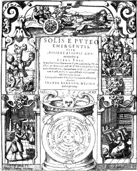
frontispice du Solis e Puteo, etc.
- Aureus Tractatus de Philosophorum Lapide. Ab adhuc vivente, sed anonymo Philosopho Germanice in lucem emissus, nunc autem in Latinum donatus, pp. 181-253. This tract, says Rhenanus in his prefatory note to the reader, appeared originally in the Dyas Tripartita of Heermann Condeesyanus, and was subsequently rendered into Latin in an inaccurate and misleading version by some one ignorant of chemistry, and published by Lucas Jennis at Frankfurt in the MUSEUM HERMETICUM (q.v.). He, therefore, thought it worth while to give a correct translation.
[ce traité est parfois attribué à Grasseus ou Grasshoff alias Condeesyanus et se ressent d'une influence R+C manifeste. Il forme la 1ère partie du Dyas Chymica Tripartita]
- Epistola de Solutione et Menstruo Philosophorum, T. G. Chymiatrophili ad Dn. Auctorem, pp. 254-257
- Responsio Auctoris. pp. 258-271
- Antidotarium Pestilentiale. Hoc est: Brevis quidem, sed ex rei medicae fontibus petitus, de borrenda illa lue pestifera, eiusque origine, operationibus, & curatione discursus . . . Lingua vernacula olim in lucem emissus a Johaone Rhenano. Nunc vero in Latinam linguam translatus per Fridericum Vogt, Medicum Hassum. pp. 273-326.
- Vrocriterium Chymiatricum, siue Ratio Chymiatrica exacte diiudicandi vrinas ex tribus principiis actiuis, & vno passiuo, hactenus neglectis; aphoristice ostensa: Auctore Johaone Rhenano, pp.327-367.
The author's name was property Rheinland, and he was the son of Dr. Martin Rhenanus, and grandson of Johannes Rhenanus, who was first preacher and afterwards superintendent of the salt works at Allendorf. Rhenanus was born at Cassel, but Strieder was unable to ascertain the date either of his birth or death. He studied at Marburg under Hartrmann, took the degree of M.D. in 1610, and became physician to Cassel of the Landgrave Moritz, who employed him actively in chemical experiments. His wife died in September, 1637, aged 57, and the marriage of a son, Jonannes, In 1632, is mentioned. Besides the present works them are the following:
- Dissertatio chymiotechnica, in qua totius operationis chymicae methodus practica clare ob oculos ponitur. . . sub praesidio . . . Johannis Hartmanni . . . Marpurgi Cattorun, 1610, 4°, with a folding table. The title 'Opera chymiatrica' to not that given originally to the above book. It is: Solis e puteo emergentis: sive Dissertationis chymiotechnicae Libri tres. In quibus totius Operationis chymicae methodus Practica: Materia lapidis Philosophici, & nodus (sic) soluendi eius, operandique, vt & Clavis operum Paracelsi, qua abstrusa explicantur deficientia supplentur. Cum praefatione Chymiae Veritatem asserente. Authore loanne Rhenano, Medico. Uber primus. Francofurti.M.DC.XIII, 4°. Engraved border round the title, folding table, woodcuts in the text. ln three parts, with separate title-pages and pagination. Numerous editions are recorded: Francof., 1623, 8°; 1625, 1635, 8° (as above), 1641, 8°; 1668, 8°; 1676, 8°
- Antidotarium Pestilentiale, Frankf., 1613-4 (in German),
- Syntagma harmoniae chymico-philosophicae sive philosophorum antiquorum conscientium hactenus quidem plurimum desideratorum sed nondum in lucem publicam editorum, collectum & distributum in certas decades, Francof., 1625. 8°. This work ' Syntagma harmoniae chymico-philosophicae' is presumably identical with one which bears a somewhat different title: Harmoniae imperscrutabilis chimico-philosophicae decades duae, quibus continentur auctores de Lapide, Francofurti, 1625. 8°. of the twenty tracts in which a list is given by Lenglet Dufresnoy. He also states that it is a continuation of a collection with the same title, but containing three decades of hitherto unpublished tracts, made by Hermann Condeesyanus, Francofurti, 1625, 8°.
[il s'agit à l'évidence du Dyas Chymica Tripartita ; on voit s'établir une relation entre Grasseus et Rhenanus ; il se trouve que le texte de l'Aurora Consurgens - je ne parle pas du commentaire à l'Aurora consurgens, cf. infra Artis auriferae - a été publié dans ce texte de Rhenanus]
I do not know whether this is a fact, or not, but I doubt it. In the British Museum Catalogue, under Condeesyanus, there is the following entry: Harmoniae inperscrutabilis Chymico-Philosophicae, give philosophorum antiquorum consentientium. . . nondum In lucem. . . missorum decas I. . . . Collectae ab H. C. D. (Decas II. Collecta studio et industria J. Rhenani.) a pt. Francofurti, 1625. 8° This contains the twenty tracts. (There is, by the way, no cross reference in the B. M. Catalogue from Rhenanus to Condeesyanus.)
Two works in manuscript by him remain:
- Secreta quaedam de praeparatione lapidis philosophici, and Speculum aestheticum, & comedy in which all the senses take part and the tongue has a contention with the others.
The grandfather, who seems to have been a person of great energy and spirit, passed an active and unsettled life and had disputes and quarrels with a number of people. Objection was taken to his being both a clergyman and a saltmaker; the saltmakers disliked his innovations, and his salary was occasionally withheld from him. He was, however, the ablest of his family, and his grandson speaks of him making a discovery of coal and using it for salt-boiling, which would be somewhere about the year 1580. His life was described by U. F. Kopp In his "Beytrag zur Geschichte des Salzwerks in den Soden bel Altendorf an der Werra,' Marburg, 1788, 8°, from which Strieder has taken his account, and more recently there is a biography by H. Cramer: Johannes Rhenanus der Pfarrherr und Salzgräfe zu Allendorf an der Werra, Halle, 1879, 8°, pp. 41. ]
____________
3. The epoch of scientific chemistry began with two controversies. The first was that between Conring and Borrichius as to the antiquity of Hermes, the reality of the Hermetic medicine and the soundness of Paracelsus' innovations; the second was the discussion by Boyle of the elements or principles of the chemists and of the Aristotelians. This was the first systematic criticism of chemical theory from a purely scientific or philosophical standpoint, and it gradually led to an observation of phenomena apart from applications to medicine, or arts, or alchemy. Those who pursued this course and, so to speak inaugurated scientific chemistry, were Becher and Stahl, Lemery, Boerhaave, Weigel, Rothe, Marggraf, Priestley, Lavoisier, Scheele, Sage, Baumé, Bergman, Scopoli, Achard, Crell, Dandolo, d'Arcet, Demachy, Trommsdorff, Spielmann, Teichmayer, Wiegleb, Jacquin, Scherer, Fourcroy, Macquer, Claude de la Metherie, Morveau. Without belonging to any of these periods, as has been said above, there are works in the library which, while involving a certain amount of chemistry, are concerned not with transmutation, or medicine, or theories and speculations, but with the needs of ordinary life, or with the positive and technical side of the science. Among these are the miners and metallurgists; Ercker, Entzel or Encelius, George Agricola, Alonso Barba, Sir John Pettus, Webster, Gabriel Plattes, Löhnayss; assayers: as Schreitmann, Zimmermann, and the anonymous author of the Probier Büchlein; the mineralogists: Marbodaeus, Nicols, Henckel; technologists: as Neri, Merrett and Haudicquer de Blancourt, who all wrote about glass; Axt, who published a little treatise on the making of rosin, wood tar and charcoal; Caneparius, the author of the treatise de Atramentis ; the compilers of books of practical receipts and secrets, as they were called, such as the author of the Rechter Gebrauch d'Alckimei, Andriessen, Fioravanti, Alessio, Lemnius, Wecker, Hugh Plat, Kertzenmacher, Cortese, Schmuck. In some respects, as in giving insight into everyday practical working, these books are as interesting and important as any. The books on pharmacy also constitute a series by themselves, but as they are, — with one or two exceptions, such as the Dispensarium of Praepositus, Luminare Majus of Manlius de Boscho, Lumen Apothecariorum of Quiricus, Thesaurus of Gesner, — comparatively recent, they do not require special notice. It is an illustration of the persistence of an idea that all through the eighteenth century to its very close, when most important discoveries were making and entirely new theories were advanced, the controversy as to the reality of transmutation — as a fact and as a theory — was still sustained. At the opening of it, in 1702, came the attack by Söldner — as it is said — in the Teutsches Fegfeuer der Scheide-Kunst, replied to in the ErIösung der Philosophen aus dem Fegfeuer der Chymisten; Creiling's vindication of alchemy in Die Edelgeborne Jungfer Alchymia, 1730, Lenglet Dufresnoy's Histoire, 1742, which must be regarded as unfavourable; Fictuld's ProbierStein, 1753, a sort of biographical dictionary of genuine and false alchemists, more remarkable for the author's judgments than for the information supplied; the curious dictionary of Pernety, 1753, in which as in his other work he strives to interpret the myths of antiquity as Hermetic; [rappelons que nous partageons les doutes de Ferguson et de tant d'autres sur le degré de vraisemblance que l'on peut accorder à l'autorité intellectuelle de Pernety ; mais ses écrits sont sauvés - si l'on peut dire - par une érudition que l'on ne retrouve plus, ensuite, que chez Jung et Fulcanelli] Wiegleb's onslaught on the truth of alchemy, 1777, with Kortum's learned and rather dexterous reply, 1789, and the collection of narratives about transmutation by Güldenfalk, 1784. Then at the close of the century, 1797 to 1799, appeared Gmelin's Geschichte, in which for the first time the subject was treated as a whole, and as an independent branch of history, without bias, and apart from controversy as to the truth or reality of any section of it, but merely as a record of events, persons and books. All these, with others of less note, are in the library. In endeavouring to construct the catalogue of such a library as this, which labour I undertook at Dr. Young's request, I considered who were likely to consult it and how best it could be made serviceable for the study of the history of chemistry.
The persons who may possibly refer to it — besides those who actually use the library itself —- are, in the first place, librarians, bibliographers, booksellers, and collectors of this branch of literature, if there be any such, and, in the second, students. For the convenience of the first group, the catalogue has been constructed on a more liberal and elaborate scale than would have been necessary, had the object been merely to make a list of short titles sufficient to serve as a register for the library. Instead of that the titles are reproduced in full, the particular copy is described, and any peculiarities it may possess are noted, other editions are enumerated, and, when practicable, an account of them, too, is added, which in many cases has been possible-by inspection of the books themselves. To the different classes of bookmen these details may be convenient for reference, and for comparison with other copies. The literature is scarce, obscure and almost unknown, and, so far as my experience goes, while there are lists and enumerations of alchemical books, there is no bibliography of any part of it. More particularly intended for the student, who is concerned with the contents rather than with the externals of the books, are the notes which contain biographical and descriptive details and discuss doubtful or disputed points of chronology, authorship, and other matters. The authors of most of these books are strangers in this country and are but little remembered, or thought of, in their own. Some of them, however, were amongst the foremost men of their day, conspicuous by their lives, learning, discoveries and writings. It seemed desirable therefore, in carrying out the plan I had drawn up, to give the student some notion of the position and authority of the different writers so far as lay in my power, to refer to the questions which have arisen about them or their writings, and to the criticisms and judgments which have been passed upon them. As it was impossible to accomplish this in full within the limits of a catalogue, I have endeavoured by lists of authorities, whom I have been able to consult, to assist the student further in surveying the field for himself. In the authorities quoted others will be found, and in these again others, and so the student can continue his research till he has exhausted the literature, and possessed himself of all available information at first hand. The authorities are not all of equal value; for while some supply much sound information, others furnish an irreducible minimum. Nor do they always agree as to dates and other matters of fact, which is a defect, and their criticisms and decisions also are sometimes at variance, which is of very little importance; but this uncertainty adds to the liveliness and zest of the inquiry, and stimulates originality and independence of judgment on the student's part, for he must lay his account for long and sometimes baffling investigation if he want to arrive at the truth. I have also endeavoured to give him some hold upon the authorities by arranging them as far as may be chronologically. An advantage is that if they be examined in this sequence, the statements made, whether accurate or inaccurate, can be traced to their sources, and thus by careful examination and comparison it can be decided who are original authorities and who are compilers and copyists. Another advantage of the lists is that from their extent and the status of the persons composing them, an inference can be drawn as to the importance and interest surrounding any particular writer, from his own time to the present. All the rest is for the student of history himself to do; it is his affair to examine the facts, the doubts, the difficulties, the errors; to confirm what is correct, to correct what is faulty and wrong, to throw light if possible on confused and debateable problems, and to confess his inability to reconcile contradictory averments and opinions, when the means for doing so have failed him. In the present work he will find plenty of opportunities for expending labour and exercising his critical faculties. Nor do I presume to think that what I have said is in every case correct and final. There is too great a want of agreement amongst the authorities for any one, at this time of day, to do more than get as near the truth as possible through the mists of defective records and discordant results. The brief abstracts and "accounts which I have given are therefore liable to such modification, or correction, as further examination of the existing authorities, or new discoveries, may necessitate. There is no weed which spreads so quickly as error; I can only hope that I have introduced as little as may be in my statements. One, however, cannot escape the common lot, but one can perhaps plead, with Lactantius, the common imperfection: " est enim aliquid medium quod sit hominis, scilicet scientia cum ignorantia conjuncta et temperata." What success this work may achieve will depend on the proportion of those constituents, and how they are combined. The inducement which I have had to go into the matter in detail, is simply the want of a book of any kind whatever on the subject in English, while those which exist in other languages, in German for instance, do not cover this ground. With the exception of Ladrague, whose work, printed at Moscow in 75 copies, is about as rare as a manuscript, no one supplies even the pagination, and no one at all reproduces the titles in full. The compilation of the present work, therefore, afforded an opportunity, which it behoved me not to neglect, not merely of making a catalogue, but of attempting to begin a bibliography, at all events within the limits which the collection allowed, and of thus filling a gap in the literature of the history of chemistry, while the addition of the biographical notes and the references to the authorities constituted a guide to the relative literature. In no better way, it seemed to me, could the purpose of the founder be attained. If, -for such flaws in the plan and its execution'as use may reveal, an apology be necessary, I can use the words of Pliny, without, I hope, being charged with presumption : " nec dubitamus, multa esse, qua et nos praeterierint. Homines enim sumus, et occupati officiis: subcisivisque ternporibus ista curamus, id est, nocturnis, ne quis vestrum putet his cessatum horis."
At the conclusion of a work like the present, one can hardly refrain from contemplating the theme of it It deals with phases of a science which is of active interest and influence just now certainly, but is as different from its former condition as to views, aims, methods, and results, as if there never had been any connection between them. Yet the chemistry of the moment is also merely a phase, and by its more rapid development is so much less stable than that of three hundred years ago, when discovery made slower advance. Still the books enumerated here, unattractive as they are — even unintelligible, maybe — record the thought and experience of many men, some of them among the most skilful and far-seeing of their time. But their labours have disappeared as if they had never been, their controversies are forgotten, their discoveries have long ago been assimilated into common knowledge; what was right in their work has, as far as they are concerned, shared the fate of what was wrong: it is not even known that It was theirs.
" The chiefs of other tiroes are departed; they have gone without their fame. The sons of future years shall pass away; and another race arise."
Let not the modern student of science imagine that he and his work will escape the universal doom. His discoveries, his theories, the most recent, the most comprehensive and progressive, sooner or later will become mere archaeological data, to be included, or, just as likely, omitted, in a historical review of this time. Such, at least, has been the rule in chemistry for the last eighteen hundred years, and there is no sign of its being suspended in favour of any chemist of to-day.
" Thus times do shift; each thing his turne do's hold; New things succeed as former things grow old."
It is this phenomenon which stimulates to the writing of history and to the antiquarian research on which it rests, the passing, namely, of the generations with their ideas and pursuits. But change itself is inevitable, and as the past conditions cannot be recalled or reproduced, either in the individual or the race, the most that can be done is to record something of them. The history of chemistry, as indeed of all science, is but a succession of epitaphs upon forgotten men and forgotten discovery. What then do these men not owe to him who gathers up their works, and in so doing recalls their achievements, and thus labours to lift that icy pall of oblivion which descends on everything human, just because it is human, imperfect, temporary, and has to be forgotten to make way for something else? It was to mitigate that fate as far as human effort can, when it has to strive with the eternal law and necessity of change, that this gathering of the writings of bye-gone thinkers and workers was made. That they were struggling with error-obscured vision towards the light of reality should cause not neglect of them and contempt for their shortcomings and failures, but should arouse the fellow-feeling and interest of those who at the present moment are engaged in the same struggle, and whose turn for neglect and contempt is coming. Dr. Young realized this, and the library is his effort to awaken and foster such sympathy and remembrance. Whether or not I have succeeded by the present catalogue in carrying out his wish to make it as instructive for the purpose he contemplated as may be, It is impossible for me to say. The decision of Dr. Young himself is what I should have pre-eminently desired; and I should have prized the judgment of one other, whose interest in the catalogue was to me its inspiration, and whose verdict at its close would have been my reward. But these voices are now still. To friends who have assisted me in various ways, by loans of books, by references to authorities to which access for me was difficult, by revision with roe of certain portions of the work, I desire to tender my warmest thanks. First and last I have read the proofs, and am alone responsible for whatever errors and misprints exist. May I ask those who may have to consult this book not to overlook the additions and corrections at the end of the second volume? So, in the old-fashioned words of old Jean Rey: " Le trauail a este mien, le profit en soit au lecteur, et a Dieu seul la gloire."
GLASGOW, 13 NEWTON PLACE,
23rd January, 1906.
13. Robert
Boyle's
Sceptical chymist (1661, 1680)

frontispice du Sceptical
Chymist,
Oxford, Hall, 1680 - cliquez sur l'image pour la version :
London,
Cadwell & Crooke, 1661
The
SCEPTICAL CHYMIST ; or
Chymico-Phyfical Doubts and Paradoxes touching
the
Experiments, whereby Vulgar spagyrists are wont to
endeavour to
evince their Salt,Sulphur and Mercury to be the true
Principles of
Things, to which, in this Edition, are fubjoined divers
Experiments and
Notes about the Produciblenefs of Chemical Principles,
-
Phyfiological Confiderations
touching the Experiments wont to be employed to evince
either the four
Peripatetic
Elements, or the three Chymical Principles of mixed
Bodies. Part of the
firft
Dialogue.
1.
The Sceptical Chymist Part I
2.
Part II.
3.
Part III.
4.
Part IV.
5.
Part V.
6. Part VI.
The
Conclusion
Errata
14. ARTIS AURIFERAE,
quam
chemiam vocant, volumina duo, quae continent Turbam
Philosophorum,
aliosque, antiquiss. auctores, quae versa pagina
indicat. [...]

frontispice de
l'Artis
Auriferae, Basileae, 1572
Ferguson : Bibliotheca Chemica,
pp. 51-52 : The contents of vol. iii. are given on the
title-page. This
is one of the chief collections of standard alchemical
authors. A
certain number of the tracts and the Rosarium
had
been already printed in the De
Alchimia Opuscula,
Francoforti, 1550 (q.v.) and others in Gratarolo's
collection,
Basel, Petrus Perna, 1561, in folio (q.v.). The hitter was
again
printed at Basel by Perna in 1572, in 8°, and immediatly
thereafter
Perna printed in 1573 Auriferae
Artis quam Chemiam vocant, antiquissimi
Authores, sine Turba Philosophorum,
in two volumes, small 8°, with an address to the reader by
himself.
Of the tracts in the first volume he says that the first
ten and the
last were from manuscripts. In 1593, Conrad Waldkirch at
Basel
reprinted both volumes in a somewhat handsomer form
[ces volumes sont disponibles à la
bibliothèque digitale de la Slub,
Dresden. Dans les deux cas, il s'agit de l'édition
Waldkirch].
Then came this
reprint of 1610, to which was added the third volume. [notons
que Jung,
dans son Psychologie
et Alchimie,
donne l'Artis Auriferae en
deux volumes et son édition date de 1593, publiée
à Bâle] A German translation of the Turba
and of a tract by Roger Bacon, edited by Paulus
Hildenbrandt von
Hildenbrandseck appeared at Franckfort am Mayn in 1597 and
in 1608
(q.v.). The first two volumes were translated into German
by Philip
Morgenstern (q.v.), and published at Basel, 1613,
reprinted 1750. In
the Beytrag
zur
Geschichte der hühern Chemie, 1785, p. 578, it is
called a "collection
full of
hid heavenly wisdom." This critic's sincerity
maybe doubted.
Vol.
i. pp. [16], 405; Index [23] [4 blank], one woodcut. Vol.
ii. 346;
Index [16] [2 blank]; 20 woodcuts. Vol. iii. [2] 185;
Index [5]; one
woodcut. The following are the contents of this
collection:
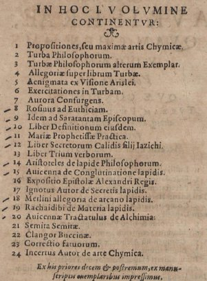
table des matières du vol. I de l'Artis auriferae
Vol.
i. After the
title comes the
address by
Peter Perna, the Basel printer, to the reader. Then
1.
Propositiones, seu maximae artis Chymicae.
2. Turba Philosophorum, p. 1.
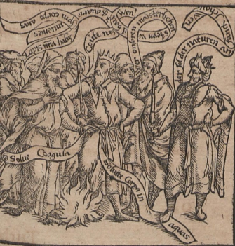
Turba philosophorum, frontispice
3. Turbae Pliilosophorum alterum Exemplar, p. 43
4. Allegoriae super librum Turbae, p. 89.
5. Aenigmata ex Visione Arislei, p. 94. & Exercitationes in Turbam, p. 99.
7. Aurora Consurgens, p. 110. [il s'agit en fait du commentaire au traité De Alchimia ou Liber Trinitatis, que l'on trouve dans Johannes Rhenanus, Harmoniae inperscrutabilis chymico-philosophicae sive Philosophorum antiquorum consentientium Decades duae, Francoforti, 1625 ; d'après M.-L. von Franz, l'Aurora consurgens est d'une autre main que ce texte, cf. Aurora consurgens, la Fontaine de pierre, p. 24, Paris, 1982 ; cf. supra sur Rhenanus et sur Aurora consurgens, notre essai]
8. Rosinus ad Euthiciam, p. 158.
9. Idem ad Saratantam Episcopum, p. 178.
10. Liber Definitionum eiusdem, p. 203.
11. Mariae Prophetissae Practica, p. 205.
12. Uber Secretorum Calidis filij Iazichi, p. 208.
13. Liber Trium Verborum Kallid, p. 226.
14. Aristoteles de lapide Philosophorum, p. 232.
15. Avicenna de Conglutinatione lapidis, p. 240.
16. Expositio Epistolae Alexandri Regis, p. 245.
17. Ignotus Autor de Secretis lapidis, p. 249.
18. Merlini allegoria de Arcano lapidis, p. 252.
19. Rachaidibi... de Materia lapidis, p. 255.
20. Avicennae Tractatulus de Alchimia, p. 260.
21. Semita Semitae, p. 280.
22. Clangor Buccinae p. 289.
23. Correctio fatuorum, p. 349.
24. Incertus Autor de Arte Chymica, p. 369.
Vol. ii.
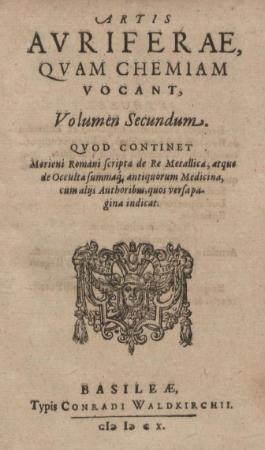
frontispice
du tome
II de l'Artis Auriferae, 1610
1.
Liber de compositione Alchemiae, quem edidit Morienus
Romanus, Calid
Regi Aegyptiorum: quem Robertus Castrensis de Arabico in
Latinum
transtulit, p. 3.
2.
Bernardi
Trevirensis responsio ad Thomam de Bononia de Mineralibus,
& Elixiris compositione, Roberti - - - -
Vallensis Tabulis
illustrata, p. 38.
3.
Liber de
Arte Chimia incerti Authoris nunquam hactenus in Lucem
editus. [Note.
— A tract of
similar name is in vol. i. There is no such tract in the
present volume.]
4.
Scala
philosophorum, p. 71.
5.
Ludus
puerorum (et Opus mulierum), p. 111.
6.
Rosarium
philosophorum (cum figuris), p. 133.
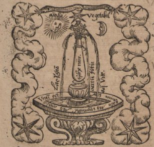
Rosarium, fons mercurialis
7.
Arnaldi Rosarium, p. 253.
Nouum
lumen, p. 298.
Flos
florum ad Regem Aragonum, p. 311.
Epistola
super Alchimia ad Regem Neapolitanum, p. 323.
8. Rogerius Bacho Anglus de mirabili Potestate artis et
naturae, p. 327.
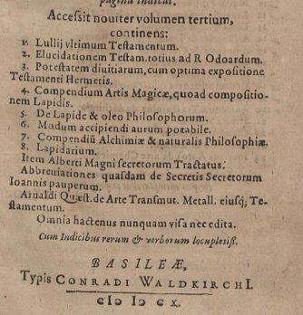
frontispice du tome
III de l'Artis Auriferae, 1610
1.
Lullij ultimum Testamentum.
2.
Elucidationem
Testam. totius ad R. Odoardum.
3.
Potestatem
diuitiarurn, cum optima expositione Testamenti
Hermetis.
4.
Compendium
Artis Magicae, quoad compositionem Lapidis,
5.
De Lapide
& oleo Philosophorum.
6.
Modum
accipiendi aurum potabile.
7.
Compendia
Alchimias & naturalis Philosophiae.
8.
Lapidarium.
Item
Alberti
Magni secretorum Tractatus.
Abbreviationes
quasdam
de Secretis Secretorum loannis pauperum.
Arnaldi
Quaest.
de Arte Transmut. Metall. eiusque; Testamentum.
Omnia
hactenus nunquam visa nec edita, Cum Indicibus rerum
et verborum
locupletiss.
Basileae, Typis Conradi Waldkirch. cIo Io.cx. 8°.
15.
Hermetisches A.B.C. deren
ächten Weisen alter und neuer
Zeiten vom Stein der Weisen. Ausgegeben von einem wahren
Gott und
Menschenfreunde. bey Christian
Ulrich Ringmacher,
Berlin. 1778-9. 318 + 348 + 299 + 325 pages.
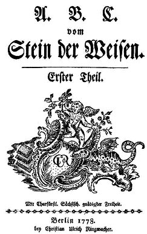
frontispice de l'Hermetisches A. B. C. -
Volume I.
1. Hermes. Die Smaragdtafel. p. 57
2. Samuel Baruch. Die Gabe Gottes. p. 61
3. Rabbi Abraham Eleazar. Schrift. p. 71

frontispice de l'Uraltes Chymisches Werk
[on retient deux titre d'Abraham Eleazar :
- R. Abrahami Eleazaris Uraltes Chymisches Werk, welches ehedessen von dem Autore theils in Lateinischer und Arabischer, theils auch in Chaldäischer und Syrischer Sprache geschrieben, nachmals von einem Anonymo inunsere deutsche Mutterepiache übersetzet, nun aber nebst zugehörigen Kupfern, Figuren, Gefäfsen, Oefen, einer kurzen Vorrede, nöthigen Registern, wie auch beygefügtein Schlüssel derer in selbigem vorkommenden fremden Wörter, ingleichen einigen philosophischen Regeln von dem Steine der Weisen zu Nutz und Gebrauch aller Liebhaber der edlen Hermetischen Philosophie, in II. Theilen zum offentlichen Druck befördert worden durch lulium Gervsium Schwartzburgicum, P. M. & I. P. E. Zweyte Auflage. Leipzig, in Lankischens Buchhandlung, 1760. 8°. Title, Preface, Letter signed L. N. Dobelius, Jan. 18, 1735, Verses. Abraham's address to the Jews, quotation from Lib. iv. Esrae, in all pp. [28]; Text, pp. 122; Register, pp. [14]. Frontispiece and 7 Engravings. Woodcuts in the text of apparatus and cabbalistic figures, expressing Hermetic secrets.
The second part has the following title-page :
- Donum Dei Samuelis Baruch, Des Juden Rabbi, Astrologi und Philosophi, gebohren aus dem Stamm Abrahams, Isaacs, Jacobs und Judä, welcher erlernet das grofse Geheimnifs des grofsen Meisters Tubalkains aus dessen Tabell, gefunden von Abrahamo Eleazare, dem Juden. I. N. U. CXI. 8°. Title, Short vocabulary of chemical words, with title and preface, pp. [14]. Text, pp. 104. Regitter, pp. [12]. 8 plates containing 15 symbolical designs; woodcuts of chemical apparatus in the text. This, though it has separate title, pagination and signatures, is printed uniformly with the preceding part, and is an integral portion of Abraham Eleazar's work, being referred to by Gervasrius in the preface to Part 1.]
Ferguson : An edition, most probably the first, was published by Augnstinus Crusius at Erfurt, In 1735. It contains in Part I.: pp. [30], dictionary [12], text, 122, index [14]; and in Part II.: title [2], text, 87; index, etc. [15]. The title is printed in red and black, and the impressions of the plates engraved by J. C. Boeck of Weimar are better than those in the 1760 issue. In one copy which I have seen, the dictionary is put after the preliminary matter in Part I., but in another copy it is placed at the very end of Part II. Among the preliminary matter the first edition has one leaf containing a list of 11 MSS. which Crusius had it in his mind to publish. Of these No. 6 is the tract of a certain LUDOVICUS ORVIUS (q.v.), to which Gervasius refers in his preface as alluding to Abraham Eleazar. This leaf is omitted in the second edition. The second edition, however, contains at the end of the second part, pp. 87-104, a series of 156 philosophical rules or canons respecting the philosopher's stone. This series is not in the first edition. (See PHILOSOPHISCHE Regeln.) In the preface Gervasius gives an account of the book which be says existed in MSS, only, eagerly sought after, but difficult to see and costly to copy, and he therefore had it printed. It was from the book of Abraham the Jew that Flamel gained his skill, and the work was used also by Orvius, above mentioned, and by the author of the CURIEUSE UNTERSUCHUNG etlicher Mineralien (q.v.). He tries to ascertain the date at which Abraham Eleazar may have flourished, and the probable truth of the statement that he drew the 'principia' of the art from the copper tables of Tubal-Cain, who transmitted his secrets to posterity both by writing and by symbolic pictures as well. Gervasius, naturally, supports the truth of this statement, and proves, as he thinks, that Tubal - Cain was the first engraver, metallurgist, and chemist. In the second part there are several references to these copper tables. Of Abraham Eleazar, Samuel Baruch, and even Gervasius himself, nothing seems to be known. The main question is as to the authenticity of the book, and it has to be proved that it is identical with that described by Flamel, and not a later production written to suit Flamel's description. There is a certain similarity, especially in the symbolic pictures, which can be accounted for in either way, but when it is remembered how much doubt hangs round the whole Flamel legend, the second explanation is the more probable. Dr. Kopp (Die Alchemie, 1886, ii. pp. 314-317) has given the work careful consideration, and from internal evidence, has drawn the conclusion that the book is spurious, that Abraham Eleazar and Samuel Baruch are supposititious personages, that Gervasius is the pseudonym of the real author, and that the work is later than Flamel. and not earlier than the seventeenth century. While this is most likely the correct conclusion as to the book in its present form, Gervasius may, however, have based his adaptation on some old MSS., if he did not actually reprint one, as he professes to have done. There is a drawing of the massacre of the innocents, evidently symbolical, from the " book of Abraham the Jew" in the Library of the Arsenal, Paris, given by Lacroix in Le Moyen Age et la Renaissance, Paris, 1848, i. Art. vii., and again by Lacroix [il s'agit de Paul Lacroix (1806-1884) qui est l'auteur d'une Curiosité des Sciences Occultes où 100 pages sont consacrées à l'alchimie, Paris, A. Delahays, 1862] In Moeurs, Usages et Costumes au Moyen Age, Paris, 1871, p. 465. This drawing is a more elaborate version of the same scene which is given both in Abraham Eleazar's and in Flamel's works (q.v.). Without an examination, therefore, of such MSS. as may exist, I should not like to assert unhesitatingly that Gervasius was the author, and did not actually reprint a MS. in whole or in part. Such MSS. were known to Lenglet Dufresnoy (Hist. de la Philosophie Hermétique, 1742, iii. p. 79), and probably some are still to be found both in public and in private libraries.
4. Nodus sophicus enodatus. p. 73
5. Kinderbett des Steins der Weisen. p. 86
6. M. Barcius, Johann von Sternberg. Gloria Mundi, Kleine Paradeis-Tafel. p. 95
7. Johann Grashofer, Chortolasseus genannt, Schriften; Geheimnisse des grossen und kleinen Bauers; Cabala Chemica. p. 121
8. Johann Siebmacher aus Nürnberg. Güldenes Vlies. p. 145
9. Johann Siebmacher aus Nürnberg. Wasserstein der Weisen. p. 156
10. Johann Friedrich Hautnorthon. Tractat vom philosophischen Salze. p. 157
11. Leona Constantia (Johanna Leade). Sonnenblume der Weisen. p. 172
12. Radtichs Brotoffer. Elucidarius maior. p. 176
13. Alexander von Suchten. Explicatio Tincturae Physicorum Theophrasti Paracelsi. p. 195
14. Alexander von Suchten. De tribus Facultatibus. p. 214
15. De Nuysement. Vom wahren Salz der Weisen und dem Allgemeinen Geist der Welt. p. 230
16. Antonio de Abbatia. Bericht von Verwandlung der Metallen. p. 261
17. Aufrichtig deutscher Wegweiser zum Lichte der Natur. p. 263
18. Laurentius Ventura Venetus. De Lapide Philosophorum. p. 268
19. Johann von Padua. Vollendete Heilige Weisheit. p. 283
20. Marsilius Ficinus. Büchlein vom Stein der Weisen. p. 294
21. John Dausten. Rosarium vom Stein der Weisen. p. 300
22. Hermes. Güldener Tractat von Zusammensetzung des Steins der Weisen. p. 311
23. Raymundus Lullius. Apertorium de Compositione Lapidis Philosophorum. p. 312
24. Raymundus Lullius. Elucidarius über sein Testament und Codicill. p. 315
25. Aristoteles. Alchymische Schrift an Alexandrum Magnum, de Lapide Philosophorum. p. 316
Volume II.
1. P. Spiess. Concordanz über das Nuysement Sal coeleste. p. 15
2. Benedict Gutwasser. Aufrichtig Chemisches Glaubens-Bekenntniss. p. 41
3. Das philosophische Vaterherz. p. 56
4. Amor Proximi. p. 72
5. Das aus der Finsterniss von sich selbst hervor-brechende Licht. p. 106
6. Fama mystica hermetica. p. 163
7. Der rechte Weg zur hermetischen Kunst. p. 175
8. Sendivogius. Die geheime Naturlehre. p. 193
9. Georg von Welling. Opus mago-cabalisticum et theosophicum. p. 231
10. Franc. Sebast. Fulvus. Melvolodemet, of Pisa. Non plus ultra Veritatis, Untersuchung der hermetischen Wissenschaft. p. 269
11. D.M. -- 3 Tractätlein. p. 288
12. Ben Adam. Traum-Gesicht, zur Zeit der regierung Ruacharetz, Königs von Adama, von Floretus a Bethabor and den Tag gegeben. p. 296
13. Das hermaphroditische Sonn- und Monds-Kind. p. 301
Volume III.
1. Der uralte Ritterkrieg, und hermetische Triumph. p. 15
2. Henry Vanghan [Thomas Vaughan] gennant Eugenius Philaletha: Eröfneter Eingang zu des Königs verschlossnem Pallast. p. 73
3. [Thomas Vaughan] Von Verwandlung der Metallle. p. 78
4. [Thomas Vaughan] Kurze Anleitung zum himmlischen Rubin. p. 80
5. [Thomas Vaughan] Brunn der Chemischen Wissenschaft. p. 83
6. [Thomas Vaughan] Magia Adamica, Alterthumb der Weisheit oder Himmel der Erde. p. 86
7. [Thomas Vaughan] Antroposophia Magica. p. 115
8. [Thomas Vaughan] Anima magica abscondita. p. 122
9. [Thomas Vaughan] Euphrates, die Wasser von Aufgang. p. 134
10. [Thomas Vaughan] Lumen de Lumine, neues magisches Licht. p. 151
11. [Thomas Vaughan] Aula Lucis, Hauss des Lichts. p. 177
12. Aus Peter Steiners Handschrift von der Universal-Materie. p. 189
13. Aus Nedeganders kurzer Anleitung zum Naturgeheimniss. p. 203
14. Aus der güldenen Rose: durch I.R.V.M.D. p. 207
15. Aus dem Gespräch zwischen dem Saturn der Weisen, und einem Chemisten. p. 209
16. Aus Jamsthalers Gedicht vom Stein der Weisen. p. 213
17. Aus dem Gedicht der ächten Rosenkreuzer. p. 214
18. Aus dem Lehrsätzen von der Weisen Steine. p. 216
19. Aus dem Aria von der Weisen Stein. p. 217
20. Aus dem Brunn der Weisheit. p. 218
21. Aus dem Blut der Natur. p. 225
22. Aus Fictulds Azoth et Ignis. p. 252
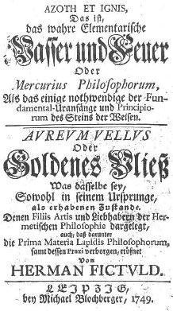
frontispice de deux traités de Herman Fictuld : Azoth Et Ignis, Aureum Vellus, Blodsberger, 1749
Ferguson : Nothing is recorded about Fictuld's life, but his name and works are familiar to most writers on the subject, and the Probier-Stein is sometimes quoted and recommended as an authority, which it is not. Doubtless some of the information be gives in it is correct, but he has made such erroneous statemeats in matters which can be checked, that he is quite unreliable in those where no check can be applied. Besides the above works he himself enumerates: ' Gespräcb zwischen dem König Mascos und seiner Schwester Agos' appended to Das edle Perlein (q.v.); ' Hermetischer Triumph-Bogen &c. nemlich, Cabbala mystica naturae, und Occulta occultissime.' According to Kopp (Dis Alchemie, 1886. ii. p. 367) the person who printed under the pseudonym of Fictuld was really called Johann Heinrich Schmidt von Sonnenberg, who is not to be confused with Johann Georg Schmid (q.v.}. But in the HERMETISCHES A. B. C., 1779, ii. p. 72, the Probier-Stein is ascribed to a Baron Meinstoff; without taking any notice of Fictuld. Which of these is correct I am unable to say. See also HERMETISCHES A. B. C., 1770, iv. p. 39. There is still another version. It if said that he was a native of Langenthal, and that his real name was Mummenthaler, that he had travelled much and seen much, but that he was certainly not an adept Count Franciscus Onuphrio de Marsciano gave him a copy of bis book in 1764. Fictuld died in 1777, in the seventy-eighth year of his age. Semler was of opinion that he did not err on the side of modesty, and points out that his name HerMann FICtVLD is a chronogram for 1656, but he does not deduce anything from the fact, if It were intentional.
23. Aus Fictulds Aureum Vellus, goldenem Vliess. p. 263
24. Aus Fictulds Hermetica Victoria. p. 271
25. Aus Fictulds Abhandlung von der Gewissheit der Alchemie. p. 288
Volume IV.
l. Aus Fictulds Turba Philosophorum. p. 15
2. Aus der fürstlichen Rose von Jericho, oder Moses Testament. p. 39
3. Aus Elias Artista Geheimnis vom Salze. p. 47
4. Einzehne Zeugnisse aus Fictulds Probiersteine. p. 71
5. Aus Johann Ferdinand von Freydau Sendschreiben. p. 75
6. Aus desselben Licht des Lichts. p. 95
7. Aus Leonhards delarvatione Tincturae Philosophorum. p. 122
8. Aus v. Loen Geheimniss der Verwesung und Verbrennung aller Dinge. p. 137
9. Aus dem mikrokosmischen Vorspiel eines neuen Himmels und der neuen Erde. p. 167
10. Aus des Grafen Marsciano Sendschreiben und hermetischen Untersuchung. p. 202
16. Vigilantus de MONTE CUBITI. Dreyfaches Hermetisches Kleeblat, in welchem begriffen dreyer vornehmen Philosophorum herrliche Tractätlein. Das erste von dem geheimen waaren Saltz der Philosophorum, und allgemeinen Geist der Welt, H. Nuysement aus Lothringen. Das andere Mercurius Redivivus Unterricht von dem Philosophischen Stein so wol den weisen als rohten aus dem Mercurio zu machen, Samuelis Nortoni sonsten Rinville. Und das dritte von den Stein der Weisen Marsilii Ficini Florentini, welche ehedessen von denen Authoribus in Frantzösischer und Lateinischer Sprach beschrieben, nunmehro aber allen Liebhabern, so der Lateinischen Sprach unkündig, zum besten, in unser Teutsche Muttersprach übersetzet, und mit einem zweyfachen Register zum Druck verfertiget. Durch Vigilantium de Monte Cubiti. Nürnberg, In Verlegung Michael und Johann Friderich Endtern, 1667.

l'une des gravures de Dreyfaches Hermetisches Kleeblat
8°. Pp. [24, engraved title containing emblematica sorrel included] 448. Index [32]. 16 symbolic engravings. Nuysement, p. 1; Norton, p. 209; Ficinus, p. 373. Herrn de Nuysement Tractat von dem waaren geheimen Saltz der Philosophorum, und von dem allgemeinem (sic) Geist der Welt. Zu eigäntzung dei lang-begehrten dritten Principii, Michaëlis Sendivogii, welches er vom Saltze verbeissen hat.
Mercurius Redivivus oder Unterricht, wie man den Philosophischen Stein, sowol den weissen, als den rohten, aus dem Mercurio machen solle. Erstlich von weiland Samuele Nortono, sonsten Rinvillo Briszollensi angefangen. Nachmals mit Fleifs verbessert und vermehret, durch Edmundum Deanum von Oxonien, Doctorem der Artzney, zu Eborach in Engelland. Nunmehr aber wegen seiner grossen Nutzbarkeit dieser Kunst Liebhabern, die der Lateinischen Sprach unkündig sind, zum besten aufs fleissigste in die Teutsche Muttersprach versetzet worden. Bey welchem Ttractätlein (sic) zu finden, wie man beede Fermenta, so wol zum weisen, aus der Luna oder dem Silber, als zum robten aus Sole oder dem Golde machen solle.
This is in eight books, each of which has a short title in Latin and German [les n° se rapportent aux illustrations et une mention spéciale doit être apportée au n°3 d' l'Alchymiae dont nous développons le sens dans le commentaire de l'Aurora Consurgens, à propos des Essais sur la symbolique de l'Esprit de Jung. L'ensemble de ces écrits apparaît sous forme d'un volume de huit petits traités en latin, imprimés à Francfort en 1630 par William Fitzer sous le titre de Mercurius redivivus. Une version en allemand est incluse aussi dans la compilation Eines wahren Adepti besondere Geheimnisse von der Alchymie, 1757. On notera que le n°4 du Venus Vitriolata n'est autre que le n°1 du Mercurius Redivivus : ]:
1. Herrn de Nuysement Tractat von dem waaren geheimen Saltz der Philosophorum, und von dem allgemeinem Geist der Welt. Zu ergäntzung des lang-begehrten dritten Principii, Michaelis Sendivogii, welches er vom Saltze verheissen hat. p. 1

frontispice du Traité de l'Harmonie et du Sel de Nuisement
2. Mercurius Redivivus oder Unterricht, wie man den Philosophischen Stein, sowol den weissen, als den rohten, aus dem Mercurio machen solle. Erstlich von weiland Samuele Nortono, sonsten Rinvillo Briszollensi angefangen. p. 209
a. Mercurius redivivus, seu Modus conficiendi lapidem philosophicum tàm album quàm rubeum è mercurio : 1 - 2 - 3 - 4 - 5 - p. 211 ;
b. Catholicon physicorum, seu Modus conficiendi tincturam physicam & alchymicam : 1, 2, 3 - p. 231 ;
c. Venus vitriolata, in elixer conuersa, nec non Mars victoriosus, seu Elixerizatus, siuè Modus conficiendi lapidem philosophicum tàm è enere, siuè cupro, quàm à Marte, siuè Chalybe : 1, 2, 3, 4 - p. 247 ;
d. Elixer, seu medicina vitae, seu Modus conficiendi verum aurum, et argentum potabile : 1 , p. 263 ;
e. Saturnus saturatus dissolutus, et coelo restitutus, seu Modus componendi lapidem philosophicum tam album, quam rubeum à plumbo, ac etiam eadem / olim a Samuele Nortono ... inchoatus ; nunc vero edente Edmundi Deani ... auctus, illustratus & perfectus : 1, 2, 3 , p. 283 ;
f. Metamorphosis lapidum ignobilium in gemmas quasdam pretiosas, sev Modus transformandi perlas parvas, et minutulas, in magnas & nobiles, p. 313 ;
g. Alchymiae complementum et perfectio sev Modus et processus augumentandi, sive multiplicandi omnes lapides & elixera in virtute : 1, 2, 3 - p. 329 ;
h. Auslegung der duncklen Wörter, Namen and seltzamen Reden, so in dieser Kunst geführet werden, [Tractatulus de antiquorum scriptorum considerationibus in alchymia] p. 355 ;
3. Marsilii Ficini Büchlein vom Stein der Weisen, erstlich von dem Authore selbsten in Lateinischer Sprach beschrieben, anjetzo aber allen Leibhabern und des Lateins unkündigen zulieb in die Teutsche Muttersprach übersetzet. p. 373
Ferguson: The name of the present editor appears in Lenglet Dufresnoy's list, with an inaccurate and ignorant transcription of the title; it is given by Gmelin; by Ladrague, and by Kopp, but nothing to said as to the true name of the editor. Deane's or Norton's tracts were reprinted a Dresden, in 1757, under the title Eines wahren Adepti besondere Geheimnisse von der Alchymie. See under H. (C.G,).
Samuel Norton was the son of Sir George Norton and great-grandson of Thomas Norton (q.v.). He was born in 1548, studied at St. John's College, Cambridge, and in 1584 succeeded to bis father's estate of Abbots Leigh in Somerset. He occupied several public positions, and died about 1604. The notice given by Jöcher is erroneous. He has put Brüssel for Bristol ! His works were edited by Edmund Dean or Deane, who, as Wood informs us, was son of Gilbert Deane of Saltonstall in Yorkshire, and brother of Richard, Bishop of Ossory, and was born In Yorkshire. In 1591 he entered Merton College, Oxford, in his nineteenth year, took a degree in Arts, retired to St. Allan's Hall, studied medicine and graduated in it, returned to York, and practised there. He wrote: Spadacrene Anglica or the English Spaw, being a brief Treatise ot the acid or tart Fountain in the Forest of Knaresborough in Yorkshire, London, 1626. Some, who have referred to Norton, seem to think that only ' Mercurius redivivus,' and perhaps one or two others, were edited by Deane, but it is plain from the preceding that he had the whole set through his hands, and it even looks as if he not only edited Norton's tracts but had completed them, for what else can be understood, by the expression 'inchoatus' as applied to Norton's share in them? Some have gone the length of ascribing them to Deane entirely, while Schmieder, who is never at a loss for a bold, not to say a reckless, suggestion, calmly states that Deane was a name assumed by Norton ! Deane speaks in high terms of Norton, and compares him to Cabot, another Bristolian. [Samuel Norton ne doit pas être confondu avec Thomas Norton et Josaphat Friedreich Hautnorthon, cf. l'Enfant hermaphrodite du Soleil et de la Lune.]
[on compte de fait plusieurs ouvrages édités par Edmund Deane ; les n° se rapportent aux illustrations et une mention spéciale doit être apportée au n°3 d' l'Alchymiae dont nous développons le sens dans le commentaire de l'Aurora Consurgens, à propos des Essais sur la symbolique de l'Esprit de Jung. L'ensemble de ces écrits apparaît sous forme d'un volume de huit petits traités en latin, imprimés à Francfort en 1630 par William Fitzer sous le titre de Mercurius redivivus. Une version en allemand est incluse aussi dans la compilation Eines wahren Adepti besondere Geheimnisse von der Alchymie, 1757.. On notera que le n°4 du Venus Vitriolata n'est autre que le n°1 du Mercurius Redivivus :
17. Deutsches theatrum chemicum, auf welchem der berühmtesten Philosophen und Alchymisten Schrifften, die von dem Stein der Weisen, von Verwandlung der schlechten Metalle in bessere, von Kräutern, von Thieren, von Gesundund Sauer-Brunnen, von warmen Bädern, von herrlichen Artzneyen und von andern grossen Geheimnüssen der Natur handeln, welche bisshero entweder niemahls gedruckt, oder doch sonsten sehr rar worden sind, vorgestellet werden durch Friederich Roth-Scholtzen. Felsecker, Nürnberg. 1728-30.
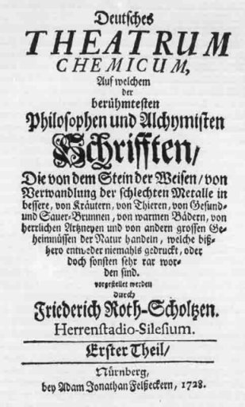
frontispice du Deutsches Theatrum Chemicum de Friederich Roth-Scholz, 1728
Volume 1.
1. Iohann. Franc. Buddei, Untersuchung von der Alchemie.
2. Georg Phillip Nenters, Bericht von der Alchemie.
3. Wilhelm, Freyherrn von Schröderns, Unterricht vom Goldmachen.
4. Treuhertzige Warnungs-Vermahnung an alle Liebhaber der wahren Natur gemesen Alchemiae Transmutatoriae von einem Liebhaber der Wahrheit aufgesetzt.
5. Leonhard Müllners, Grundlicher Bericht von der Generation und Geburt der Metallen.
6. Bericht von der Generation und Regeneration der Metallen.
7. Iosaphat Friedrich Hautnorthons, oder Johann Harprechts, dritter Anfang der Mineralischen Dinge, vom Philosophischen Saltz.
8. Chrysogoni de Puris, Pontische oder Mercurial-Wasser der Weisen.
9. Eugenii Philalethae, Euphrates oder die Wasser vom Aufgang.
10. Iohann. Friedrich Helvetii, guldenes Kalb. [Vitulus Aureus : cf. Musaeum Hermeticum, 20 et Bibliotheca Curiosa Chemica, vol. I, 9 ]
11. Iohann Pordaedsche, Philosophisches Send-Schreiben vom Stein der Weisheit.
12. Iohannis de Monte Raphaim Vorbothe der am Philosophischen Himmel hervor brechenden Morgenröthe.
13. Fr. Basilii Valentini, Triumph-Wagen des Antimonii, mit Theodori Kerckringii Anmerckungen. Deme noch vorgesetzet Hrn. D. Georg Wolffgang Wedels, berühmten Professoris zu Jena An. 1704. in einem Programmate vom Basilio Valentino ertheilte Nachricht und Recommendation.
Volume 2.
14. Bened. Nicolai Petraei, Critique über die Alchymistischen Schrifften.
15. Bedencken über die Frage, ob die Transmutatio Metallorum möglich sey.
16. Responsum einer berühmten Juristen-Facultät: da sich ein Ehemann belehren lässet: Ob ihm das seiner Frauen in Gold transmutirte silberne Gefässe nicht zukomme? oder doch wenigstens der usus fructus davon?
17. Julii Sperberi, Isagoge, d.i. Einleitung zur wahren Erkänntnuss des Drey-einigen Gottes und der Natur. Worinnen auch viele vortreffliche Dinge von der Materia des Philosophischen Steins enthalten sind.
18. Pantaleonis, Tumulus Hermetis Apertus: oder: das eröffnete Hermetische Grab.
19. Pantaleonis Examen Alchymisticum, oder: Alchymistische Prüffung.
20. Pantaleonis Bifolium Metallicum, das ist: Metallisches Zweyblat.
21. Joel Langellotts, Send-Schreiben von der Chymie; samt der Philosophischen Mühle in Kupffer gestochen.
22. Johann Heinrich Rudolffs, Unterricht von der Amalgamation.
23. Johann Heinrich Rudolffs, Extra-Ordinair Bergwerck, durch die Amalgamation mit Quecksilber.
24. Johannis Garlandii, seu Hortulani, Compendium Alchimiae, oder Erklärung der Smaragdischen Tafel Hermetis Trismegisti.
25. Tabula Smaragdina Hermetis.
26. M. Arnoldi de Villanova Erklärung über den Commentarium Hortulani.
27. Send-Schreiben von der Vortrefflichkeit der Chymischen Schrifften Petri Joh. Fabri.
28. Bartholomaei Korndorffers Beschreibung der Edelgesteine.
29. D. Joh. Joachim Bechers Oedipus Chymicus, oder Chymischer Rätseldeuter.
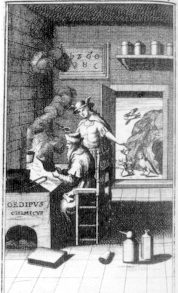
30. Joannes d'Espagnets geheime Werck der Hermetischen Philosophie.
Volume 3.
31. Rogerii Baconis, Chymisch- und Philosophische Schrifften... Nebst einer Vorrede, darinnen von dem Leben und Schrifften Rogerii Baconis Nachricht gegeben wird.
32. Rogerii Baconis, Radix Mundi, oder Wurtzel der Welt, verdeutscht nach dem Englischen von William Salmon.
33. Rogerii Baconis, Medulla Alchimiae, darinnen vom Stein der Weisen, und von der vornehmsten Tincturen des Goldes, Vitriols und Antimonii, gehandelt wird. Item eine Alchymische Epistel, so Alexandro zugeschrieben worden. Vormals durch Joachim Tanckium... Nun aber, durch Friederich Roth-Scholtzen... publiciret...
34. Rogerii Baconis, Spiegel der Alchemie.
35. Rogerii Baconis, Tractat vom Golde, oder gründlicher Bericht von der Bereitung des Philosophischen Steins, so aus dem Golde gemacht wird.
36. Rogerii Baconis, Tractat von der Tinctur und Oel des Vitriols.
37. Rogerii Baconis, Tractat von der Tinctur und Oel des Antimonii, von der wahren und rechten Bereitung des Spiessglases, menschliche Schwach-heiten und Kranckheiten dadurch zu heilen, und die imperfecten Metallen in Verbesseerung zu setzen.
38. Epistel oder Send-Brief des Kayser Alexandri, welcher zu erst in Griechenland und Macedonian regieret hat, auch ein Kayser der Persianer gewesen: Darinnen der Stein der Weisen durch ein Gleichnüss und Parabel sehr lustig und wohl beschrieben erkläret wird.
39. Rogerii Baconis, Angli, Send-Schreiben von geheimen Würckungen der Kunst und der Natur, und von der Nichtigkeit der falschen Magiae.
40. Rogerii Baconis, Epistola de secretis operibus Artis & Naturae, & de nullitate Magiae. Opera Johannis Dee... e pluribus exemplaribus castigata olim, & ad sensum integrum restituta (in Latin).
41. Responsum ad Fratres Rosaceae Crucis illustres (in Latin).
42. Gloria Mundi, sonsten Paradeiss-Tafel.
43. Ein ander Tractätlein gleiches Innhalts mit dem vorigen.
44. Alethophili Philosophische Betrachtung von Verwandelung der Metallen.
45. Warnungs-Vorrede wider die Betrüger, welche ein Anonymus A. 1670 und A. 1691 in Hamburg des Johannis Ticinensis, Anthonii de Abbatia und Eduardi Kellaei Chymischen Schrifften vorgesetzet hat.
46. Johannis Ticinensis, Chymische Schrifften; oder Process vom Stein der Weisen.
47. Anthonii de Abbatia, ausgefertigtes Send-Schreiben von dem Stein der Weisen, und von Verwandelung der Metallen.
48. Anthonii de Abbatia Epistolae duae, scrutatoribus artis Chymicae mandatae. Accessit Arcanum a quodam Philosopho Anonymo deductum (in Latin).
49. Eduardi Kellaei, Buch von dem Stein der Weisen... Nun aber nebst einer Vorrede von dem Leben und Schrifften Kelläi zum Druck befordert.
50. Fragmenta quaedam Edu. Kellaei ex ipsius Epistolis excerpta.
51. Eduardi Kellaei, Via Humida, sive Discursus de Menstruo Vegetabili Saturni (in Latin).
52. Aula Lucis, oder: das Hauss des Lichts durch S.
18. ARS CHEMICA, quod sit licita recte exercentibus, probationes doctissimorum lurisconsultorum. Septem Tractatus seu Capitula Hermetis Trismegisti, aurei. Eiusdem Tabula Smaragdina, in ipsius sepulchro inuenta, cum commento Hortulani Philosophi. Studium Consilii Coniugij de massa Solis & Lunae. Opvscula, studiosis arts secretissimae, ut sumrnè necessaria, ita lectu iucundissima. Antehac typis non excusa.
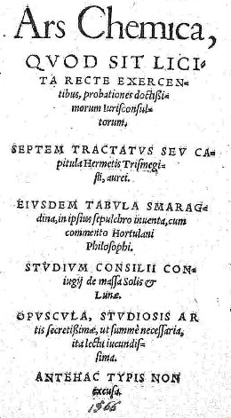
frontispice de l'Ars Chemica, Strasbourg, 1566
8°. Pp. 263. After the title comes a vindication of Alchemy, pp. 3-6 ; Hermes, pp. 7-31; Tabula Smaragdina, pp. 32-.3; Hortulanos, pp. 33-47; Studium Consilii Conjugii . . . pp. 48-263. Colophon: Argentorati excudebat Samuel Emmel. Anno M.D.CXVI.
19. Ginæceum chimicum; seu, congeries plurium anthorum qui in artem hermeticam de lapide philosophico scriptserunt, quorum tractatus nec in Theatro, aut alio volumine usque adhuc simul impressi fuerunt... Volumen primum. 8° Lugduni: Jean de Trevis 1679
pp. [4] 727 [1 blank]
1. Geber, Summa perfectionis magisterii. p. 1
2. Geber, Liber investigationis. p. 164
3. Georgius Horn, Medulla Alchimiae in aphorismos contracta ex Gebro desumpta. p. 179
4. Joannes Braceschus, De alchemia dialogi duo: Prior Gebri sensum explicans. p. 212
5. Alter lignum vitae nominatus, Raimundi doctrinam, & misteria occulta artis pandens. p. 332
6. Brevis libellus minera philosophorum dictus. p. 349
7. Libellus alter, sive restrictus theoricus, Radius ab Umbra vocatus cum eiusdem authoris brevi dialogo. p. 368
8. Oliverius de Oliveriis, Tractatus duo, Unus de lapide philosophico conficiendo, Alter de auro potabili. p. 415
9. Panthaleon, Bifolium metallicum, sive medecina duplex pro metallis & hominibus. p. 453
10. Joannes Belye, Tractatus singularis chimicus. p. 495
11. Bernardus Trevirensis, Tractatus de lapide philosophorum. p. 503
12. Quibus appendicis loco accessit:
H. Aquilae Thuringi ex Manuscripto doctrina. p. 510
Ex Epistola Eduardi Kellaei. p. 512
Fragmentum ex Theoriis Joannis Isaaci Hollandi. p. 513
13. Liber de principiis naturalibus, & principiis artis. p. 517
[Cet ouvrage est contenu dans deux autres complilations sous le titre de : Aureus Liber de principiis Naturae et Artis, woraufs die Wissenschafft der Primae Materiae erkennet, und das Universale Generalissimum Philosophorum erlanget werden möge, cf. Der Hermetische Philosophus, 1709, p. 1 et Hermetisches Museum, 1785, iii, p. 151]
14. Joannes Dausten, Visio in Chimicam. p. 548
15. Avicenna, De mineralibus liber parvus. p. 554
16. Alexander Rex, Epistola abditam Philosophici lapidis compositionem declarans. p. 561
17. Opusculum philosophici lapidis secreta methaphorice describens. p. 566
18. Merlinus Allegoria profundissimum Lapidis arcanum perfecte continens. p. 569
19. Recaidib, Veradianus, Rhodianus, & Khalid Rex Persarum: Fragmentum de Materia Phisici Lapidis. p. 573
20. Lux obnubilata suapte natura refulgens: vera de lapide Philosophico Theorico, pars prima. p. 579
20. De Alchimia opuscula complura veterum philosophorum quorum catalogum sequens pagella indicabit ... 2 partes in 1... Rosarium philosophorum. Secunda pars alchimiæ de lapide philosophico vero modo præparando...Iacobus, Frankfurt. 1550. 168 + 96 folios.
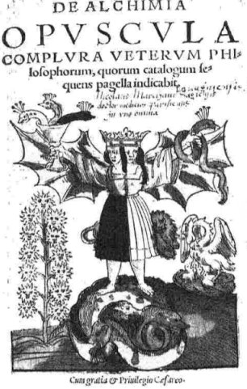
frontispice du De Alchimia Opuscula Complura
[notez que l'image est remployée pour partie de la 11e figure et surtout de la 18e figure du Rosarium Philosophorium]
First part
1. Correctio Fatuorum. f. 1
2. Clangor Buccinæ. f. 19
3. Semita Semitæ. f. 69
4. Avicenna : De tinctura metallorum. f. 75
5. Raimundus (Lullius) : Compendium animæ transmutationis. f. 92
6. Scala Philosophorum. f. 101
7. Opus mulierum, Tractatulus, sive ludus puerorum. f. 135
8. Raimundus Lullius : De Tincturis compendium, seu Vade Mecum. f. 153
9. Aristoteles : Tractatulus de Practica lapidis Philosophici. f. 162
[une main a ajouté : X. Rosarium Philosophorum cum figuris - XI. Alchymia Gebri cum figuris - XII. Rogerij Bachonis Speculum Alchimiae. Cf. 2 et 2 bis -]
Second part
Rosarium philosophorum.
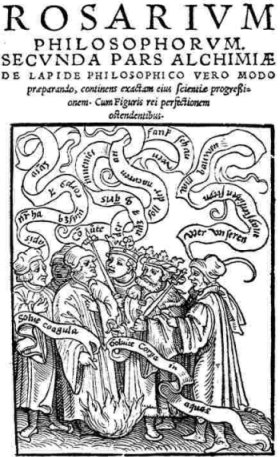
frontispice du Rosarium Philosophorum, Francoforti, Cyriaci Iacobi, 1550
Ferguson : The 'Rosarium Philosophorum' describes the preparation of the 'stone ' in a series of chapters or sections, each having a symbolic picture, most of them accompanied by explanatory verses In German, and Illustrated by parallel passages from the leading authorities so that the whole forms a' Rosary of selected blossoms. It was a favourite work, and copies in manuscript are not uncommon, sometimes with the pictures coloured. Besides the German version of Morgenstem, there is a translation in French, which, so for as I know, was not printed, but of which I have seen a copy in manuscript with the pictures finely executed with pen and ink. Schmiederf (p. 236) refers to a 'Rosarius' in French, by George Aurach, which he seems to think is different from the above ' Rosarium,' but, from his description, it is apparently merely a French translation of it and not an original work, and is the same as that just mentioned, in which manuscript, however, Aurach's name does not occur. The 'Rosarium Philosophorum' is sometimes called 'magnum,' to distinguish it from the 'Rosarius' of Arnaldus, which is different and which contains no pictures [cf. Sommaire du Rosaire par Lacidius, in Verae Alchimiae de Gratarole]. From both of these again is to be distinguished the 'Rosarius Minor. [figure dans l'Alchemia de 1541, p. 309, dans le Theatrum Chemicum, 1659, ii, p. 466 et aussi dans le Verae Alchimiae de Gratarole, 1561, i, p. 222]' This tract, having been once ascribed to Richardus Anglicus by Borel, has continued to be called his by Gmelin, Schmieder, and Kopp. This, however, is inaccurate, for in the very first issue of the tract, that of 1541, and in the subsequent reprints, the author is said to be doubtful : Rosarius Minor . . . Incerti quidem, sed harum tamen rerum non imperiti authoris.' [inséré dans le De Alchimia] Naxari (Della Tramutatione Metallica Segni tre 1599, p. 143) quotes a 'Rosarius philos.' and a 'Rosarius maior,' but from such imperfect titles it is impossible to draw any conclusions as to the writings he intended.
illustrations tirées du Rosarium Philosophorum : 1 - 2 - 3 - 4 - 5 - 6 - 7 - 8 - 9 - 10 - 11 - 12 - 13 - 14 - 15 - 16 - 17 - 18 - 19 - 20 - 21 - [la version que possède l'UCM de Madrid est annotée d'une main française]
21. Medicina Practica:
or,
Practical Physick. Shewing The Method of
Curing the most Usual Diseases happening to Human
Bodies... To which is
added, The philosophick Works of Hermes Trismegistus,
Kalid Persicus,
Geber Arabs, Artefius Longævus, Nicholas Flammel, Roger
Bachon,
and
George Ripley. All Translated out of The best Latin
Editions, into
English; and Carefully Claused, or divided into Chapters,
and Sections,
for the Pleasant Reading, and easier Understanding of
those Authors.
Together with a singular comment upon the first book of
Hermes, the
most Ancient of Philosophers. The whole Compleated in
Three Books. By
William Salmon, Professor of Physick... 8° London: Printed
by W.
Bonny, for Tho. Howkins and John Harris 1692
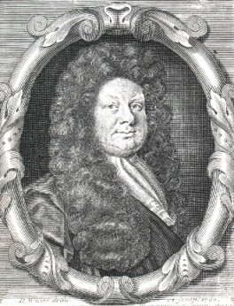
portrait de William Salmon (1644-1713) par R. White
Ferguson
: William Salmon was born a June, 1644, according to the
portrait in
his ' Ars Anatomica,' but that prefixed to the fifth edition
of the
Polygraphice, 1685, states that he
was in his 27th year in 1675, which would imply that be was
born in
1648. There is no reliable information as to his early life
and
education, or as to bow be became a doctor, whether licensed
or
unlicensed. He travelled, and then settled in London, where
be engaged
In the form of medical practice common at the time,
including
astrology, preparation of secret remedies and alchemy. He
wrote a great
deal on medical topics, and compiled works on botany, the
pharmacopoeia, and anatomy, medical and chirurgical
observations, and
the above collection of alchemists. He took part also in the
controversy about the dispensaries and wrote a ' Rebuke to
the authors
of a Blew-Book; . . . written In Behalf of the Apothecaries
and
Chirurgians of the City of London.' London, 1698, 8°. pp.
32.
He resided at various places in London, indications of which
can be
gathered from his books. Thus in 1671 be had his abode in
Smithfield,
near St. Bartholomew's Hospital, in 1681 his dwelling was at
the Red
Balls in Salisbury Court, off Fleet Street. In 1685 he was
'Professor
of Physick, living at the Blew Balcony by FIeet-Ditch, near
Holborn-Bridge,' or 'at the Blew Balcony by the Ditch-side
near
Holbourn-.bridge.' In 1692, the name of his house seems to
have been
changed, for be was then ' living at the Blue-Ball by the
Ditch-side,
near Holborn Bridge.' On 34 Oct., 1700, he dates the eighth
edition of
the Potygraphice from his house 'at Black-Fryers
Stairs,' and in
the Rebuke he is ' living near Black-Fryers Stairs. Some of
his books
went through a good number of editions notwithstanding the
despite
shown him by some of bis contemporaries, as by James Younge,
and one of
the most popular was his Polygraphice, a collection of
receipts on the
fine and practical arts, first published In 1672. Of this
book there
were numerous editions, of some of which I have given
details
elsewhere. The second edition in four books appeared in
1073. the fifth
in seven books, in 1685, with a badly -executed portrait
signed: W.
Sherwin ad vitam sculpt.,' the eighth, much enlarged, in
1701, with a
characteristic portrait signed: M. v. Gucht, Sculpt. Salmon
died in
1713. If one may
judge by bis library Salmon must have been a man of
erudition, and of
wide and liberal tastes; he must also have been a
thorough-going
bibliophile and possessed of means sufficient to gratify his
acquisitiveness. Part of bis library was sold, and from the
auction
catalogue of it, one gathers a clear notion of its contents.
It is
arranged according to size, and broadly according to
subject, and the
catalogue was drawn up by Thomas Balland The tide-page gives
the best
idea of how the collection was regarded:
'Bibliotheca
Salmoaeana, Pars Prima. Or,
a Catalogue of Part of the Library of the Learned William
Salmon, M.D.
Deceas'd. Consisting of many very Valuable and Uncommon
Books, in
several Faculties and Languages. Chiefly, in Physitck.
Chirurgery,
Chyrmistry, Divinity, Philology, History, and other polite
parts of
Learning, most of the Classlcks, Notis variorum, and other
choice
editions, well Bound and very Fair, several being of the
large Paper.
Which will begin to be Sold by Auction at St. Paul's
Coffee-House, next
Door to Dean's Court the West End of St. Pauls, on Monday
the Sixteenth
Day of November, 1713: beginning
every Evening at Five of the clock till the Sale is
finished. By Thomas
Ballard, Bookseller, at the Rising Sun in Little-Britain.
Where
Catalogues may be had; as also of Mr. King In
Westminster-Hall...,
Price One Shilling, 8°, pp. [6] 119 [1 blank]. The preface
throws
some light on Salmon himself: 'The following Catalogue
contains Part of
the Library of the Famous Doctor William Salmon, deceas'd,
whose
Character and Abilities an sufficiently made known to the
World by the
great Number of Elaborate Works set forth by him; and Indeed
our
Proprietor's jilomaqeia.
his Extraordinary Love of Books, and his Singular Judgment
in the
Choice of them, are transcendently remarkable, since he has
been for
many Years taken up in mailing so large a Collection, which
apparently
to as valuable, both for Quality, Condition, and Number of
Volumes,
especially in Folio, as any that ever was transported to an
Auction-Box, or Sold sub ictu Mallei: for here the Ingenious
will not
only find a Rich Treasure of Books to several Languages
relating to the
Noble Art of Physick, but even a mighty Stock in all other
Faculties,
that constitute the respective Branches of Polite
Literature, viz.
Theology, Law, Philosophy, Philology, History, Mathematicks,
Classicks.
&c.. besides great Variety of curious add uncommon
Tracts on
Miscellaneous Subjects, and a very fine Collection of
English Books In
the same Faculties ; so that to say more of this
incomparable Library
would seem to derogate from the Value of it, and from the
Merit of its
late indefatigable Owner; we shall therefore leave the Whole
to the
View of such Gentlemen as are really jilobibloi, and
disposed to purchase these valuable Pieces when the Sale
comes on.'
The catalogue contains 919 lots in folio. 866 in quarto, and
1789 in
8° and 12°, or 3574 in all. I do not know if there was any
subsequent sale. It has become the custom to call Salmon the
compiler
of the 'Bibliothèque
des
Philosophes Chimiques' which appeares at Paris in
1672-73. That
work has the name
'le Sieur S.' on the title-page as the editor's, but I do
not know what
justification there is first, for interpretting the initial
as meaning
Salmon, as Kopp does : ' Der Pariser Arzt Salmon,' he calls
him; and
secondly, for identifying the author with William Salmon of
the Blew
Balcony. How did it come about that he first made this
alchemical
collection In French, and then twenty-years after brought
out a much
smaller collection appended to another and quite different
work ? Still
less reason there seems to me to be in connecting William
Salmon with
the ' Dictionnaire hermétique,' 1695.
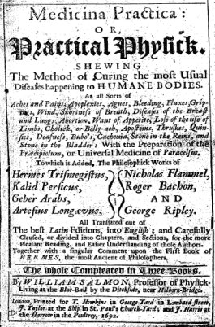
frontispice du Medicina Practica, London, 1692
- figures contenues
dans l'ouvrage : quatre se rapportent aux Figures Hiéroglyphiques du
pseudo Flamel ; deux se rapportent au Liber
Fornacum du pseudo Geber -
The preface contains a short account of each of the alchemical authors contained in the book, and this is followed by a list of Salmon's own writings, published and unpublished.
- Practical Physick, pp. 176,
- The second book has a title, dated 1691, and another, dated, 1692, p. 177 contains:
1. Hermes Trismegistus: The Golden Work, pp. 179-283, including the 'Smaragdine Table,' p. 258.
2. Kalid, Secreta Alchymiae, pp. 284-334.
3. Geber, The Sum, pp. 335-472, with four plates of apparatus. 1 - 2 -
The third book has a title, dated 1692, p. 473. and contains:
4. Artefius Longaevus, Liber Secretus, pp. 433-520 (sic for 475, &c.), in Latin and English.
5. Nicholas Flammel, The Hieroglyphicks, pp. 531-584, with four plates. 1 - 2 - 3 - 4
6. Roger Bachon, Radix Mundi, pp. 585-620.
7. Roger Bachon, Speculum Alchimiae, pp. 621-642.
8. George Ripley, The Marrow of Alchymie, pp. 643-696.
The remainder copies were reissued with a new title-page:
Medicina Practica: or, the Practical Physician: Shewing the True Method of Curing the most Usual Diseases Incident to Humane Bodies, viz.: All Sorts of Aches and Pains, ... To which is added the Chymical Works of Hermes Trismegistus, . . . And an Account of their Lives. . . . By William Salmon, M.P. (sic) . . . London Printed and Sold by Edmund Curll at the Peacock without Temple-Bar, 1707. Price 5£. In this reissue the title-pages of Books II. and III. have been cancelled.
22. Thesaurinella Olympica Aurea Tripartita, Das ist: Ein himmlisch güldenes Schatzkämmerlein, von vielen aufserlesenen Kleinodien zugerüstet, darinn der uhralte grosse und hochgebenedeyte Charfunckel-stein und Tinctur-schatz verborgen. In drey unterschiedliche Cellulas aufsgetheilet. Allen Liebhabern der himmlischen Warheit, und Hermetischen Philosophey, so den Grund der Hochmagischen Tinctur suchen, zu gute: Wie auch zu Beförderung der edlen Alchimey anjetzo eröffnet und publicirt durch Benedictum Figulum Utenhoviatem Franc. Poëtam L. C. Theologum, Theosophum, Philosophum, Medicum, Eremitam.' D. T. P. D. G. N. M DCLXXXII. Franckfurt am Mayn, Jn Verlegung Georgii Wolffii Büchhändl. in Hamburg in S. Joh. Kirchen, Gedruckt durch Johann Görlin.
8°. Pp. [16. including frontispiece] 402 [should be 392, as pp. 225-234 are dropped] The vignette represents a rayed sun for gold, surrounded by the symbols for silver, iron, mercury, lead, tin and copper. The book contains the following tracts:
1. Secretum Magicum D. Philippi Theophrasti Paracelsi von dreyen gebenedeyeten Magischen Steinen, p. 1.
2. Bernhard, Graf von der Marck mid Ternis (sic) Symbolum Apostolicum Cabalistisch erkläret und mit dem grossen uhralten Stein der Weisen verglichen, p. 42.
3. Vincent Koffskhy: Tinctur-Wurtzel, und auch Materia Prima defs gebenedeyten uhralten Steins der Weisen, p. 52.
4. Alphidius: Kurtzer Bericht und Parabolisch Tractätlein, p. 66.
5. Corollaria quaedam in nostram Thesaurinellam.Processus Universalis Viae, Tincturae Rubedinis & Albedinis, Alchymicae artis: Mngistri Nicolai Melchioris, . . . sub Forma Missae, p. 69.
6. Carmina auf das Philosophische Werck, 74.
Thesaurinellae . . . Pars II. Genandt Schola Hermetica, darinnen zu studieren, wie der Königliche, Orientalische, Durchleuchtende Rubin defs gebenedeyten Astralischen Magneten, defs Magischen und ChaldäischenTinctur-Steins zu erlangensey. p. 77 Contains:
7. Raymundus Lullius: Tractat vom Philosophischen Stein, p. 79.
8. Xamolxides: Tractatus Aureus quem Dyrrachium Philosophicum vocavit, p. 91.
9. Colloquium, p. 94.
10. Colloquium spiritus Mercurii cum Fratre Alberto Bayrs. p. 110. [See also HAUTNORTHON (J. F.), Lucerna Salis Philosophorum, 1658, p. 159].
11. Divi Leschi Genus Amo (M. Sendivogius): Colloquium Hermetico-Spagyricum, das ist: Ein wunderhöfliches, wolgegründetes Chymiscbes Gesprach zwischen der Natur, dem Mercurio, undeinem Alchymisten, p. 121.
Thesaurinellae . . . Pars III. Genandt und intitulirt. Lux in Tenebris Lucens Raymundi Lullii darinnen Bericht gethan wird, wie die höchste Geheimnüfs der Natur zu erforschen, und aus dem verborgenen am Liecht zu bringen nach Philosophischen Brauch . . . p. 142. Contains:
12. Raymundus Lullius: Tractatus de preparatione Lapidis Philosophici, p. 146.
13. Arcanum de Multiplicatione Philosophica in qualitate, p. 193.
Hortulus Olympicus Aureolus, Das ist: Ein himmlisches, güldenes, Hermetisches Lust-Gartlein, von allen und neuen Philosophis gepflantzet und gezielet, darinn zu finden, wie die Coelestivische, Edle, Hochgebenedeyte Scbwebelrofs und Scharlachblum defs hochgläntzenden und Tingirenden Carfunckelsteins (dadurch Menschliche, Metallische, und Vegetabilische Cörper ihre Renovation und höchste Perfection, oder Vollkommenheit erlangen mögen) zu brechen sey. Anjetzo allen Filiis Doctrinae Magyco-Spagyricae zu gutem eröffnet, geschenckt und publicirt. Durch Benedictum Figulum Utenhoviat. Fr. Poëtam L. C. Theologum, Theosophum, Philosophum, Medicum, Eremitam. D.T.P.D.G.N.
Anno TrIsMegIstae gratia Del, In toto orbe Chrlstlano genitae. Zum andern mal 1682. In Verlegung Georg Wolff. [p. 197].
Contains:
14. Das Büchlein Theophrasti mit der Himmlischen Sackpfeiffen, p. 202.
15. Theophrasti Tractatus de Lapide Philosophorum, p. 209.
16. Caspar Hartung vom Hof, Beschreibung von der Bereitung defs gebenedeyten Steins, p. 245.
17. Eine warhaffte und einfältige Aufslegung der Schriften aller Philosophen von dem . . . Stein der Weisen, p. 264.
18. Ulrich Poysel: Spiegel der Alchymey. p. 277.
19. Georg Fueger: De Lapide Philosophorum, Theoria brevis, p. 300.
20. Practica vom Universal oder gebenedeyten Tinctur Stein der Allen Weisen. Rythmice gestellet, p. 307.
Paradisus Aureolus Hermeticus Fluens Nectare & Ambrosia, in cujus perlustratione sedula fidelis & ocularis offertur instructio, quomodo Aureola Hesperidum Poma, ab Arbore Benedicta Philosophica sint decerpenda: a variis Philosophis, tum veteribus tum modernis plantatus in gratiam et emolumentum filiorum Doctrinae Chemico Spagyricae (huc usque praeclusus) nunc reseratus & publici Juris factus, per Benedictum Figulum Utenhoviat. . . .
Anno TrIsMegIstI SpagyrI ArChIatrI nobIs DonatI, &c. De novo Impensis Georgi Wolffii ; 1682. [p. 317.]
Contains:
21. Alphonsus, Rex Castellae: Liber Philosophiae Occultioris (praecipue Metallorum) profundissimus: Cui titulum fecit, Clavis Sapientiae, p. 322.
22. Aristoteles Alchymistes, Tractatus ad Alexandrum Magnum de Lapide Philosophorum, p. 356.
23. Epistola ad Hermannum Arcbiepiscopum Coloniensem, De Lapide Philosophico, p. 374.
24. Divi Leschi Genus Amo (M. Sendivogius), Dialogus Naturae, Mercurii et Alchymistae, p. 384,
The three tracts in the present collection had been published previously: Thesaurinella, Frankfurt a. M., 1608, 4°: Hortulus, Frankfurt, 1608, 4°; Paradisus, Frankfurt, 1600, 1608, 4°, and there was another work besides, Auriga benedictus spagyricus, Norimberg. 1609, 12°. In addition to these Gmelin quotes an edition of the Pandora, Strassburg, 1600, 8°, but that may be a misprint for 1608.
Ferguson : The author's name is said to be Benedict Töpfer, and he belonged to Utenhoven in Franconia, as he tells us. Schmieder thinks that his books had some circulation because they were in German and were not without humour. No notice of his life has been forthcoming, but his books are known, and Semler has drawn attention to a passage in the preface to the Thesaurinella, in which are adumbrations of the Rosicrucian ideas some years before their manifesto had been published.
23. Rosarium Novum Olympicum et Benedictum. Das ist: Ein newer Gebenedeyter Philosophischer Rosengart, darinnen vom aller weisesten König Salomone, H. Salomone Trismosino, H. Trithemio, D. Theophrasto, &c.gewiesen wirdt, wie der Gebenedeyte Guldene Zweig, vnnd Tincturschatz, vom vnverwelcklichen Orientalischen Baum der Hesperidum, vormittels Göttlicher Gnaden, abzubrechen vnd zu erlangen sey: Allen vnd jeden Filiis doctrine Hermeticae, vnd D. Theophrasticae Liebhabern zu gutem trewlich eröffnet in zwen Theilen. Pars Prima.Per Benedictum Figulum; Vtenhoviatem, Francum; Poëtam L. C. Theologum; Theosophum; Philosophum; Medicum Eremitam. T. M. Getruckt zu Basel, in verlegung des Autoris, Anno 1608.
4°. Pp. [10] 83 [1 blank]. Diagrams in the text. Title red and black. The vignette is a rose bush or tree with the metals as flowers, surmounted by the sun.

Rosarii Novi Olympici et Benedicti, Pars Altera: In sich haltent ein Buch mit 32. Capiteln, Laurentii Venturae Veneti, Medicinae Doctoris, &c. Aufs dem Latein vertiert vnud trewlich verdolmetschet, in vnsert Teutschen Sprach vor nie gesehen, De Lapide Benedicto Philosophorum, &c. Interprete Benedicto Figulo, Vtenhoviale, Franco, Poëta L. C. Theologo; Theosopho ; Philosopho, Medico, Eremita. D. T. P. D. G. N. Getruckt zu Basel, in verlegung des Autoris. Anno BeneDICtI Regis & MagIstrI GratIae & bonItatis, &c.
4°. Pp. [15, 1 blank] 117 [2] [1 blank]. The vignette is a figure in Roman dress. The chronogram stands for 1608.
The first part of this book consists of :
1. extracts from Salomon Trismosinus, Trithemius, p. 16;
2. Paracelsus, p. 33;
3. von Suchten, p. 56;
4. Tractalulus Rythmicus Novus vom Stein der Weysen, p. 58;
5. Aenigmata, p. 71;
6. Processus ad Lapidem Philosophorum Monachi cuiusdam anonymi, p. 79.
The second part is a translation of Ventura's work, De Lapide Philosophorum.
24. Pandora Magnalium Naturalium Aurea et Benedicta, de Benedicto Lapidis Philosoph. Mysterio. Darinnen Apocalypsis des Hocherleuchten Aegyptischen Königs vnd Philosophi, Hermetis Trismegisti, von vnserm Teutschen Hermete, dem Edlen, Hochthewrem Monarchen vnd Philosopho Trismegisto, A. Ph. Theophrasto Paracelso &c. Verdolmetschet: wie anch Tinctura Physicorum Paracelsica, mit einer Schönen Erklerung des auch Edlen vnd Hocherfahrnen Philosophi, Alexandri von Süchten, Utrijusque Medicine D. Sampt Seiner AL. V. S. angehengten 3. Vnderschiedlichen Tractetlein, so vor nie gesehen worden, wie auch Anderen Ejusdem materige Corollariis, wie sie nach der Vorredt Specifiret (sic) werden: Allen Filiis Doctrinae Henneticae zu nutz vnd gutem jetzo publiciret. Durch Benedictum Figulum; Utenhoviateni, Fr: P. L. C. T. T. P. M. E. D. T. P. D. G. N. Getruckt zu Strafsburg, inn Verlegung Lazari Zetzeners. 1608.
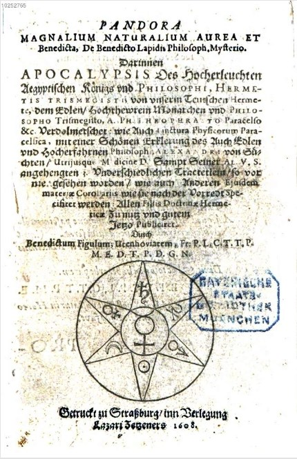
Pandora magnalium Naturalium Aurea..., 1608
8° Pp. [32] 393 [1. 1 blank]. 1 woodcut. The vignette is a six-rayed star. In the centre circle is the symbol for Mercury, in the rays are the astronomical symbols for gold, silver, copper, lend, tin and iron. The book contains the following tracts:
1. Liber Apocalypseos Hermetis, Theo. Paracelso, interprete, De supremo Mundi Secreto, p. 1.
2. De Vera Medicina Alexandri à Suchten Elegia, Dialogus, Alexandri à Suchten, p. 49.
3. Ex libro de tribus Facultatibus Alexandri à Suchten, p. 112.
4. Explicatio Tincturae Physicorum Theophrasti Paracelsi, ab Alexandro à Suchten, p. 143.
5. Regulae seu Canones aliquot Philosophici de Lapide Philosophico, p. 216.
6. Tractätlein von Lapide Philosophorum Anonymi, p. 234.
7. Rythmi Germanici von diesem hogen Tincturwerck Anonymi Authoris, p. 263.
8. De Auro Potabili Theophrasti Paracelsi, p. 275.
9. Von der Krafft vnnd Würckung auch rechtem nutzlichem Gebrauch des herrlichen Antidoti so man Aurum Potabile nennet, p. 279.
24bis. Pandora: Das ist, Die edelst Gab Gottes, oder der werde vnd heilsame Stein der Weysen, mit welchem die alten Philosophi, auch Theophrastus Paracelsus, die vnvollkommene Metallen durch gewalt des Fewrs verbessert: sampt allerley schedliche vnd vnheiisame kranckheiten, jnnerlich vnnd eusserlich haben vertrieben. Ein Guldener Schatz, welcher durch einen Liebhaber dieser Kunst, von seinem Vndergang errettet ist worden,- vnd zu Nutz allen Menschen, fürnemlich den Liebhabern der Paracelsischen Artzney, jetzt widerumb in Truck verfertiget Getruckt zu Basel, Durch Sebastianum Henricpetri. 8°. Pp. [16]317[1 blank], [I] Colophon: Getruckt zu Basel durch Sebastianum Henricpetri. Anno Clc Icxxcviii. [I] Petri's device. 42 woodcuts.
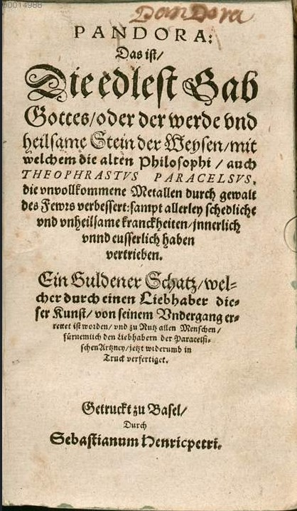
Pandora, Reusner, 1598
1)- REUSNER (Hieronymus) He was the son of Christopher Reusner, and was born at Lemberg in Silesia 26 Sept., 1558. He graduated as M.D. at Basel, and became town physician at Hof in Vogtland and then at Nörd-town.He wrote a small number of medical works:
De pollinctura et sepultura cadaverum.
Decisiones, Basileae, 1578,4°.
Epistolae, Francof., 1600, 8°.
Tractatus de Scorbuto, 1600.
Urinarum probationes Iodoci Willichii illustrate Scholiis Medicis, . . . Remedia item plurima ex urina desumpta, Basil., 1583, 8°.
Curationes et observationes medicae in the 'Sylloge' of Georg Hieron. Welsch, Aug. Vindel., 1668. 40.
Beschreibung des minerabschen Bades zu Wemb-dingen, Neuburg, 1618, 8".
This was apparently a posthumous publication.
'Pandora' is not mentioned by Eberti, but his judgment on the author is flattering: 'Vir certe eruditus, qui editis cultissimi sui ingenii & ex-quisitae doctrinae lucubrationibus aeternum nomen si hi comparavit,' but his name is hardly remembered now. The first edition of the present work appeared in 1582, with the following title-page: Pandora, Das ist, Die Edleste Gab Gottes, oder der Werde vnnd Heilsamme Stein der Weisen, mit welchem die alien Philosophi, auch Theophrastus Paracelsus, die vnuolkofnene Metallen, durch gewalt des Fewrs verbessert: sampt allerley schadliche vnd vnhetlsame Kranckbeiten, jnnerlich vnd eusserlich haben vertrieben.
Ein Guldener Schatz. welcher durch einen Liebhaber diser Kunst, von seinem Vmergang errettet ist worden. vnnd zu nutz alien Menschen, fiirnem-lich den Liebhabern der Paracelsischen Artzney, erst jetz in Truck verfertiget.
Getruckt zu Basel Anno M.D.LXXXII. 8° pp. [16] 309 [1 blank]. Colophon'. Getruckt zu Basel, bey Samuel Apiario. Symbolical woodcuts in the text.
Reusner was apparently only the editor of this book, and he calls it 'Pandora Francisci Epi-methei' as if that were indeed the author's name. That, however, wears the air of a pseudonym, and accordingly Fictuld informs us that the real name of the author was Ulmannus, and that he was a Franciscan. Schmieder, on the other hand, states boldly, 'Hieronymus Reufsner wrote: Epimethei Pandora, oder Stein der Weisen. . . . Basel, 1598, 8°. Though the book probably made its first appearance in 1582, at all events in German, it, or the symbolical pictures in it, were known some time earlier. In an anonymous tract, entitled: 'Liber de arte chimica incerti autboris,' printed in the ars AURIFERA. 1572, there appears at the conclusion of Cap. xvii. a description which applies unmistakably to certain of the allegorical plates contained in the 'Pandora,' though the book itself is not mentioned by name. After explaining these in some detail, and showing how widely symbols had been used, the author adds: 'Has not also Ulmannus Franciscan monk and "frater minor" described our wisdom with great skill in the German tongue and tested it by the Passion, and proved that it is sure?' It is on this passage that Fictuld based his statement that Ulmannus was the author of the Pandora, but it is difficult to see any justification of this view in the words employed. This anonymous tract is contained, of course, in the different editions and translations of the ARS aurifera. See the edition of 1610, i. pp. 400-401, and Morgenstern's translation, 1613, i. p. 552;
1750. i. p. 671. It would seem, however, as if the plates had been known before 1572, whether accompanied by a verbal elucidation of their meaning or not. For, even before this, namely in 1550, one or two of the plates had already appeared in the Rosarium PHILOSOPHORUM along with the verses, which, with some omissions, are also contained in the 'Pandora.' One of these plates, which represents a hermaphroditic figure holding in one hand a goblet with three serpents rising out of it, and in the other a single serpent, is referred to by Michael Maier in the Symbola Aurea Mensae, 1617, who says that between it and the accompanying verses — rythmi germanici he calls them — the author elucidates the whole of the art Maier gives a translation, because they had not been put into Latin before, and because of their truth and merit, Thesse are the verses in the 1550 edition of the rosarium, sig. Miiij. Maier, however, has made his quotation from the rosarium and not from the 'pandora' with which, indeed, he does not seem to have been acquainted. It may be observed that while both contain allegorical pictures, expressing alchemical processes, one set is quite different from the other, with the exceptions already specified. The verses also seem to apply more correctly to the plate in the 'Pandora' to which they are referred, than to that in the Rosarium, but the subject is by no means clear and it stands in need of further investigation.
2)- FAUSTIUS (Johannes Michael).
Joh. Michaelis Faustij, Med. Doct Physici Francofurt. Ordinarij, Academ. Leopoldino Imperialis Theophili, Compendium Alchymist. Novum, sive Pandora Explicata & Figuris Jllustrata. Das ist, die Edelste Gabe Gottes, oder ein Güldener Schatz, mit welchem die alten und neuen Philosophi, die unvollkommene Metall, durch Gewalt des Feuers verbessert, und allerhand schädliche und unheylsame Kranckheiten innerlich und äusserlich, durch deren Würckung, vertrieben haben. Dieser Edition wird annoch, nebst vielen Kupffern, und über 800. Philosophischen Anmerckungen, ein voll-komenes Lexicon Alchymisticum Novum, und ein vollständiges Register Rerum & Verborum, beygefüget Franckturt und Leipzig, Verlegts Johann Zieger, 1706. 8°. Pp. [32] 1071. Index [194]. 19 woodcut plates separate. Small woodcuts in the text Title red and black, printed across two pages. Engraved title prinled on two pages, both included in signaturc )(. The letterpress explaining the woodcuts is not paged, but is lettered from A to T. The pagination, however, runs on consecutively. 'Lexicon Alcbemiae,' pp. 104 ; 'Summarischer Begriff,' pp. 236.
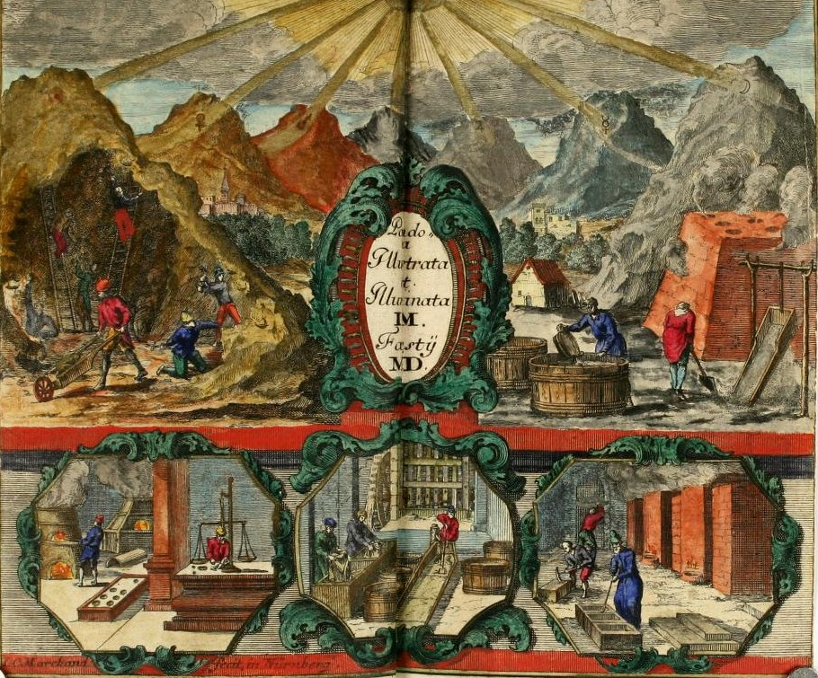
Pandora, Faustius (Johannes Michael), 1706 (frontispice)
The work has a preface by Faustius and a reprint of that by Hieronymus Reusner prefixed to ' Pandora.' The present work consists of the text of Pandora illustrated by numerous extracts and parallel passages from all the alchemical writers with the supplementary matter above mentioned added. See Pandora. The remainder of the 'Lexicon' and 'Summarischer Begriff' were reissued together at Hamburg in 1727, the former with a title-page: "Lexikon Alchemize D. Joh. Michaelis Faustii," and the latter with an interpolated very detailed title-page beginning: "Succincta & brevis Artis Chemiae Instructio.' Copies of Faustius 'Pandora' occur without this supplement See below. Schmieder quotes : Compendium Alchymia novum, Francof. 1706, 8°, as if it were a distinct work.
25. HERMETISCHES Museum. Erster Theil. Alten Liebhabern der wahren Weisheit gewidmet von dem Herausgeber. Reval und Leipzig bey Albrecht und Compagnie . . . 8°. Pp. 192. The date has been torn off.
- Zweyter Theil. .. (date torn off). 8°. Pp. 190.
- Dritter Theil, 1785. 8°. Pp. 179 [1 blank].
- Vierter Theil, Leipzig, 1790, in Geislers, des jüngern, Verlagshandlung. 8°. Pp. vi. 170.
The date of parts I. and II. is 5782, which of course stands for 1782.
Erster Theil.
1. Warum gelangen nur wenige Menschen zum Meisterstük der königlichen Kunst ? eine Frage, beantwortet von einem ächten Maurer, I., p. 13.
2. Johann de Monte Raphaim. Vorbothe der am philosophischen Himmel hervorbrechenden Morgenräthe, I., p. 65.
3. P. A. Theophrasti geheimes und vollständiges Wünschhütlein, . . . mit einer Nachricht von des Verfassers Leben vermehrt von Sincero Aletophilo. Nach der Erfurter Ausgabe von 1738 abgedrukt, l., p. 111.
Zweyter Theil.
1. Johannis Augurelli Güldenes Vliefs und Golderzielungskunst . . . übersezt von M. Valentin Weigel ... abgedrukt nach der Hamburger Ausgabe vom Jahre 1716, II, p. 3
2. Reine Hermetische Wahrheit von einem unbekannten Verfasser, II., p. 143.
Dritter Theil.
1. Schlüssel zur wahren Weisheit. III., p. 3.
2. Philadelphia oder brüderliehe Liebe von Irenaeus Philoctetes, III., p. 37.
3. Sendschreiben eines Adeplen. über das Geheimnis der grossen Kunst, aus Gelegenheit derjenigen Lehren abgefafst, die Aristaeus seinem Sohne, das philosophische Meisterstük betreffend hinterlassen hat. Der Name des Verfassers ist in diesem lateinischen Annagramma (sic) enthalten. Dives sicut Ardens, s. Sanctus Desiderius. zu Paris bey Lorenz D'Houry, 1688, III., p. 95.
4. Liber de Principiis Naturalibus et de principiis artis Chemicae. Incerto Authore, III. p. 151.
Vierter Theil.
Die wahrhafte und vollkommene Bereitung des Philosophischen Steins der Brüderschaft aus dem Orden des Gülden, und Rosen-Creutzes ... Dabey angehänget die Gesetze oder Regeln, welche die gedachte Brüderschaft unter sich hält, denen Filiis Doctrinae zum Beslen publiciret, von S. R., iv. p. 1.
The 'Gesetze, 'p. 143.
26. DIVERS Traitez de la Philosophie Naturelle. Sçavoir, la Turbe des Philosophes, ou le code de vérité en l'Art. La Parole Délaissée de Bernard Trevisan. Les deux traitez de Corneille Drebel Flaman. Avec le Très-Ancien Duel des Chevaliers. Nouvellement traduits en François, par un Docteur en Médecine. A Paris, chez Jean d'Houry à l'Image S. Jean, au bout du
Pont-neuf, sur le Quay des Augustins. M.DC.LXXII. 12°. Pp.[8] 298. [5, 1 blank].
1. La Turbe des Philosophes, p. 1.
2. La Parole Délaissée, Traité de Bernard Comte de la Marche Trevisane, p. 97.
3. Deux traitez philosophiques de Corneille Drebel, p. 175 :
II. De la Quinte Essence, p. 245
4. Le Très-Ancien Duel des Chevaliers ou Dialogue Chymique de la pierre physique, p. 275.
An edition of this collection seems to have come out at Paris, in 1618. Compare Schmieder, Geschichte der Alchemie. 1832, p. 234, No. 4.
27. OCCULTA Philosophia von den verborgenen Philosophischen Geheimnussen der heimlichen Goldblumen, vnd Lapidis Philosophonun, was derselbige: vnd wie zu Erlangung dessen zu procediren, aufsführlicher Bericht in einem Philosophischen Gepräch verfässet, sampt Der Schmaragd-Taflfel, Paraboln, Symbolis, vnd 18. sonderbaren Figuren, der hochberühmten Philosophen Hermeris Trismegisti, vnd F. Basilii Valentini durch welche diese Kunst der Philosophischen Goldblumen vollkomlich erkläret an Tag gegeben. Gedruckt zu Franckfurt am Mayn durch Johann Bringem. Anno M.DC.XIII
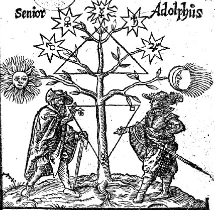
vignette de l'Occulta Philosophia
4°. Pp. (8] 78. Title red and black. Vignette: Senior and Adolphus with the tree of the metals between. 14 symbolic woodcuts.
- Das ersteTheil : Ein Colloquium Oder Gesprech zwischen eiene alten [Senior] vnd jungen Studenten [Adolphus], p. 1
- Das ander Theil : Aureliae Occultae Philosophorum, p. 47.
- Verba Hermetis in Pimandro, p. 49,
- Schmaragt Tafel Hermetis, p. 50.
- Symbolum Fratris Basilii Valentini, p. 52.
illustrations de l'ouvrage : 1 - 2 - 3 - 4 - 5 - 6 - 7 - 8 - 9 - 10 - 11 - 12 - 13 - [tirées de l'Azoth ou le Moyen faire l'or caché des philosophes, Paris, Perier, 1624]
Ferguson : The dedication to Ludwig Georg, Count of Stolberg, Königstein, Rochefort. Wernigeroda and Hohensteio, dated 8 January, 1613, is signed by Bringer, the printer. He says the collection was made by a diligent lover of the subject, so that it might be acquired without special trouble. A former owner has written; Dieser Tractat ist Echt und Recht; Sehr Rahr zu haben.
28. COLLECTANEA Chymica: A Collection of Ten Several Treatises in Chymistry, concerning the Liquor Alkahest, the Mercury of Philosophers, and other Curiosities worthy the Perusal. Written by Eir. Philaletha, Anonymus, Joh. Bapt Van-Helmont, Dr. Fr. Antonie, Bernhard Earl of Trevisan, Sir Geo. Ripley, Rog. Bacon. Geo. Starkey, Sir Hugh Piatt, and the Tomb of Semiramis, see more in the Contents. London, Printed for William Cooper, at the Pelican in Little Britain, 1684.
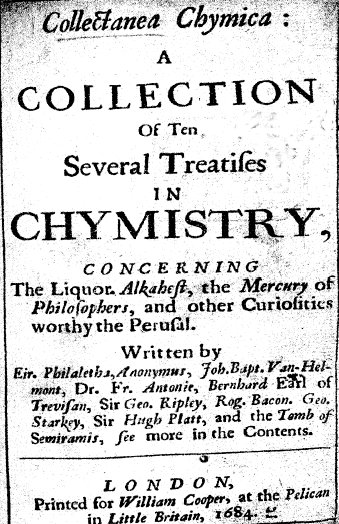
8°. Pp. [6] 193 [4, i blank]; 32.
The tracts in this collection are as follows:
1. Eireneus Philaletha, Arcanum, or secret of the immortall Liquor Alkaest, p. 5.
2. Anonymus. Practice of Lights, p. 27.
3. Joh. Bapt. Van Helmont, Praecipiatum, p. 47.
4. Fr. Antonie, Aurum Potabile, p. 73.
5. Bernhard of Trevisan, Treatise, p. 83.
6. George Ripley. Bosome-book, p. 101.
7. Roger Bacon, Speculum Alchymiae, p. 125.
8. George Starkey, Oil of Sulphur-vive, p. 137.
9. Hugh Platts, Remedies against Famine, p. 153.
10. H. V. D., Tumba Semiramidis,
Ferguson : Notwithstanding the Latin titles the tracts are all in English, except the first, which is in both languages. Each tract has a title-page. In 1893, at London, appeared a volume entitled Collectanea Chymica; being certain select Treatises on Alchemy and Hermetic Medicine. The prefatory note states that the tracts were printed from a MS. belonging to the late Frederick Hockley, itself a transcript from an older work. No date is given for the MS., so that it is not possible to say whether or not it was taken from the present work. The 1803 edition contains the tract on the 'Alka. hbest,' Antonie's 'Aurum Potabile,' Starkey's 'Oil of Sulphur-Vive,' Ripley's ' Bosom book,' all as in the above; the others are omitted, but it has a tract ' On the stone of the philosophers,' and one on the ' Preparation of the Sophick Mercury,' which are not in the older edition.
29. AURIFONTINA Chymica: or, a Collection of fourteen small Treatises concerning the First Matter of Philosophers, for the discovery of their (hitherto so much concealed) Mercury. Which many have studiously endeavoured to hide, but these to make manifest, for the benefit of Mankind in general. London, Printed for William Cooper, at the Pelican in Little-Britain. 1680.
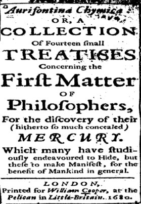
frontispice de l'Aurifontina Chymica, London, 1680
Small narrow 24°. Pp. [23] containing title, John Frederick Houpreght's dedication of the Hydropyrographum to Charles II., Contents, To the Reader. Text, pp. 372. Advertisement of Chemical books [4].
This curious and very rare little volume was probably compiled and edited by William Cooper, a well-known vendor of Alchemical books, and the author of the first catalogue of such books in England. The treatises contained are the following:
1. Hydropyrographum Hermeticum, or the Metallicick Water-fire, translated by J. F. Houpreght, p. 1.
2. The Privy Seal of Secrets, plainly discovering the first Matter of the Philosophers, p. 41.
3. A strange letter concerning an Adept, his curious Learning and vaster Treasure, from Frederick, Duke of Holsatia and Sleswick, p. 53.
4. Sir George Ripley's Treatise of Mercury, and the Philosophers stone, p. 69.
5. Colours to be observed in the operation of the Great Work of Philosophers, p. 93.
6. A plain and true Description of the Treasure of Treasures, or the Golden Medicine, p. 97.
7. A Treatise of the Philosophers Stone, the Blessed Manna, &c., with its wondrous Virtues and Use, both for the curing the Body of Man, and the making of precious Stones, p. 107.
8. Nic. Flammell, his Summary of Philosophy, or Short Treatise of the Philosophers Stone, p. 145.
9. Rayrn. Lullie's Clavicula, Apertorium, or little Key explaining all the rest of his Works, p. 163.
10. Secrets disclos'd of the Philosophers Stone, p. 180.
11. A Philosophical Riddle of Gold, in Verse, p. 185.
12. Item. Trevisan's Epistle to Thomas of Bononia, concerning the secret workings of Nature in the product of thing; p. 187.
13. Bern. Trevisan, his short Epistle Dedicatory before his Works, to the same man, p. 269.
14. A brief Preparation of the Philosophers Stone, for the conclusion of this Book. p. 271.
30. ERÖFFNETE Geheimnisse des Steins der Weisen oder Schatz-Kammer der Alchymie, darinnen die vortrefflichsten Schrifften derer berühmtesten alten und neuern Scribenten denen Liebhabern der Kunst dargestellet werden. Nebst vielen Kupfferstichen und andern dazu dienlichen Figuren. [Hamburg, Bey Christian Liebezeit in der Joh. Kirch, 1708-18.]
This is the Hamburg reprint of Trismosin’s Aureus vellus, 1598 (q.v.). Though the special titles are dated Harnburg, 1708, the general title-page is that of 1718. The five ‘Tractatus contain the following :
I. Trissmosinische Schrifften, p. 1.
II. Paracelsische Schrifften, p. 91. Korndorfferische Schrlfften, p. 129
III.
1. Splendor Solis mit schönen Figuren, p. 163.
2. Spiegel der Alchymey Ulrici Poyselii, p. 214.
3. Clavis sampt seiner Declaration der Chymischen Handgriffen, p. 229.
4. AIlerley Particularia die Handtgriff zuer. lehrnen, p. 237.
5. Ein Tincktur oder Elixier eines unbekandten philosophi, p. 250.
6. Processus pro Tinctura auff den Mercurium Solis und Lunae, p. 256,
7. Modus procedendl in praeparatione lapidis philosophici, p. 258.
8. Dialogus philosophiae, p. 272.
9. Exemplum artls Philosophiae. Ein Exemplum der philosophischen Kunst, p. 278.
10. De lapide Philosophorum 12 capita incerti authoris, p. 281.
11. Vom Stein der Weisen ein schöner Process Episcopi Melchioris Brixiensis Card. Romae, etc., und ein Philosophisches Werck und Gespräch von dem Gelben und Rotten Man, p. 296.
12. Von dem Rebis einem Stein, p. 305.
13. VarIa Philosophica, p. 307.
(b) Ein schönes Gedicht, p. 310.
(c) Ein Gespräch, p. 312.
(d) Ein Gedicht, p. 314.
(e) De Oleo Philosophorum, p, 314.
(f) Vera praeparatio Mercurii. p. 315.
15. Novum Testamentum, p. 318.
16. Von dem Philosophischen Bley. p. 319.
17. Avicenna Septem regulae ex quibus componiftur lapis Philosophorum, p. 320.
18. Tabula Scientiae maioris p. 321.
19. De quinta essentia vini pulcherrimus tractatus, p. 342.
20. Tabula schmaragdina Hermetis Hermetis Trismegisti patris Philosophorum, p. 335.
21. Aufslegung und erklärung des Gemelds oder Figur (in verse), p. 337.
IV.
1. Von der Bereitung des gebenedeyten Philosophischen Steins-Caspar Hartung von Holf, p. 349.
2. De Prima Materia Lapidis Philosophorum (In verse), p. 360.
3. Vollkommener Bericht und Handgriff in Zubereitung des Lapidis Philosophorum und Tincturae Physicae, p. 370.
4. Liber Secretorum Ionnis deo Padua de Lapide Philosophorum. Liber Primus, p. 376
5. Liber secundus, p. 393.
6. Liber tertius, p. 399
7. Clavis Philosophiae Chemicae, p. 447.
8. Grundtlicher Bericht was die warhafttige Kunst Alchemia innhalte und vermag in Via Universali & Particulari, aufs allen Philosophis zusammen gezogen, p. 479.
9. Hortus Divitiarum. Der Garten der Reichthumb aller Weifsheit Gottes, p. 500
10. Ein Werck der Alchimey, p. 519,
11. Zwo Tincturen auff Weifs und Roth, p. 533.
12. De Lapide in Aqua Mercurlali, p. 540.
13. Ein Mercurij Arbeit und Augment mit dem Mercurio Lunae, p. 545.
14. Ein schönes Tractätlein in welchem etliche schöne und lustige Particular Stücklein begriffen sind, p. 554.
15. Ein schön Stuck von Doctor Scheneken, p. 563.
16. Von dem Antimonio Philosophorum, non Vulgi, p. 570.
17. Oleum Antominii : Die Fixatio, sein Quinta Essen, Caspar Eberlein. p. 579
V.
1. Von Offenbahrung der Philosophischen Materien und Dingen, aufs weichen vollbracht wirdt die Meisterechafft, in wirckung defs Edlen und gebenedeiten Steins der Philosophen, p. 593.
2. Thesaurus Philosophen Euferarij, p. 606.
3. Tractatus darinn das gantze Secret der Alchimey vom Stein der Weisen begriffen ist, p. 623.
4. Lux lucens in Tenebris, p. 636.
5. Tractatus deVitriolo Philosophorum, p. 642.
6. Oleum Vitrioli [by R. Bacon], p. 651.
7. Experinmenta ... durch ... Raimundum Lilium ... und von Raimundo in Iatein beschrieben. Jets aber durch Herrn Georgium Sanderreuter von Wasserburg verteutscht worden, p. 664.
8. Des Buchlein von der natürlichen Philosophey der Metallen des Edlen und Hochgelehrten Herren Dionisij Zacharij Galli, p. 727
9. Ein streit und Gespräch des Goldes und Mercurij wider des Stein der Weisen, p. 765
10. Etliche Korndorfferische Particularia, p. 773.
11. Spiegel der PhiIosophey, p. 787.
Introduction aux manuscrits alchimiques d'Isaac Newton
¯
Collection d'ouvrages
alchimiques
de
l'Institut de France et
du Museum
d'Histoire Naturelle

Introduction
L'Académie des sciences et le Museum d'Histoire Naturelle
possèdent
un certain nombre d'ouvrages sur l'alchimie. Pour ce qui est du
Museum,
ils sont issus du fonds Chevreul, légué au musée
par
le chimiste Eugène Chevreul (1783-1886)
à
sa mort. On se reportera aux deux sections sur Artephius
et Cambriel pour plus de
renseignements
sur
l'oeuvre critique de Chevreul sur l'alchimie. Cf. aussi l'étude
plus générale consacrée à Chevreul.
1. Paris, Bibliothèque de l'Institut de France MS. 795.
13 folios. papier. 190 x 125mm. XVIIIe
[Alchemical treatises by Isaac Holland.]
f. 1 OEuvre philosophique.
f. 7 Pratique de grand oeuvre.
f. 10 Théorie de l'arcane. Du grande oeuvre cy devant ou pierre
des
philosophes.
2. Paris, Bibliothèque de l'Institut de France MS. 1772-1775. 4 volumes. 80, 99, 104 et 203 folios. papier. 199 x 145mm.
Recueil de chymie et d'alchymie, par Mr Dupont, médecin à Antibes, donné pour tel par Mr Arnauld, avec un table des matières.
3. Paris, Bibliothèque de l'Institut de France MS. 2974.164 folios. papier. 230 x 190mm. XIXe
[Copy of a Syrian alchemical treatise from a manuscript in the British Museum.]
4. Paris, du Muséum d'Histoire Naturelle MS. 2021.48 folios. Paper. 240 x 170mm. XVIIe
1. Le miroir d'alchimie d'Arnauld de Villeneuve.
2. f. 37 Questions tant essentielles qu'accidentelles de Maistre
Arnauld
de Villeneuve à Boniface VIII...
[Copie manuscrite de Claude-Alexandre Séguier (1656-1725). Pour
le MS. de Séguier, voir M.-E. Chevreul in Journal des Savants,
1851, p. 758-760. -
repris
in extenso dans Chevreul,
critique
d'Artephius]
5. Paris, du Muséum d'Histoire Naturelle MS. 2022. 148 + 41 pages. papier. 275 x 200mm. XVIIe
Testament of Raymond Lully. [Copie manuscrite de Claude-Alexandre Séguier.]
6. Paris, du Muséum d'Histoire Naturelle MS. 2023.98 + 20 pages. papier. 190 x 135mm. XVIIe
Testament de Raymond Lulle. [Copie manuscrite de Claude-Alexandre Séguier.] Le titre de la page est manquant et les deux parties de l'oeuvre « Théorie » et « Pratique » sont dans un format différent.
7. Paris, du Muséum d'Histoire Naturelle MS. 2024.79 folios. papier. 205 x 135mm. XVIIe.
1. De la transmutation métallique. Trois anciens
traittés
en rithmes françoises, à sçavoir:
2. La fontaine des amoureux de science, autheur J[ean] de la
Fontaine
[1413];
3. Les remonstrances de nature à l'alchimiste errant, avec la
réponse
dudt. alchimiste, par J[ean] de Meung, ensemble un trait de son
Roman
de
la rose concernant ledt. art [1320];
4. Le sommaire philosophique de Nicolas Flamel [1399]. A Paris,
chez
Guillaume
Guillard et Amauri Warancore, rue Saint-Jacques, à l'enseigne
Sainte-Barbe,
1561.
[Copie manuscrite de Claude-Alexandre Séguier.]
8. Paris, du Muséum d'Histoire Naturelle MS. 2025. 95 + 76 + 66 + 93 pages. papier. 235 x 185mm. XVIIe
1. [George Ripley] Les oeuvres de Georges Riplée,
philosophe, chanoine
de Bridli[n]gton. Traduit du latin par Raimond Bascon, sieur de
Presles,
médecin chimiste, l'an 1689.
p. 5-75 Le livre des douze portes.
p. 76-81 La chanson de Georges Riplée.
p. 82-91 La lettre de Georges Riplée au roy Edouard IV...
p. 95 La vision du chevalier Georges Ripleys...
p. 93 [illustrations représentant le système chimique de
Ripley.]
2. [trois textes de Pantaléon.]
p. 1-76 Le tombeaux d'Hermès ouvert... mis en lumière...
par
Anonime Pantaléon... et traduit du latin par Raimond Bascon... A
Paris, l'an 1689. [Tumulus Hermetis apertus published at
Nuremberg in
1676.]
p. 1-66 Examen alchimistique par lequel comme par le pierre de
touche
l'on
discernera l'Adepte du sophiste et le philosophe de
l'imposteur...
autheur
Pantaléon... traduit du latin par Raimond Bascon... A Paris,
l'an
1689.
p. 1-93 La double feuille métallique ou La médecine
double
pour les métaux et pour les hommes infirmes... par
Pantaléon...
traduite du latin par Raimon Bascon... A Paris, l'an 1689.
3. Volatilisation du sel de tartre [d'après Van Helmont].
Régule de Mars comme l'a faict l sieur Prince [recette].
9. Paris, du Muséum d'Histoire Naturelle MS. 2026. 128 pages. papier. 220 x 165mm. XVIIe
La clef majeure de sagesse
et
science
des secrets de nature d'Artephius.
[traduction du Clavis majoris
sapientiae,
extrait du Theatrum Chemicum, vol IV, p.
198.]
Ensuit la practique de la théorique cy dessus écritte par
le méme auteur. [cf. traduction A
dont parle
Chevreul dans son examen de la Clavis
Majoris Sapientiae -]
10. Paris, du Muséum d'Histoire Naturelle MS. 2027. 398 pages + 14 folios. 2 volumes. papier. 165 x 125mm. XVIIe
La clef du secret des secrets de phylosophie ou Premier livre
de
Pierre
Vicot ou le serviteur prestre, serviteur de Nicolas de Grosparmy
comte
de Flers et de Noël Le Vallois gentilhomme compagnon de
Grosparmy.
[traduction et adaptation de la Clavis majoris sapientiae d'Artephius.
Le manuscrit est enrichi de nombreuses notes de main différente.
Les derniers folios sont illustrés avec des images peintes au
crayon. - c'est ce que
Chevreul
nomme le traité de Vicot
dans son étude sur Artephius. Il parle de ce MS. comme le Manuscrit A.]
11. Paris, du Muséum d'Histoire Naturelle MS. 2028. 344 pages. 2 volumes. papier. 165 x 125mm. XVIIe
1. La clef du secret des
secrets de Nicolas Valois, compagnon du sieur
de Grosparmy. [traduction et adaptation du Clavis majoris
sapientiae.
Ex-libris
d'Etienne Clavier (1762-1817).
2. p. 119 Oeuvre ou Traitté premier de Nicolas de Grosparmy de
Normandie.
[figure peinte à la p. 133.]
3. p. 187 Quelques usages de la pierre, tirés d'un manuscrit
appelé
Manne du ciel.
4. p. 208 La manné terrestre, venant du ciel, se répand
sur
les enfants des hommes sages. Poème en 732 vers par un
phylosophe
inconnu [Jean-Albert Belin?]
5. p. 255 Les 40 propositions suivantes ont été
publiées
par un seigneur allemand [Marcellus Palingenius] qui provoquoit
par
là
tous les sçavants de l'Europe sur cette matière et
s'engageoit
à leur prouver ses raisons par l'expérience. L'ouvrage a
paru en latin, et il est copié sur la traduction qui en a
été
donné par M. La Monerie dans celle du poème de
Palyngene...
6. p. 283 Falx in bifolium processus contra examen alchimisticum
tumulatio
tumuli Pantaleonis ab anonymo authore edita in commodum filiorum
artis
ut caveant ad ejusdem jactabundi Pantaleonis interpellatis
erroribus et
imposturis. Amsterodami, praestant apud Johannem Janssonium,
1678.
[Anonymous
critique of Tumulus Hermetis apertus of Pantaléon.]
7. p. 330 Poème phylosophique sur le sujet des sages.
12. Paris, du Muséum d'Histoire Naturelle MS. 2029. 96 folios. papier. 230 x 130mm. XVIIe
[collection de divers écrits alchimiques, de la main de
Claude-Alexandre
Séguier. - il s'agit de ce
que Chevreul nomme le manuscrit
D dans
son étude sur Artephius]
1. Les particularités de Bernard de Badie.
2. f. 17 Ici sont les livres des trois Adeptes [Nicolas Vallois, Nicolas
de Grosparmy and Pierre
Vicot] qui
firent à Rouen la pierre philosophale.
[Adaptation of Clavis majoris sapientiae of Artephius.]
3. f. 48 ... Pratique de l'oeuvre minéralle par Nicolas de
Grosparmy
à son ami Nicolas de Valois.
4. f. 58 La clef de quelque secret de philosophie qui est le
premier
livre
de Me Pierre Nicot [sic] preste serviteur de Nicolas de
Grosparmy comte
de Fles [sic] et de Nicolas de Vallois gentilhomme compagnon de
Grosparmy,
lesquels touts [sic] trois d'une même union, amitié,
fidélité
et concorde firent la pierre des philosophes et leurs livres
pour leurs
successeurs.
5. f. 63 v La clef de nature.
6. f. 69 La révélation de la parole cachée par la
sagesse
des anciens ou la généalogie du mercure des philosophes.
7. f. 77 Lettre qui sert d'introduction pour le traité
cy-dessus.
8. f. 80 Extraction du dissolvant ou Le moien d'extraire le
dissolvant
universel
de sa matrice originelle par Mr L.A.
9. f. 86 Extrait d'un livre intitulé Novum lumen medicum de
mysteris
sulphuris philosophorum Joachimi Polemanni.
13. Paris, du Muséum d'Histoire Naturelle MS. 2030. 2+212 folios. papier. 235 x 185mm. XVIIIe
[Collection de divers écrits alchimiques, qui commencent
par une
table à la fin de laquelle l'auteur se nomme...ce volume
appartenant
à moy Jean-Baptiste-Léonard Dion de Saint-Jory.]
1. Le petit paysan ou Le Lys parmi les épines, traduit de
l'allemand
par [Jean] Valachie.
2. f. 55 L'arche de l'arcane ou Secret des souverains misteres
de la
nature,
de Mre Jean Grassée... construi de son Grand et Petit paysan.
[voir
Theatrum Chemicum, VI,
p. 294.]
3. f. 68 Le grand paysan. Discours particulier... Histoire de
feux
souterrains
qui se voyent en Europe... dans l'Asie... en Affrique...
l'Amérique...
4. f. 118 La clef du secret des secrets de Nicolas de Valois,
compagnon
de
Mr de Grosparmy.
5. f. 173 La clef majeure de sapience et science des secrets de
nature
où
il est simplement traité des qualités des métaux
et
de leur transmutation par Nicolas de Grosparmy et son amy
Nicolas de
Valois.
[Adaptation of Artephius, Clavis
majoris
sapientiae. - cf. Traduction C dont parle Chevreul
dans son
examen de la Clavis majoris
Sapientiae - Il le nomme manuscrit B -]
6. f. 208 Traité de phisique hermétique, d'astrologie, de
cabale
et de théologie en bref.
7. f. 211 Poème philosophique sur le sujet des sages. [la fin du
poème
est au ff. 115-117.]
14. Paris, du Muséum d'Histoire Naturelle MS. 2031. 12+110 folios (81-96 manquantes). papier. 235 x 135mm. XVIIIe
[deux textes sur l'antimoine, manuscrit de Claude Alexandre Séguier.]
1. [table alphabétique des matières incluse dans le Char
triomphal de l'antimoine attribué à Basile Valentin.]
2. Journal d'une série de travaux alchimiques dont
l'exécution
dura plus de trois ans. [à la fin, on trouve cinq folios de
recettes
médicales et alchimiques.]
15. Paris, du Muséum d'Histoire Naturelle MS. 2032. 79 folios (34 blank). papier. 220 x 170mm. XVIIe
[collection de textes alchimiques en français et en latin,
manuscrits
deClaude Alexandre Séguier.]
1. [50 recettes.] (31ff.)
2. Index aphabeticus rerum quae continentur in libro Caneparii.
[index
des matières de Pietro Maria Canepari, De atramentis cujuscumque
generis... London, 1660.] (14 ff.)
16. Paris, du Muséum d'Histoire Naturelle MS. 2033. 55 folios. papier. 235 x 170mm. XVIIe
Cosmopolite, ou Nouvelle lumière physique. [copie manuscrite de Claude Alexandre Séguier.]
17. Paris, du Muséum d'Histoire Naturelle MS. 2034.47 folios. papier. 245 x 175mm. XVIIe
Traitté chimique contenant le secret surnaturel de la
pierre des
sages. [texte manuscrit de Claude Alexandre Séguier
peut-être
inspiré du traité d'Edward Kelley sur la pierre
philosophale
in Theatrum Chemicum Britannicum - Ashmole.]
[avec une peinture traversant un fourneau alchimique]
18. Paris, du Muséum d'Histoire Naturelle MS. 2035. 136 pages. papier. 230 x 175mm. XVIIe
Traduction de la langue latine en françois de l'Amphithéâtre
de la sapience composé par Henry Khunrath de Leypsic,
amateur de
théosophie. Imprime en 1602.
[suivi de] Symbole phisico-chimique du docteur Khunrath.
19. Paris, du Muséum d'Histoire Naturelle MS. 2036. 2 vols. 2 folios + 536 pages, and 5 folios + 690 pages. papier. 235 x 185mm. XVIIIe
Pharmacopée chymique et alchymique divisée en deaux
volumes
dont le premier contient les opérations du Char
triomphal
de l'antimoine du
frère Basile Valentine commentées par Kerkringius,
philosophe
allemand, & celles de divers autres fameux médicines et
philosophes
qui ont travaillé sur l'antimoine, avec des remarques
judicieuses
contre les antagonistes de l'antimoine de Charles Lancillotti,
médecin
spagirique de S.A.S. le duc de Modène. Le second volume contient
la Coupelle des souffleurs, ou les secrets des adeptes en cent
cinquante
disolvans universels divisés en vingt-quatre classes ou genres,
par moyen desquels l'on peut tirer de l'antimoine des
végétaux,
des animaux & des minéraux, la véritable
médicine
des hommes et des metaux. Oeuvrage qui peut servir pour examiner
les
souffleurs
et faiseurs d'or et découvrir leurs fraudes & impostures,
compilés,
commentés et enrichis de remarques par Jean Seger Weidenfeld
philosophe
allemand. Traduit de l'italien et du latin à faveur des curieux
amateurs de leur santé et de la philosophique hermétique,
par G.G. interprête du roi à Marseille, en 1715.
[le premier volume contient deux dessins- 'Figure du fourneau et
vaisseaux, p. 48 de l'original de Kerkringius' (p90), et
'Vaisseaux pour tirer le vinaigre
philosophique' (p139).]
20. Paris, du Muséum d'Histoire Naturelle MS. 2037. 14+229 pages. papier. 240 x 180mm. XVIIIe
Les trois cents expériences, observations et remarques phisico-chimiques de George Ernée Staahl, telles que personne jusqu'ici n'en a fait mention... [traduction de Georg-Ernst Stahl, Experimenta, observationes, animadversiones, CCC numero, chymicae et physicae,... Berolini, A, Haude, 1731.]
21. Paris, du Muséum d'Histoire Naturelle MS. 2038.101 folios. papier. 230 x 180mm. XVIIIe
Théorie chimique du feu, ou Les 300 expériences, observations et remarques de Staahl [traduction incomplète de l'oeuvre en latin comme mentionné ci-dessus in MS. Du Muséum d'Histoire Naturelle 2037. Texte de la main de Pierre-Jean-George Cabanis.]
22. Paris, du Muséum d'Histoire Naturelle MS. 2039.88 folios. papier. 200 x 160mm. XVIIIe
Leçons de chymie.
[ MS. autographe de Pierre-Jean-Georges Cabanis, qui fut
publié
à Paris en 1823-25.]
23. Paris, du Muséum d'Histoire Naturelle MS. 2040. 103 folios. papier. 175 x 110mm. XIXe
Le banquet des sages, ou Instruction de Mercure à un de
ses disciples.
[Interleaved with notes in a different hand from that of the
text.]
24. Paris, du Muséum d'Histoire Naturelle MS. 2041. 160 folios. papier. 180 x 110mm. XIXe
La gymnosophie alchimique par Telputh gymnosophiste chinois. 1re ouverture par Onomin philosophe arabe...
25. Paris, du Muséum d'Histoire Naturelle MS. 2042.113 folios. papier. 200 x 140mm. XVIIe
1. Extrait de la révélation et
déclaration
de F. Bazile Valentin contenant les plus curieux mistères
des
teintures
essentielles des sept métaux avec leur vertu médicinale
divisé
en sept chapitres. [Sommaire de Basile Valentin, Révélation
des mystères des teintures essentielles des sept métaux...
Paris,
1645.]
2. [Formules variées et recettes
alchimiques
et culinaires, avec une table des caractères alchimiques (p.
94),
et 8 dessins au crayon représentant la chute de la manne
céleste,
tandis que d'autres montrent un alchimiste occupé à
divers
travaux.]